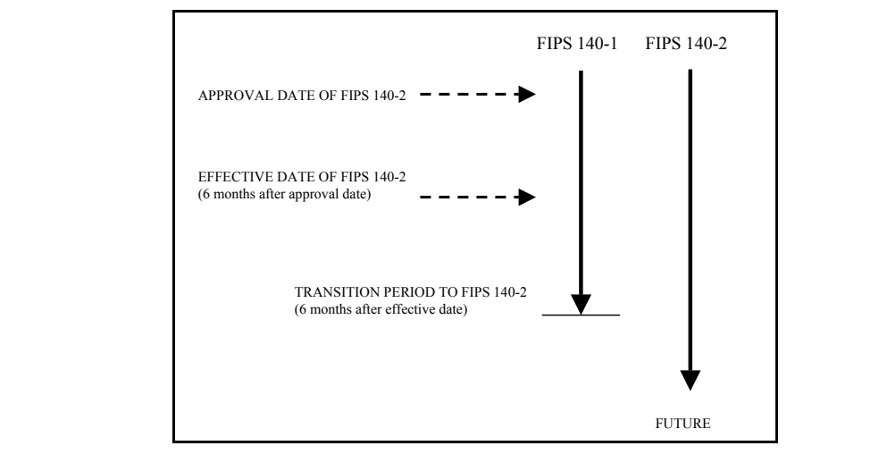
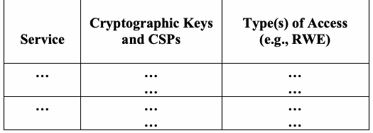
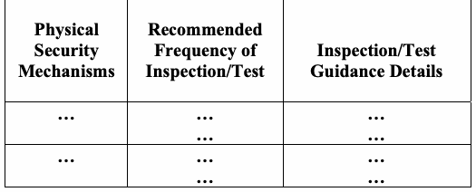
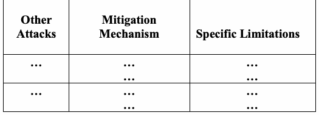

Federal Information Processing Standards · PDF 原文抽出
Security Requirements for Cryptographic Modules
暗号モジュールのセキュリティ要件（旧版）
NIST FIPS 140-2（Security Requirements for Cryptographic Modules）の英文と日本語訳を段落ごとに並べた閲覧用ページです。暗号モジュールに求める4段階のセキュリティ要件を定めた旧版の規格です。現在は FIPS 140-3 に置き換えられています。 翻訳は有志による非公式のもので、NIST および米国商務省が作成・承認・推奨したものではありません。要件の確認にはNIST の正式版 PDFを参照してください。
PDF から抽出した原文は、原本のページ画像と照合済みです。
FIPS PUB 140-2
FIPS PUB 140-2
CHANGE NOTICES (12-03-2002)
変更通知（12-03-2002）
FEDERAL INFORMATION PROCESSING STANDARDS PUBLICATION
連邦情報処理標準出版物
(Supercedes FIPS PUB 140-1, 1994 January 11)
（FIPS PUB 140-1（1994年1月11日）を置き換える）
SECURITY REQUIREMENTS FOR CRYPTOGRAPHIC
セキュリティ要件：暗号
MODULES
モジュール
CATEGORY: COMPUTER SECURITY
カテゴリ：コンピュータセキュリティ
SUBCATEGORY: CRYPTOGRAPHY
サブカテゴリ：暗号
Information Technology Laboratory National Institute of Standards and Technology Gaithersburg, MD 20899-8900
情報技術ラボラトリ 米国国立標準技術研究所 Gaithersburg, MD 20899-8900
Issued May 25, 2001
2001年5月25日発行
［米国商務省の紋章。公的な標章のため、この非公式サイトには掲載していない。原本 PDF を参照。］
U.S. Department of Commerce Donald L. Evans, Secretary
米国商務省 長官 Donald L. Evans
Technology Administration Phillip J. Bond, Under Secretary for Technology
技術局 技術担当次官 Phillip J. Bond
National Institute of Standards and Technology Arden L. Bement, Jr., Director
米国国立標準技術研究所 所長 Arden L. Bement, Jr.
Foreword
まえがき
The Federal Information Processing Standards Publication Series of the National Institute of Standards and Technology (NIST) is the official series of publications relating to standards and guidelines adopted and promulgated under the provisions of Section 5131 of the Information Technology Management Reform Act of 1996 (Public Law 104-106) and the Computer Security Act of 1987 (Public Law 100-235). These mandates have given the Secretary of Commerce and NIST important responsibilities for improving the utilization and management of computer and related telecommunications systems in the Federal government. The NIST, through its Information Technology Laboratory, provides leadership, technical guidance, and coordination of government efforts in the development of standards and guidelines in these areas.
米国国立標準技術研究所（NIST）の連邦情報処理標準出版物シリーズは、1996年情報技術管理改革法（Public Law 104-106）第5131条および1987年コンピュータセキュリティ法（Public Law 100-235）の規定に基づいて採択・公布される標準およびガイドラインに関する公式の出版物シリーズである。これらの法令により、商務長官とNISTは、連邦政府におけるコンピュータおよび関連する電気通信システムの活用と管理を改善するための重要な責任を負っている。NISTは、情報技術ラボラトリを通じて、これらの分野における標準およびガイドラインの策定に関する政府の取組みに対し、指導力、技術的指針および調整を提供している。
Comments concerning Federal Information Processing Standards Publications are welcomed and should be addressed to the Director, Information Technology Laboratory, National Institute of Standards and Technology, 100 Bureau Drive, Stop 8900, Gaithersburg, MD 20899-8900.
連邦情報処理標準出版物に関する意見を歓迎する。意見は、Director, Information Technology Laboratory, National Institute of Standards and Technology, 100 Bureau Drive, Stop 8900, Gaithersburg, MD 20899-8900 宛てに送付することが望ましい。
William Mehuron, Director Information Technology Laboratory
情報技術ラボラトリ 所長 William Mehuron
Abstract
概要
The selective application of technological and related procedural safeguards is an important responsibility of every Federal organization in providing adequate security in its computer and telecommunication systems. This publication provides a standard that will be used by Federal organizations when these organizations specify that cryptographic-based security systems are to be used to provide protection for sensitive or valuable data. Protection of a cryptographic module within a security system is necessary to maintain the confidentiality and integrity of the information protected by the module. This standard specifies the security requirements that will be satisfied by a cryptographic module. The standard provides four increasing, qualitative levels of security intended to cover a wide range of potential applications and environments. The security requirements cover areas related to the secure design and implementation of a cryptographic module. These areas include cryptographic module specification; cryptographic module ports and interfaces; roles, services, and authentication; finite state model; physical security; operational environment; cryptographic key management; electromagnetic interference/electromagnetic compatibility (EMI/EMC); self-tests; design assurance; and mitigation of other attacks.
技術的な保護手段とそれに関連する手続き上の保護手段を選択的に適用することは、コンピュータおよび電気通信システムにおいて十分なセキュリティを提供するうえで、すべての連邦組織が負う重要な責任である。本出版物は、連邦組織が、機微なデータまたは価値あるデータを保護するために暗号に基づくセキュリティシステムを使用すると規定する場合に用いる標準を示す。セキュリティシステム内の暗号モジュールを保護することは、そのモジュールが保護する情報の機密性と完全性を維持するために必要である。本標準は、暗号モジュールが満たす要件となるセキュリティ要件を規定する。本標準は、広範な潜在的アプリケーションと環境に対応することを意図した、段階的に高くなる4つの定性的なセキュリティレベルを定める。セキュリティ要件は、暗号モジュールのセキュアな設計と実装に関する領域を対象とする。これらの領域には、暗号モジュールの仕様、暗号モジュールのポートとインタフェース、役割・サービス・認証、有限状態モデル、物理セキュリティ、運用環境、暗号鍵管理、電磁干渉／電磁両立性（EMI/EMC）、自己テスト、設計保証、その他の攻撃の緩和が含まれる。
Key words: computer security, telecommunication security, cryptography, cryptographic modules, Federal Information Processing Standard (FIPS).
キーワード：コンピュータセキュリティ、電気通信セキュリティ、暗号、暗号モジュール、連邦情報処理標準（FIPS）
National Institute of Standards and Technology FIPS PUB 140-2 64 pages (May 25, 2001)
米国国立標準技術研究所 FIPS PUB 140-2 64ページ（2001年5月25日）
U.S. Government Printing Office Washington: 2001
米国政府印刷局 ワシントン：2001年
For Sale by the National Technical Information Service U.S. Department of Commerce
販売：米国商務省 National Technical Information Service
Federal Information Processing Standards Publication 140-2
連邦情報処理標準出版物 140-2
May 25, 2001
2001年5月25日
Announcing the Standard for
以下の標準を公表する
SECURITY REQUIREMENTS FOR CRYPTOGRAPHIC MODULES
暗号モジュールのためのセキュリティ要件
Federal Information Processing Standards Publications (FIPS PUBS) are issued by the National Institute of Standards and Technology (NIST) after approval by the Secretary of Commerce pursuant to Section 5131 of the Information Technology Management Reform Act of 1996 (Public Law 104-106) and the Computer Security Act of 1987 (Public Law 100-235).
連邦情報処理標準出版物（FIPS PUBS）は、1996年情報技術管理改革法（Public Law 104-106）第5131条および1987年コンピュータセキュリティ法（Public Law 100-235）に従い、商務長官の承認を経て、米国国立標準技術研究所（NIST）が発行する。
1.Name of Standard. Security Requirements for Cryptographic Modules (FIPS PUB 140-2).
1.標準の名称。Security Requirements for Cryptographic Modules（FIPS PUB 140-2）。
2.Category of Standard. Computer Security Standard, Cryptography.
2.標準の区分。コンピュータセキュリティ標準、暗号。
3.Explanation. This standard specifies the security requirements that will be satisfied by a cryptographic module utilized within a security system protecting sensitive but unclassified information (hereafter referred to as sensitive information). The standard provides four increasing, qualitative levels of security: Level 1, Level 2, Level 3, and Level 4. These levels are intended to cover the wide range of potential applications and environments in which cryptographic modules may be employed. The security requirements cover areas related to the secure design and implementation of a cryptographic module. These areas include cryptographic module specification, cryptographic module ports and interfaces; roles, services, and authentication; finite state model; physical security; operational environment; cryptographic key management; electromagnetic interference/electromagnetic compatibility (EMI/EMC); self-tests; design assurance; and mitigation of other attacks. This standard supersedes FIPS 140-1, Security Requirements for Cryptographic Modules, in its entirety.
3.説明。本標準は、機密扱いではないが機微な情報（以下、機微な情報という）を保護するセキュリティシステム内で利用される暗号モジュールが満たす要件となるセキュリティ要件を規定する。本標準は、レベル1、レベル2、レベル3、レベル4という、段階的に高くなる4つの定性的なセキュリティレベルを定める。これらのレベルは、暗号モジュールが使用されうる広範な潜在的アプリケーションと環境に対応することを意図している。セキュリティ要件は、暗号モジュールのセキュアな設計と実装に関する領域を対象とする。これらの領域には、暗号モジュールの仕様、暗号モジュールのポートとインタフェース、役割・サービス・認証、有限状態モデル、物理セキュリティ、運用環境、暗号鍵管理、電磁干渉／電磁両立性（EMI/EMC）、自己テスト、設計保証、その他の攻撃の緩和が含まれる。本標準は、FIPS 140-1, Security Requirements for Cryptographic Modules を全面的に置き換える。
The Cryptographic Module Validation Program (CMVP) validates cryptographic modules to Federal Information Processing Standard (FIPS) 140-2 and other cryptography based standards. The CMVP is a joint effort between NIST and the Communications Security Establishment (CSE) of the Government of Canada. Products validated as conforming to FIPS 140-2 are accepted by the Federal agencies of both countries for the protection of sensitive information (United States) or Designated Information (Canada). The goal of the CMVP is to promote the use of validated cryptographic modules and provide Federal agencies with a security metric to use in procuring equipment containing validated cryptographic modules.
暗号モジュール検証プログラム（CMVP）は、連邦情報処理標準（FIPS）140-2およびその他の暗号に基づく標準に対して暗号モジュールを検証する。CMVPは、NISTとカナダ政府の通信保安庁（CSE）の共同の取組みである。FIPS 140-2に適合すると検証された製品は、機微な情報（米国）または指定情報（カナダ）の保護のために、両国の連邦機関に受け入れられる。CMVPの目的は、検証済み暗号モジュールの使用を促進し、検証済み暗号モジュールを含む機器を調達する際に用いるセキュリティの尺度を連邦機関に提供することである。
In the CMVP, vendors of cryptographic modules use independent, accredited testing laboratories to have their modules tested. National Voluntary Laboratory Accreditation Program (NVLAP) accredited laboratories perform cryptographic module compliance/conformance testing.
CMVPでは、暗号モジュールのベンダは、認定を受けた独立の試験機関を利用して自社のモジュールを試験させる。全米試験所自主認定プログラム（NVLAP）の認定を受けた試験機関が、暗号モジュールの準拠性／適合性試験を実施する。
4. Approving Authority.
4. 承認権者
Secretary of Commerce.
商務長官。
5.Maintenance Agency. Department of Commerce, National Institute of Standards and Technology, Information Technology Laboratory (ITL).
5.維持管理機関。商務省、米国国立標準技術研究所、情報技術ラボラトリ（ITL）。
6. Cross Index.
6. 相互参照
a.FIPS PUB 46-3, Data Encryption Standard.
a.FIPS PUB 46-3, Data Encryption Standard.
b.FIPS PUB 74, Guidelines for Implementing and Using the NBS Data Encryption Standard.
b.FIPS PUB 74, Guidelines for Implementing and Using the NBS Data Encryption Standard.
c.FIPS PUB 81, DES Modes of Operation.
c.FIPS PUB 81, DES Modes of Operation.
d.FIPS PUB 113, Computer Data Authentication.
d.FIPS PUB 113, Computer Data Authentication.
e.FIPS PUB 171, Key Management Using ANSI X9.17.
e.FIPS PUB 171, Key Management Using ANSI X9.17.
f.FIPS PUB 180-1, Secure Hash Standard.
f.FIPS PUB 180-1, Secure Hash Standard.
g.FIPS PUB 186-2, Digital Signature Standard.
g.FIPS PUB 186-2, Digital Signature Standard.
h.Special Publication 800-2, Public Key Cryptography.
h.Special Publication 800-2, Public Key Cryptography.
i.Special Publication 800-20, Modes of Operation Validation System for the Triple Data Encryption Algorithm (TMOVS): Requirements and Procedures
i.Special Publication 800-20, Modes of Operation Validation System for the Triple Data Encryption Algorithm (TMOVS): Requirements and Procedures
These documents may be found at the CMVP URL http://www.nist.gov/cmvp. Other NIST publications may be applicable to the implementation and use of this standard. A list (NIST Publications List 91) of currently available computer security publications, including ordering information, can be obtained from NIST.
これらの文書は、CMVPのURL http://www.nist.gov/cmvp で入手できる。本標準の実装と使用には、NISTのその他の出版物が該当する場合もある。現在入手可能なコンピュータセキュリティ関連出版物の一覧（NIST Publications List 91）は、注文方法を含めてNISTから入手できる。
7.Applicability. This standard is applicable to all Federal agencies that use cryptographic-based security systems to protect sensitive information in computer and telecommunication systems (including voice systems) as defined in Section 5131 of the Information Technology Management Reform Act of 1996, Public Law 104-106. This standard shall be used in designing and implementing cryptographic modules that Federal departments and agencies operate or are operated for them under contract. Cryptographic modules that have been approved for classified use may be used in lieu of modules that have been validated against this standard. The adoption and use of this standard is available to private and commercial organizations.
7.適用範囲。本標準は、1996年情報技術管理改革法（Public Law 104-106）第5131条の定義に基づき、コンピュータおよび電気通信システム（音声システムを含む）において機微な情報を保護するために暗号に基づくセキュリティシステムを使用するすべての連邦機関に適用される。本標準は、連邦の省庁が運用する暗号モジュール、または契約に基づき省庁のために運用される暗号モジュールの設計と実装において使用されなければならない。秘密区分のある用途での使用が承認された暗号モジュールは、本標準に対して検証されたモジュールの代わりに使用してよい。民間組織および商業組織も本標準を採用し使用することができる。
8.Applications. Cryptographic-based security systems may be utilized in various computer and telecommunication applications (e.g., data storage, access control and personal identification, network communications, radio, facsimile, and video) and in various environments (e.g., centralized computer facilities, office environments, and hostile environments). The cryptographic services (e.g., encryption, authentication, digital signature, and key management) provided by a cryptographic module are based on many factors that are specific to the application and environment. The security level to which a cryptographic module is validated must be chosen to provide a level of security appropriate for the security requirements of the application and environment in which the module will be utilized and the security services that the module will provide. The security requirements for a particular security level include both the security requirements specific to that level and the security requirements that apply to all modules regardless of the level.
8.用途。暗号に基づくセキュリティシステムは、さまざまなコンピュータおよび電気通信の用途（例：データ保管、アクセス制御と個人識別、ネットワーク通信、無線、ファクシミリ、ビデオ）や、さまざまな環境（例：集中型のコンピュータ施設、オフィス環境、敵対的な環境）で利用されうる。暗号モジュールが提供する暗号サービス（例：暗号化、認証、デジタル署名、鍵管理）は、用途と環境に固有の多くの要因に基づく。暗号モジュールの検証を受けるセキュリティレベルは、そのモジュールを利用する用途と環境のセキュリティ要件、およびモジュールが提供するセキュリティサービスに見合ったセキュリティの水準を提供するように選択しなければならない。特定のセキュリティレベルのセキュリティ要件には、そのレベルに固有のセキュリティ要件と、レベルにかかわらずすべてのモジュールに適用されるセキュリティ要件の両方が含まれる。
9.Specifications. Federal Information Processing Standard (FIPS) 140-2, Security Requirements for Cryptographic Modules (affixed).
9.仕様。連邦情報処理標準（FIPS）140-2, Security Requirements for Cryptographic Modules（添付）。
10. Implementations.
10. 実装
This standard covers implementations of cryptographic modules including, but not limited to, hardware components or modules, software/firmware programs or modules or any combination thereof. Cryptographic modules that are validated under the CMVP will be considered as conforming to this standard. Information about the CMVP can be obtained from the
本標準は、ハードウェアのコンポーネントもしくはモジュール、ソフトウェア／ファームウェアのプログラムもしくはモジュール、またはそれらの任意の組合せを含む（ただしこれらに限らない）暗号モジュールの実装を対象とする。CMVPの下で検証された暗号モジュールは、本標準に適合しているとみなされる。CMVPに関する情報は、以下から入手できる。
a. National Institute of Standards and Technology, Information Technology Laboratory, 100 Bureau Drive, Stop 8900, Gaithersburg, MD 20899-8900. b. Communications Security Establishment, ITS Client Services, 1500 Bronson Ave., Ottawa, ON K1G 3Z4. c. CMVP URL http://www.nist.gov/cmvp.
a. National Institute of Standards and Technology, Information Technology Laboratory, 100 Bureau Drive, Stop 8900, Gaithersburg, MD 20899-8900. b. Communications Security Establishment, ITS Client Services, 1500 Bronson Ave., Ottawa, ON K1G 3Z4. c. CMVPのURL http://www.nist.gov/cmvp
11. Approved Security Functions.
11. 承認されたセキュリティ機能
Cryptographic modules that conform to this standard shall employ Approved security functions such as cryptographic algorithms, cryptographic key management techniques, and authentication techniques that have been approved for protecting Federal government sensitive information. Approved security functions include those that are either:
本標準に適合する暗号モジュールは、連邦政府の機微な情報を保護するために承認された暗号アルゴリズム、暗号鍵管理技法、認証技法などの、承認されたセキュリティ機能を使用しなければならない。承認されたセキュリティ機能とは、次のいずれかに該当するものである。
a. specified in a Federal Information Processing Standard (FIPS), b. adopted in a FIPS and specified either in an appendix to the FIPS or in a document referenced by the FIPS, or c. specified in the list of Approved security functions.
a. 連邦情報処理標準（FIPS）で規定されているもの、b. FIPSで採用され、そのFIPSの附属書またはそのFIPSが参照する文書で規定されているもの、c. 承認されたセキュリティ機能のリストで規定されているもの。
12.Interpretation. Questions concerning the content and specifications of this standard should be addressed to: Director, Information Technology Laboratory, ATTN: FIPS 140-2 Interpretation, National Institute of Standards and Technology, 100 Bureau Drive, Stop 8900, Gaithersburg, MD 20899-8900. Resolution of questions regarding this standard will be provided by the validation authorities at NIST and CSE.
12.解釈。本標準の内容と仕様に関する質問は、Director, Information Technology Laboratory, ATTN: FIPS 140-2 Interpretation, National Institute of Standards and Technology, 100 Bureau Drive, Stop 8900, Gaithersburg, MD 20899-8900 宛てに送付することが望ましい。本標準に関する質問への回答は、NISTとCSEの検証当局が提供する。
13.Export Control. Certain cryptographic devices and technical data regarding them are subject to Federal export controls and exports of cryptographic modules implementing this standard and technical data regarding them must comply with these Federal regulations and be licensed by the Bureau of Export Administration of the U.S. Department of Commerce. Applicable Federal government export controls are specified in Title 15, Code of Federal Regulations (CFR) Part 740.17; Title 15, CFR Part 742; and Title 15, CFR Part 774, Category 5, Part 2.
13.輸出管理。一部の暗号装置とそれに関する技術データは連邦の輸出管理の対象であり、本標準を実装する暗号モジュールとそれに関する技術データの輸出は、これらの連邦規則に従い、かつ米国商務省輸出管理局の許可を受けなければならない。適用される連邦政府の輸出管理は、連邦規則集（CFR）第15編Part 740.17、第15編CFR Part 742、および第15編CFR Part 774 Category 5 Part 2に規定されている。
14.Implementation Schedule. This standard becomes effective six months after approval by the Secretary of Commerce. A transition period from November 25, 2001 until six months after the effective date is provided to enable all agencies to develop plans for the acquisition of products that are compliant with FIPS 140-2. Agencies may retain and use FIPS 140-1 validated products that have been purchased before the end of the transition period. After the transition period, modules will no longer be tested against the FIPS 140-1 requirements. After the transition period, all previous validations against FIPS 140-1 will still be recognized. Figure 1 summarizes the FIPS 140-2 implementation schedule.
14.実施スケジュール。本標準は、商務長官による承認の6か月後に発効する。すべての機関がFIPS 140-2に準拠した製品の調達計画を策定できるよう、2001年11月25日から発効日の6か月後までの移行期間を設ける。各機関は、移行期間の終了前に購入したFIPS 140-1検証済み製品を引き続き保有し使用してよい。移行期間の後は、モジュールはFIPS 140-1の要件に対して試験されなくなる。移行期間の後も、FIPS 140-1に対する過去の検証はすべて引き続き認められる。図1にFIPS 140-2の実施スケジュールをまとめる。

図1. FIPS 140-2の実施スケジュール。枠内の時系列図で、時間は上から下へ進む。「FIPS 140-1」と「FIPS 140-2」を見出しとする2本の縦の矢印がある。「APPROVAL DATE OF FIPS 140-2」（FIPS 140-2の承認日）と「EFFECTIVE DATE OF FIPS 140-2 (6 months after approval date)」（FIPS 140-2の発効日（承認日の6か月後））のラベルから、破線矢印がFIPS 140-1の矢印を指す。FIPS 140-1の矢印は「TRANSITION PERIOD TO FIPS 140-2 (6 months after effective date)」（FIPS 140-2への移行期間（発効日の6か月後））と書かれた横線で終わり、FIPS 140-2の矢印は「FUTURE」（将来）まで続く。
Figure 1. FIPS 140-2 Implementation Schedule
図1. FIPS 140-2の実施スケジュール
15.Qualifications. The security requirements specified in this standard are based upon information provided by many sources within the Federal government and private industry. The requirements are designed to protect against adversaries mounting cost-effective attacks on sensitive government or commercial data (e.g., hackers, organized crime, and economic competitors). The primary goal in designing an effective security system is to make the cost of any attack greater than the possible payoff.
15.制約事項。本標準で規定するセキュリティ要件は、連邦政府内および民間産業の多くの情報源から提供された情報に基づいている。これらの要件は、政府または商業上の機微なデータに対して費用対効果の高い攻撃を仕掛ける敵対者（例：ハッカー、組織犯罪、経済的競合者）から保護するように設計されている。効果的なセキュリティシステムを設計する際の主要な目標は、いかなる攻撃のコストも、その攻撃から得られうる利益より大きくすることである。
While the security requirements specified in this standard are intended to maintain the security provided by a cryptographic module, conformance to this standard is not sufficient to ensure that a particular module is secure. The operator of a cryptographic module is responsible for ensuring that the security provided by a module is sufficient and acceptable to the owner of the information that is being protected and that any residual risk is acknowledged and accepted.
本標準で規定するセキュリティ要件は暗号モジュールが提供するセキュリティを維持することを意図しているが、本標準への適合だけでは、特定のモジュールがセキュアであることを保証するには十分でない。暗号モジュールのオペレータは、モジュールが提供するセキュリティが、保護対象の情報の所有者にとって十分かつ受け入れ可能なものであること、および残存リスクが認識され受容されていることを確実にする責任を負う。
Similarly, the use of a validated cryptographic module in a computer or telecommunications system does not guarantee the security of the overall system. The responsible authority in each agency shall ensure that the security of the system is sufficient and acceptable.
同様に、コンピュータまたは電気通信システムにおいて検証済み暗号モジュールを使用しても、システム全体のセキュリティは保証されない。各機関の責任者は、システムのセキュリティが十分かつ受け入れ可能であることを確実にしなければならない。
Since a standard of this nature must be flexible enough to adapt to advancements and innovations in science and technology, this standard will be reviewed every five years in order to consider new or revised requirements that may be needed to meet technological and economic changes.
この種の標準は科学技術の進歩と革新に適応できる柔軟性を備えていなければならないため、本標準は、技術的および経済的な変化に対応するために必要となりうる新規または改訂の要件を検討するよう、5年ごとに見直される。
16. Waiver Procedure.
16. 免除手続き
Under certain exceptional circumstances, the heads of Federal agencies, or their delegates, may approve waivers to Federal Information Processing Standards (FIPS), for their agency. The heads of such agencies may redelegate such authority only to a senior official designated pursuant to Section 3506(b) of Title 44, U.S. Code. Waivers shall be granted only when compliance with a standard would
特定の例外的な状況においては、連邦機関の長またはその委任を受けた者は、自機関について連邦情報処理標準（FIPS）の適用免除を承認してよい。当該機関の長は、合衆国法典第44編第3506条(b)に従って指名された上級職員に対してのみ、この権限を再委任できる。免除は、標準に準拠することが次のいずれかに該当する場合にのみ認められなければならない。
a..adversely affect the accomplishment of the mission of an operator of Federal computer system or
a..連邦コンピュータシステムのオペレータの任務の遂行に悪影響を及ぼす場合、または
b. cause a major adverse financial impact on the operator that is not offset by government-wide savings.
b. 政府全体での節減によって相殺されない重大な財政上の悪影響をオペレータに及ぼす場合。
Agency heads may act upon a written waiver request containing the information detailed above. Agency heads may also act without a written waiver request when they determine which conditions for meeting the standard cannot be met. Agency heads may approve waivers only by a written decision that explains the basis on which the agency head made the required finding(s). A copy of each such decision, with procurement sensitive or classified portions clearly identified, shall be sent to: National Institute of Standards and Technology; ATTN: FIPS Waiver Decision, Information Technology Laboratory, 100 Bureau Drive, Stop 8900, Gaithersburg, MD 20899-8900.
機関の長は、上記の情報を記載した書面による免除申請に基づいて措置を講じてよい。機関の長は、標準を満たすための条件のうちどれが満たせないかを判断した場合には、書面による免除申請がなくても措置を講じてよい。機関の長は、必要な判断を下した根拠を説明する書面による決定によってのみ免除を承認してよい。そのような決定の写しは、調達上機微な部分または秘密区分のある部分を明示したうえで、National Institute of Standards and Technology; ATTN: FIPS Waiver Decision, Information Technology Laboratory, 100 Bureau Drive, Stop 8900, Gaithersburg, MD 20899-8900 宛てに送付されなければならない。
In addition, notice of each waiver granted and each delegation of authority to approve waivers shall be sent promptly to the Committee on Government Operations of the House of Representatives and the Committee on Government Affairs of the Senate and shall be published promptly in the Federal Register.
さらに、認められた各免除および免除承認権限の各委任の通知は、下院政府活動委員会および上院政府問題委員会に速やかに送付され、かつFederal Registerで速やかに公表されなければならない。
When the determination on a waiver applies to the procurement of equipment and/or services, a notice of the waiver determination must be published in the Commerce Business Daily as a part of the notice of solicitation for offers of an acquisition or, if the waiver determination is made after that notice is published, by amendment to such notice.
免除の決定が機器またはサービス（あるいはその両方）の調達に適用される場合、免除決定の通知は、調達の申込み募集の通知の一部としてCommerce Business Dailyで公表しなければならない。また、その通知の公表後に免除が決定された場合は、当該通知の修正によって公表しなければならない。
A copy of the waiver, any supporting documents, the document approving the waiver and any supporting and accompanying documents, with such deletions as the agency is authorized and decides to make under Section 552(b) of Title 5, U.S. Code, shall be part of the procurement documentation and retained by the agency.
免除の写し、その裏付け文書、免除を承認する文書、およびその裏付け文書と添付文書は、合衆国法典第5編第552条(b)に基づいて機関が行う権限を有し、行うと決定した削除を施したうえで、調達文書の一部とし、機関が保管しなければならない。
17.Where to obtain copies. Copies of this publication are available from the URL: http://csrc.nist.gov/publications. Copies are available for sale by the National Technical Information Service, U.S. Department of Commerce, Springfield, VA 22161. When ordering, refer to Federal Information Processing Standards Publication 140-2 (FIPSPUB1402) and identify the title. When microfiche is desired, this should be specified. Prices are published by NTIS in current catalogs and other issuances. Payment may be made by check, money order, deposit account, or charged to a credit card accepted by NTIS.
17.写しの入手先。本出版物の写しは、URL http://csrc.nist.gov/publications から入手できる。写しは、National Technical Information Service, U.S. Department of Commerce, Springfield, VA 22161 から購入できる。注文の際は、Federal Information Processing Standards Publication 140-2（FIPSPUB1402）を参照し、標題を明示すること。マイクロフィッシュを希望する場合は、その旨を指定すること。価格は、NTISの最新のカタログおよびその他の刊行物に掲載されている。支払いは、小切手、郵便為替、預金口座、またはNTISが受け付けるクレジットカードによって行うことができる。
18.CHANGE NOTICE. See important change notice at the end of this document.
18.変更通知。本文書の末尾にある重要な変更通知を参照すること。
TABLE OF CONTENTS
目次
1. OVERVIEW — 1
1. 概要 — 1
1.1 Security Level 1 — 1
1.1 セキュリティレベル1 — 1
1.2 Security Level 2 — 2
1.2 セキュリティレベル2 — 2
1.3 Security Level 3 — 2
1.3 セキュリティレベル3 — 2
1.4 Security Level 4 — 3
1.4 セキュリティレベル4 — 3
2. GLOSSARY OF TERMS AND ACRONYMS — 4
2. 用語および略語の解説 — 4
2.1 Glossary of Terms — 4
2.1 用語集 — 4
2.2 Acronyms — 8
2.2 略語 — 8
3. FUNCTIONAL SECURITY OBJECTIVES — 11
3. 機能上のセキュリティ目標 — 11
4. SECURITY REQUIREMENTS — 12
4. セキュリティ要件 — 12
4.1 Cryptographic Module Specification — 13
4.1 暗号モジュールの仕様 — 13
4.2 Cryptographic Module Ports and Interfaces — 14
4.2 暗号モジュールのポートとインタフェース — 14
4.3 Roles, Services, and Authentication — 15
4.3 役割、サービス、認証 — 15
4.3.1 Roles — 16
4.3.1 役割 — 16
4.3.2 Services — 16
4.3.2 サービス — 16
4.3.3 Operator Authentication — 17
4.3.3 オペレータ認証 — 17
4.4 Finite State Model — 19
4.4 有限状態モデル — 19
4.5 Physical Security — 20
4.5 物理セキュリティ — 20
4.5.1 General Physical Security Requirements — 21
4.5.1 物理セキュリティの一般要件 — 21
4.5.2 Single-Chip Cryptographic Modules — 23
4.5.2 シングルチップ暗号モジュール — 23
4.5.3 Multiple-Chip Embedded Cryptographic Modules — 24
4.5.3 マルチチップ組込み型暗号モジュール — 24
4.5.4 Multiple-Chip Standalone Cryptographic Modules — 25
4.5.4 マルチチップスタンドアロン型暗号モジュール — 25
4.5.5 Environmental Failure Protection/Testing — 26
4.5.5 環境故障保護／試験 — 26
4.6 Operational Environment — 27
4.6 運用環境 — 27
4.6.1 Operating System Requirements — 28
4.6.1 オペレーティングシステムの要件 — 28
4.7 Cryptographic Key Management — 30
4.7 暗号鍵管理 — 30
4.7.1 Random Number Generators (RNGs) — 30
4.7.1 乱数生成器（RNG） — 30
4.7.2 Key Generation — 31
4.7.2 鍵生成 — 31
4.7.3 Key Establishment — 31
4.7.3 鍵確立 — 31
4.7.4 Key Entry and Output — 31
4.7.4 鍵の入力と出力 — 31
4.7.5 Key Storage — 33
4.7.5 鍵の保管 — 33
4.7.6 Key Zeroization — 33
4.7.6 鍵のゼロ化 — 33
4.8 Electromagnetic Interference/Electromagnetic Compatibility (EMI/EMC) — 33
4.8 電磁干渉／電磁両立性（EMI/EMC） — 33
4.9 Self-Tests — 33
4.9 自己テスト — 33
4.9.1 Power-Up Tests — 34
4.9.1 電源投入時テスト — 34
4.9.2 Conditional Tests — 35
4.9.2 条件付きテスト — 35
4.10 Design Assurance — 36
4.10 設計保証 — 36
4.10.1 Configuration Management — 36
4.10.1 構成管理 — 36
4.10.2 Delivery and Operation — 37
4.10.2 配付と運用 — 37
4.10.3 Development — 37
4.10.3 開発 — 37
4.10.4 Guidance Documents — 38
4.10.4 ガイダンス文書 — 38
4. 11 Mitigation of Other Attacks — 39
4. 11 その他の攻撃の緩和 — 39
APPENDIX A: SUMMARY OF DOCUMENTATION REQUIREMENTS — 41
付録A：文書化要件の要約 — 41
APPENDIX B: RECOMMENDED SOFTWARE DEVELOPMENT PRACTICES — 45
付録B：推奨されるソフトウェア開発手法 — 45
APPENDIX C: CRYPTOGRAPHIC MODULE SECURITY POLICY — 47
付録C：暗号モジュールのセキュリティポリシー — 47
APPENDIX D: SELECTED BIBLIOGRAPHY — 51
付録D：主要参考文献 — 51
APPENDIX E: APPLICABLE INTERNET UNIFORM RESOURCE LOCATORS (URL) — 53
付録E：関連するインターネットURL（Uniform Resource Locator） — 53
CHANGE NOTICE — 54
変更通知 — 54
Change Notice 1 (Superceded by Change Notice 2) — 54
変更通知1（変更通知2により置き換え） — 54
Change Notice 2 — 55
変更通知2 — 55
Change Notice 3 — 60
変更通知3 — 60
Change Notice 4 — 61
変更通知4 — 61
1. OVERVIEW
1. 概要
This standard specifies the security requirements for a cryptographic module utilized within a security system protecting sensitive information in computer and telecommunication systems (including voice systems) as defined in Section 5131 of the Information Technology Management Reform Act of 1996, Public Law 104-106.
本規格は、Public Law 104-106であるInformation Technology Management Reform Act of 1996の第5131節に定義されるコンピュータシステムおよび電気通信システム（音声システムを含む）において、機微な情報を保護するセキュリティシステム内で使用される暗号モジュールのセキュリティ要件を規定する。
FIPS 140-1 was developed by a government and industry working group composed of both operators and vendors. The working group identified requirements for four security levels for cryptographic modules to provide for a wide spectrum of data sensitivity (e.g., low value administrative data, million dollar funds transfers, and life protecting data) and a diversity of application environments (e.g., a guarded facility, an office, and a completely unprotected location). Four security levels are specified for each of 11 requirement areas. Each security level offers an increase in security over the preceding level. These four increasing levels of security allow cost-effective solutions that are appropriate for different degrees of data sensitivity and different application environments. FIPS 140-2 incorporates changes in applicable standards and technology since the development of FIPS 140-1 as well as changes that are based on comments received from the vendor, laboratory, and user communities.
FIPS 140-1は、オペレータとベンダの双方からなる政府・産業界の作業部会によって策定された。作業部会は、広範なデータの機微度（例：価値の低い管理データ、百万ドル規模の資金移動、生命を守るデータ）と多様な適用環境（例：警備された施設、オフィス、まったく保護されていない場所）に対応するため、暗号モジュールの4つのセキュリティレベルについて要件を定めた。11の要件領域のそれぞれについて4つのセキュリティレベルが規定されている。各セキュリティレベルは、その前のレベルよりも高いセキュリティを提供する。段階的に高くなるこれら4つのセキュリティレベルにより、データの機微度や適用環境の違いに見合った費用対効果の高い解決策をとることができる。FIPS 140-2は、FIPS 140-1の策定以降の関連規格および技術の変化を取り込むとともに、ベンダ、試験機関、利用者の各コミュニティから寄せられたコメントに基づく変更を反映している。
While the security requirements specified in this standard are intended to maintain the security provided by a cryptographic module, conformance to this standard is not sufficient to ensure that a particular module is secure. The operator of a cryptographic module is responsible for ensuring that the security provided by the module is sufficient and acceptable to the owner of the information that is being protected, and that any residual risk is acknowledged and accepted.
本規格に規定するセキュリティ要件は、暗号モジュールが提供するセキュリティを維持することを意図しているが、本規格への適合だけでは特定のモジュールの安全性を保証するのに十分ではない。暗号モジュールのオペレータは、モジュールが提供するセキュリティが、保護対象となる情報の所有者にとって十分かつ受け入れ可能なものであること、および残存リスクが認識され受容されていることを確保する責任を負う。
Similarly, the use of a validated cryptographic module in a computer or telecommunications system is not sufficient to ensure the security of the overall system. The overall security level of a cryptographic module must be chosen to provide a level of security appropriate for the security requirements of the application and environment in which the module is to be utilized and for the security services that the module is to provide. The responsible authority in each organization should ensure that their computer and telecommunication systems that utilize cryptographic modules provide an acceptable level of security for the given application and environment.
同様に、コンピュータシステムまたは電気通信システムにおいて検証済みの暗号モジュールを使用するだけでは、システム全体のセキュリティを確保するのに十分ではない。暗号モジュールの全体的なセキュリティレベルは、モジュールを使用するアプリケーションおよび環境のセキュリティ要件と、モジュールが提供するセキュリティサービスとに見合ったセキュリティレベルを提供するように選択しなければならない。各組織の責任ある当局は、暗号モジュールを使用する自組織のコンピュータシステムおよび電気通信システムが、当該アプリケーションおよび環境において受け入れ可能なセキュリティレベルを提供するよう確保することが望ましい。
The importance of security awareness and of making information security a management priority should be communicated to all users. Since information security requirements vary for different applications, organizations should identify their information resources and determine the sensitivity to and the potential impact of losses. Controls should be based on the potential risks and should be selected from available controls, including administrative policies and procedures, physical and environmental controls, information and data controls, software development and acquisition controls, and backup and contingency planning.
セキュリティ意識の重要性、および情報セキュリティを経営上の優先事項とすることの重要性を、すべての利用者に周知することが望ましい。情報セキュリティ要件はアプリケーションごとに異なるため、組織は自らの情報資源を特定し、その機微度と損失時の潜在的な影響を判断することが望ましい。管理策は潜在的なリスクに基づくことが望ましく、管理上の方針および手順、物理的・環境的管理策、情報およびデータの管理策、ソフトウェアの開発および調達の管理策、バックアップおよび緊急時計画を含む、利用可能な管理策の中から選択することが望ましい。
The following sections provide an overview of the four security levels. Common examples, given to illustrate how the requirements might be met, are not intended to be restrictive or exhaustive.
以下の節では、4つのセキュリティレベルの概要を示す。要件をどのように満たしうるかを説明するために挙げる一般的な例は、制限的または網羅的なものとすることを意図していない。
The location of Annexes A, B, C, and D can be found in APPENDIX D: SELECTED BIBLIOGRAPHY.
附属書A、B、C、Dの所在は、付録D：主要参考文献に記載している。
1.1 Security Level 1
1.1 セキュリティレベル1
Security Level 1 provides the lowest level of security. Basic security requirements are specified for a cryptographic module (e.g., at least one Approved algorithm or Approved security function shall be used). No specific physical security mechanisms are required in a Security Level 1 cryptographic module beyond the basic requirement for production-grade components. An example of a Security Level 1 cryptographic module is a personal computer (PC) encryption board.
セキュリティレベル1は、最も低いレベルのセキュリティを提供する。暗号モジュールには基本的なセキュリティ要件が規定される（例：少なくとも1つの承認されたアルゴリズムまたは承認されたセキュリティ機能を使用しなければならない）。セキュリティレベル1の暗号モジュールでは、製品グレードの部品という基本要件を超える特定の物理セキュリティ機構は要求されない。セキュリティレベル1の暗号モジュールの例として、パーソナルコンピュータ（PC）の暗号化ボードがある。
Security Level 1 allows the software and firmware components of a cryptographic module to be executed on a general purpose computing system using an unevaluated operating system. Such implementations may be appropriate for some low-level security applications when other controls, such as physical security, network security, and administrative procedures are limited or nonexistent. The implementation of cryptographic software may be more cost-effective than corresponding hardware-based mechanisms, enabling organizations to select from alternative cryptographic solutions to meet lower-level security requirements.
セキュリティレベル1では、暗号モジュールのソフトウェアおよびファームウェアのコンポーネントを、評価されていないオペレーティングシステムを用いる汎用コンピューティングシステム上で実行することを認める。このような実装は、物理セキュリティ、ネットワークセキュリティ、管理手順などの他の管理策が限定的または存在しない場合に、一部の低レベルのセキュリティアプリケーションに適していることがある。暗号ソフトウェアの実装は、対応するハードウェアベースの機構よりも費用対効果が高い場合があり、組織はより低いレベルのセキュリティ要件を満たすために、代替となる暗号ソリューションから選択できる。
1.2 Security Level 2
1.2 セキュリティレベル2
Security Level 2 enhances the physical security mechanisms of a Security Level 1 cryptographic module by adding the requirement for tamper-evidence, which includes the use of tamper-evident coatings or seals or for pick-resistant locks on removable covers or doors of the module. Tamper-evident coatings or seals are placed on a cryptographic module so that the coating or seal must be broken to attain physical access to the plaintext cryptographic keys and critical security parameters (CSPs) within the module. Tamper-evident seals or pick-resistant locks are placed on covers or doors to protect against unauthorized physical access.
セキュリティレベル2は、タンパー証跡の要件を追加することによって、セキュリティレベル1の暗号モジュールの物理セキュリティ機構を強化する。この要件には、タンパー証跡性のあるコーティングもしくはシールの使用、またはモジュールの取外し可能なカバーもしくは扉へのピッキング耐性のある錠の使用が含まれる。タンパー証跡性のあるコーティングまたはシールは、モジュール内の平文の暗号鍵および重要セキュリティパラメータ（CSP）に物理的にアクセスするにはコーティングまたはシールを破らなければならないように、暗号モジュールに施される。タンパー証跡性のあるシールまたはピッキング耐性のある錠は、許可されていない物理的アクセスから保護するためにカバーまたは扉に取り付けられる。
Security Level 2 requires, at a minimum, role-based authentication in which a cryptographic module authenticates the authorization of an operator to assume a specific role and perform a corresponding set of services.
セキュリティレベル2では、少なくとも役割ベースの認証が要求される。役割ベースの認証では、暗号モジュールは、オペレータが特定の役割を担い、それに対応する一連のサービスを実行することの認可を認証する。
Security Level 2 allows the software and firmware components of a cryptographic module to be executed on a general purpose computing system using an operating system that
セキュリティレベル2では、暗号モジュールのソフトウェアおよびファームウェアのコンポーネントを、次の条件を満たすオペレーティングシステムを用いる汎用コンピューティングシステム上で実行することを認める。
•meets the functional requirements specified in the Common Criteria (CC) Protection Profiles (PPs) listed in Annex B and
•附属書Bに列挙するコモンクライテリア（CC）プロテクションプロファイル（PP）に規定される機能要件を満たし、かつ
•is evaluated at the CC evaluation assurance level EAL2 (or higher).
•CCの評価保証レベルEAL2（またはそれ以上）で評価されている。
An equivalent evaluated trusted operating system may be used. A trusted operating system provides a level of trust so that cryptographic modules executing on general purpose computing platforms are comparable to cryptographic modules implemented using dedicated hardware systems.
同等の評価を受けたトラステッドオペレーティングシステムを使用してもよい。トラステッドオペレーティングシステムは、汎用コンピューティングプラットフォーム上で実行される暗号モジュールが、専用ハードウェアシステムを用いて実装された暗号モジュールに匹敵するような信頼のレベルを提供する。
1.3 Security Level 3
1.3 セキュリティレベル3
In addition to the tamper-evident physical security mechanisms required at Security Level 2, Security Level 3 attempts to prevent the intruder from gaining access to CSPs held within the cryptographic module. Physical security mechanisms required at Security Level 3 are intended to have a high probability of detecting and responding to attempts at physical access, use or modification of the cryptographic module. The physical security mechanisms may include the use of strong enclosures and tamper detection/response circuitry that zeroizes all plaintext CSPs when the removable covers/doors of the cryptographic module are opened.
セキュリティレベル3は、セキュリティレベル2で要求されるタンパー証跡性のある物理セキュリティ機構に加えて、侵入者が暗号モジュール内に保持されたCSPにアクセスすることを防止しようとするものである。セキュリティレベル3で要求される物理セキュリティ機構は、暗号モジュールへの物理的なアクセス、使用または改変の試みを高い確率で検知し対応することを意図している。物理セキュリティ機構には、堅牢な筐体の使用や、暗号モジュールの取外し可能なカバー／扉が開かれたときにすべての平文CSPをゼロ化するタンパー検知／対応回路の使用が含まれうる。
Security Level 3 requires identity-based authentication mechanisms, enhancing the security provided by the role-based authentication mechanisms specified for Security Level 2. A cryptographic module authenticates the identity of an operator and verifies that the identified operator is authorized to assume a specific role and perform a corresponding set of services.
セキュリティレベル3では、識別情報ベースの認証機構が要求され、セキュリティレベル2に規定される役割ベースの認証機構が提供するセキュリティを強化する。暗号モジュールは、オペレータの識別情報を認証し、識別されたオペレータが特定の役割を担い、それに対応する一連のサービスを実行することを認可されていることを検証する。
Security Level 3 requires the entry or output of plaintext CSPs (including the entry or output of plaintext CSPs using split knowledge procedures) be performed using ports that are physically separated from other ports, or interfaces that are logically separated using a trusted path from other interfaces. Plaintext CSPs may be entered into or output from the cryptographic module in encrypted form (in which case they may travel through enclosing or intervening systems).
セキュリティレベル3では、平文CSPの入力または出力（知識分割手順を用いた平文CSPの入力または出力を含む）を、他のポートから物理的に分離されたポート、またはトラステッドパスを用いて他のインタフェースから論理的に分離されたインタフェースを使用して行うことが要求される。平文CSPは、暗号化された形式で暗号モジュールに入力または暗号モジュールから出力してもよい（この場合、平文CSPは外側のシステムまたは介在するシステムを経由してもよい）。
Security Level 3 allows the software and firmware components of a cryptographic module to be executed on a general purpose computing system using an operating system that
セキュリティレベル3では、暗号モジュールのソフトウェアおよびファームウェアのコンポーネントを、次の条件を満たすオペレーティングシステムを用いる汎用コンピューティングシステム上で実行することを認める。
•meets the functional requirements specified in the PPs listed in Annex B with the additional functional requirement of a Trusted Path (FTP_TRP.1) and
•附属書Bに列挙するPPに規定される機能要件を、トラステッドパス（FTP_TRP.1）という追加の機能要件とともに満たし、かつ
•is evaluated at the CC evaluation assurance level EAL3 (or higher) with the additional assurance requirement of an Informal Target of Evaluation (TOE) Security Policy Model (ADV_SPM.1).
•CCの評価保証レベルEAL3（またはそれ以上）で、非形式的な評価対象（TOE）セキュリティポリシーモデル（ADV_SPM.1）という追加の保証要件とともに評価されている。
An equivalent evaluated trusted operating system may be used. The implementation of a trusted path protects plaintext CSPs and the software and firmware components of the cryptographic module from other untrusted software or firmware that may be executing on the system.
同等の評価を受けたトラステッドオペレーティングシステムを使用してもよい。トラステッドパスの実装は、平文CSPならびに暗号モジュールのソフトウェアおよびファームウェアのコンポーネントを、システム上で実行されている可能性のある信頼できない他のソフトウェアまたはファームウェアから保護する。
1.4 Security Level 4
1.4 セキュリティレベル4
Security Level 4 provides the highest level of security defined in this standard. At this security level, the physical security mechanisms provide a complete envelope of protection around the cryptographic module with the intent of detecting and responding to all unauthorized attempts at physical access. Penetration of the cryptographic module enclosure from any direction has a very high probability of being detected, resulting in the immediate zeroization of all plaintext CSPs. Security Level 4 cryptographic modules are useful for operation in physically unprotected environments.
セキュリティレベル4は、本規格で定義する最も高いレベルのセキュリティを提供する。このセキュリティレベルでは、物理セキュリティ機構が暗号モジュールの周囲を完全に包み込む保護を提供し、物理的アクセスの許可されていないあらゆる試みを検知し対応することを意図している。暗号モジュールの筐体へのいかなる方向からの侵入も非常に高い確率で検知され、すべての平文CSPが直ちにゼロ化される。セキュリティレベル4の暗号モジュールは、物理的に保護されていない環境での運用に有用である。
Security Level 4 also protects a cryptographic module against a security compromise due to environmental conditions or fluctuations outside of the module's normal operating ranges for voltage and temperature. Intentional excursions beyond the normal operating ranges may be used by an attacker to thwart a cryptographic module's defenses. A cryptographic module is required to either include special environmental protection features designed to detect fluctuations and zeroize CSPs, or to undergo rigorous environmental failure testing to provide a reasonable assurance that the module will not be affected by fluctuations outside of the normal operating range in a manner that can compromise the security of the module.
セキュリティレベル4は、モジュールの電圧および温度の通常動作範囲を外れる環境条件または変動によるセキュリティの侵害からも暗号モジュールを保護する。攻撃者は、通常動作範囲を意図的に逸脱させることによって暗号モジュールの防御を無力化しようとすることがある。暗号モジュールには、変動を検知してCSPをゼロ化するよう設計された特別な環境保護機能を備えるか、または通常動作範囲外の変動によってモジュールのセキュリティを損なうような影響を受けないことについて合理的な保証を得るために厳格な環境故障試験を受けることが要求される。
Security Level 4 allows the software and firmware components of a cryptographic module to be executed on a general purpose computing system using an operating system that
セキュリティレベル4では、暗号モジュールのソフトウェアおよびファームウェアのコンポーネントを、次の条件を満たすオペレーティングシステムを用いる汎用コンピューティングシステム上で実行することを認める。
•meets the functional requirements specified for Security Level 3 and
•セキュリティレベル3に規定される機能要件を満たし、かつ
•is evaluated at the CC evaluation assurance level EAL4 (or higher).
•CCの評価保証レベルEAL4（またはそれ以上）で評価されている。
An equivalent evaluated trusted operating system may be used.
同等の評価を受けたトラステッドオペレーティングシステムを使用してもよい。
2. GLOSSARY OF TERMS AND ACRONYMS
2. 用語および略語集
2.1 Glossary of Terms
2.1 用語集
The following definitions are tailored for use in this standard:
以下の定義は、本規格での使用に合わせて調整したものである。
Approved: FIPS-Approved and/or NIST-recommended.
Approved：FIPS承認および／またはNIST推奨であること。
Approved mode of operation: a mode of the cryptographic module that employs only Approved security functions (not to be confused with a specific mode of an Approved security function, e.g., DES CBC mode).
Approved mode of operation：承認されたセキュリティ機能のみを使用する暗号モジュールのモード（承認されたセキュリティ機能の特定のモード、例えばDES CBCモードと混同しないこと）。
Approved security function: for this standard, a security function (e.g., cryptographic algorithm, cryptographic key management technique, or authentication technique) that is either
Approved security function：本規格においては、次のいずれかに該当するセキュリティ機能（例：暗号アルゴリズム、暗号鍵管理技術、認証技術）をいう。
a) specified in an Approved standard, b) adopted in an Approved standard and specified either in an appendix of the Approved standard or in a document referenced by the Approved standard, or c) specified in the list of Approved security functions.
a) 承認された規格に規定されているもの、b) 承認された規格で採用され、承認された規格の付録または承認された規格が参照する文書のいずれかに規定されているもの、c) 承認されたセキュリティ機能の一覧に規定されているもの。
Authentication code: a cryptographic checksum based on an Approved security function (also known as a Message Authentication Code).
Authentication code：承認されたセキュリティ機能に基づく暗号学的チェックサム（メッセージ認証コード（Message Authentication Code）とも呼ばれる）。
Automated key transport: the transport of cryptographic keys, usually in encrypted form, using electronic means such as a computer network (e.g., key transport/agreement protocols).
Automated key transport：コンピュータネットワークなどの電子的手段（例：鍵輸送／鍵合意プロトコル）を用いた、暗号鍵の輸送（通常は暗号化された形式で行う）。
Compromise: the unauthorized disclosure, modification, substitution, or use of sensitive data (including plaintext cryptographic keys and other CSPs).
Compromise：機微なデータ（平文の暗号鍵およびその他のCSPを含む）の許可されていない開示、改変、置換または使用。
Confidentiality: the property that sensitive information is not disclosed to unauthorized individuals, entities, or processes.
Confidentiality：機微な情報が、許可されていない個人、エンティティまたはプロセスに開示されないという特性。
Control information: information that is entered into a cryptographic module for the purposes of directing the operation of the module.
Control information：暗号モジュールの動作を指示する目的で暗号モジュールに入力される情報。
Critical security parameter (CSP): security-related information (e.g., secret and private cryptographic keys, and authentication data such as passwords and PINs) whose disclosure or modification can compromise the security of a cryptographic module.
Critical security parameter (CSP)：開示または改変によって暗号モジュールのセキュリティを損ないうる、セキュリティ関連の情報（例：秘密鍵およびプライベート鍵、ならびにパスワードやPINなどの認証データ）。
Cryptographic boundary: an explicitly defined continuous perimeter that establishes the physical bounds of a cryptographic module and contains all the hardware, software, and/or firmware components of a cryptographic module.
Cryptographic boundary：暗号モジュールの物理的な境界を定め、暗号モジュールのすべてのハードウェア、ソフトウェアおよび／またはファームウェアのコンポーネントを内包する、明示的に定義された連続した外周。
Cryptographic key (key): a parameter used in conjunction with a cryptographic algorithm that determines
Cryptographic key (key)：暗号アルゴリズムと組み合わせて使用され、次のものを決定するパラメータ。
•the transformation of plaintext data into ciphertext data,
•平文データから暗号文データへの変換
•the transformation of ciphertext data into plaintext data,
•暗号文データから平文データへの変換
•a digital signature computed from data,
•データから計算されるデジタル署名
•the verification of a digital signature computed from data,
•データから計算されたデジタル署名の検証
•an authentication code computed from data, or
•データから計算される認証コード、または
•an exchange agreement of a shared secret.
•共有シークレットの交換合意
Cryptographic key component (key component): a parameter used in conjunction with other key components in an Approved security function to form a plaintext cryptographic key or perform a cryptographic function.
Cryptographic key component (key component)：承認されたセキュリティ機能において他の鍵コンポーネントと組み合わせて使用され、平文の暗号鍵を形成するか、または暗号機能を実行するためのパラメータ。
Cryptographic module: the set of hardware, software, and/or firmware that implements Approved security functions (including cryptographic algorithms and key generation) and is contained within the cryptographic boundary.
Cryptographic module：承認されたセキュリティ機能（暗号アルゴリズムおよび鍵生成を含む）を実装し、暗号境界の内部に含まれる、ハードウェア、ソフトウェアおよび／またはファームウェアの集合。
Cryptographic module security policy: a precise specification of the security rules under which a cryptographic module will operate, including the rules derived from the requirements of this standard and additional rules imposed by the vendor. (See Appendix C.)
Cryptographic module security policy：暗号モジュールが動作する際に従うセキュリティ規則の厳密な仕様。本規格の要件から導かれる規則と、ベンダが課す追加の規則を含む（付録Cを参照）。
Crypto officer: an operator or process (subject), acting on behalf of the operator, performing cryptographic initialization or management functions.
Crypto officer：暗号の初期化または管理機能を実行する、オペレータまたはオペレータに代わって動作するプロセス（サブジェクト）。
Data path: the physical or logical route over which data passes; a physical data path may be shared by multiple logical data paths.
Data path：データが通過する物理的または論理的な経路。1つの物理的なデータパスを複数の論理的なデータパスが共有することがある。
Differential power analysis (DPA): an analysis of the variations of the electrical power consumption of a cryptographic module, using advanced statistical methods and/or other techniques, for the purpose of extracting information correlated to cryptographic keys used in a cryptographic algorithm.
Differential power analysis (DPA)：暗号アルゴリズムで使用される暗号鍵に相関する情報を抽出する目的で、高度な統計的手法および／またはその他の技術を用いて行う、暗号モジュールの電力消費の変動の分析。
Digital signature: the result of a cryptographic transformation of data which, when properly implemented, provides the services of:
Digital signature：データの暗号学的変換の結果であり、適切に実装された場合に次のサービスを提供するもの。
1.origin authentication
1.発信元認証
2.data integrity, and
2.データ完全性、および
3.signer non-repudiation.
3.署名者の否認防止
Electromagnetic compatibility (EMC): the ability of electronic devices to function satisfactorily in an electromagnetic environment without introducing intolerable electromagnetic disturbances to other devices in that environment.
Electromagnetic compatibility (EMC)：電子機器が、その電磁環境内の他の機器に耐えがたい電磁妨害を与えることなく、当該環境において満足に機能する能力。
Electromagnetic interference (EMI): electromagnetic emissions from a device, equipment, or system that interfere with the normal operation of another device, equipment, or system.
Electromagnetic interference (EMI)：ある装置、機器またはシステムから放出され、他の装置、機器またはシステムの正常な動作を妨げる電磁放射。
Electronic key entry: the entry of cryptographic keys into a cryptographic module using electronic methods such as a smart card or a key-loading device. (The operator of the key may have no knowledge of the value of the key being entered.)
Electronic key entry：スマートカードや鍵ロード装置などの電子的方法を用いた、暗号モジュールへの暗号鍵の入力（鍵のオペレータは、入力される鍵の値を知らない場合がある）。
Encrypted key: a cryptographic key that has been encrypted using an Approved security function with a key encrypting key, a PIN, or a password in order to disguise the value of the underlying plaintext key.
Encrypted key：基となる平文の鍵の値を秘匿するために、承認されたセキュリティ機能を用いて、鍵暗号化鍵、PINまたはパスワードによって暗号化された暗号鍵。
Environmental failure protection (EFP): the use of features to protect against a compromise of the security of a cryptographic module due to environmental conditions or fluctuations outside of the module's normal operating range.
Environmental failure protection (EFP)：モジュールの通常動作範囲を外れる環境条件または変動による暗号モジュールのセキュリティの侵害から保護するための機能の使用。
Environmental failure testing (EFT): the use of testing to provide a reasonable assurance that the security of a cryptographic module will not be compromised by environmental conditions or fluctuations outside of the module's normal operating range.
Environmental failure testing (EFT)：モジュールの通常動作範囲を外れる環境条件または変動によって暗号モジュールのセキュリティが損なわれないことについて、合理的な保証を得るための試験の使用。
Error detection code (EDC): a code computed from data and comprised of redundant bits of information designed to detect, but not correct, unintentional changes in the data.
Error detection code (EDC)：データから計算され、冗長な情報ビットで構成されるコードであり、データの意図しない変更を検出する（訂正はしない）よう設計されたもの。
Finite state model: a mathematical model of a sequential machine that is comprised of a finite set of input events, a finite set of output events, a finite set of states, a function that maps states and input to output, a function that maps states and inputs to states (a state transition function), and a specification that describes the initial state.
Finite state model：逐次機械の数学的モデルであり、入力事象の有限集合、出力事象の有限集合、状態の有限集合、状態と入力を出力に写像する関数、状態と入力を状態に写像する関数（状態遷移関数）、および初期状態を記述する仕様から構成されるもの。
Firmware: the programs and data components of a cryptographic module that are stored in hardware (e.g., ROM, PROM, EPROM, EEPROM or FLASH) within the cryptographic boundary and cannot be dynamically written or modified during execution.
Firmware：暗号境界内のハードウェア（例：ROM、PROM、EPROM、EEPROM、FLASH）に格納され、実行中に動的に書き込みまたは変更することができない、暗号モジュールのプログラムおよびデータのコンポーネント。
Hardware: the physical equipment within the cryptographic boundary used to process programs and data.
Hardware：プログラムおよびデータの処理に使用される、暗号境界内の物理的な機器。
Hash-based message authentication code (HMAC): a message authentication code that utilizes a keyed hash.
Hash-based message authentication code (HMAC)：鍵付きハッシュを利用するメッセージ認証コード。
Initialization vector (IV): a vector used in defining the starting point of an encryption process within a cryptographic algorithm.
Initialization vector (IV)：暗号アルゴリズム内での暗号化処理の開始点を定めるために使用されるベクトル。
Input data: information that is entered into a cryptographic module for the purposes of transformation or computation using an Approved security function.
Input data：承認されたセキュリティ機能を用いた変換または計算の目的で暗号モジュールに入力される情報。
Integrity: the property that sensitive data has not been modified or deleted in an unauthorized and undetected manner.
Integrity：機微なデータが、許可されず検知されない方法で改変または削除されていないという特性。
Interface: a logical entry or exit point of a cryptographic module that provides access to the module for logical information flows representing physical signals.
Interface：物理信号を表す論理的な情報の流れのために、暗号モジュールへのアクセスを提供する、モジュールの論理的な入口または出口。
Key encrypting key: a cryptographic key that is used for the encryption or decryption of other keys.
Key encrypting key：他の鍵の暗号化または復号に使用される暗号鍵。
Key establishment: the process by which cryptographic keys are securely distributed among cryptographic modules using manual transport methods (e.g., key loaders), automated methods (e.g., key transport and/or key agreement protocols), or a combination of automated and manual methods (consists of key transport plus key agreement).
Key establishment：手動の輸送方法（例：鍵ローダ）、自動化された方法（例：鍵輸送および／または鍵合意プロトコル）、または自動化された方法と手動の方法の組合せ（鍵輸送と鍵合意から構成される）を用いて、暗号鍵を暗号モジュール間で安全に配布するプロセス。
Key loader: a self-contained unit that is capable of storing at least one plaintext or encrypted cryptographic key or key component that can be transferred, upon request, into a cryptographic module.
Key loader: 暗号モジュールへ要求に応じて転送できる、平文または暗号化された暗号鍵または鍵成分を少なくとも1つ格納できる自己完結型の装置。
Key management: the activities involving the handling of cryptographic keys and other related security parameters (e.g., IVs and passwords) during the entire life cycle of the keys, including their generation, storage, establishment, entry and output, and zeroization.
Key management: 鍵のライフサイクル全体（生成、格納、確立、入力と出力、ゼロ化を含む）にわたって、暗号鍵およびその他の関連セキュリティパラメータ（例：IV、パスワード）を取り扱う活動。
Key transport: secure transport of cryptographic keys from one cryptographic module to another module.
Key transport: ある暗号モジュールから別のモジュールへの暗号鍵の安全な輸送。
Manual key transport: a non-electronic means of transporting cryptographic keys.
Manual key transport: 暗号鍵を輸送する非電子的な手段。
Manual key entry: the entry of cryptographic keys into a cryptographic module, using devices such as a keyboard.
Manual key entry: キーボードなどの装置を用いた、暗号モジュールへの暗号鍵の入力。
Microcode: the elementary processor instructions that correspond to an executable program instruction.
Microcode: 実行可能なプログラム命令に対応するプロセッサの基本命令。
Operator: an individual accessing a cryptographic module or a process (subject) operating on behalf of the individual, regardless of the assumed role.
Operator: 想定する役割にかかわらず、暗号モジュールにアクセスする個人、またはその個人に代わって動作するプロセス（サブジェクト）。
Output data: information that is produced from a cryptographic module.
Output data: 暗号モジュールから生成される情報。
Password: a string of characters (letters, numbers, and other symbols) used to authenticate an identity or to verify access authorization.
Password: 本人を認証するため、またはアクセス認可を検証するために用いられる文字（英字、数字、その他の記号）の列。
Personal identification number (PIN): an alphanumeric code or password used to authenticate an identity.
Personal identification number (PIN): 本人を認証するために用いられる英数字のコードまたはパスワード。
Physical protection: the safeguarding of a cryptographic module, cryptographic keys, or CSPs using physical means.
Physical protection: 物理的な手段を用いた、暗号モジュール、暗号鍵、またはCSPの保護。
Plaintext key: an unencrypted cryptographic key.
Plaintext key: 暗号化されていない暗号鍵。
Port: a physical entry or exit point of a cryptographic module that provides access to the module for physical signals, represented by logical information flows (physically separated ports do not share the same physical pin or wire).
Port: 暗号モジュールの物理的な入口または出口であり、論理的な情報の流れとして表される物理信号のためにモジュールへのアクセスを提供するもの（物理的に分離されたポートは、同じ物理ピンや配線を共有しない）。
Private key: a cryptographic key, used with a public key cryptographic algorithm, that is uniquely associated with an entity and is not made public.
Private key: 公開鍵暗号アルゴリズムとともに用いられる暗号鍵であって、あるエンティティに一意に関連付けられ、公開されないもの。
Protection Profile: an implementation-independent set of security requirements for a category of Targets of Evaluation (TOEs) that meet specific consumer needs.
Protection Profile: 特定の利用者ニーズを満たす評価対象（TOE）のカテゴリに対する、実装に依存しないセキュリティ要件の集合。
Public key: a cryptographic key used with a public key cryptographic algorithm that is uniquely associated with an entity and that may be made public. (Public keys are not considered CSPs.)
Public key: 公開鍵暗号アルゴリズムとともに用いられる暗号鍵であって、あるエンティティに一意に関連付けられ、公開してよいもの（公開鍵はCSPとはみなされない）。
Public key certificate: a set of data that uniquely identifies an entity, contains the entity's public key, and is digitally signed by a trusted party, thereby binding the public key to the entity.
Public key certificate: エンティティを一意に識別し、そのエンティティの公開鍵を含み、信頼できる者によってディジタル署名されたデータの集合であり、これによって公開鍵をそのエンティティに結び付ける。
Public key (asymmetric) cryptographic algorithm: a cryptographic algorithm that uses two related keys, a public key and a private key. The two keys have the property that deriving the private key from the public key is computationally infeasible.
Public key (asymmetric) cryptographic algorithm: 公開鍵と秘密鍵という関連する2つの鍵を用いる暗号アルゴリズム。2つの鍵は、公開鍵から秘密鍵を導出することが計算量的に実行不可能であるという性質をもつ。
Random Number Generator: Random Number Generators (RNGs) used for cryptographic applications typically produce a sequence of zero and one bits that may be combined into sub-sequences or blocks of random numbers. There are two basic classes: deterministic and nondeterministic. A deterministic RNG consists of an algorithm that produces a sequence of bits from an initial value called a seed. A nondeterministic RNG produces output that is dependent on some unpredictable physical source that is outside human control.
Random Number Generator: 暗号用途に用いられる乱数生成器（RNG）は、通常、0と1のビット列を生成し、それらは部分列または乱数のブロックにまとめられることがある。基本的な分類は決定論的と非決定論的の2つである。決定論的RNGは、シードと呼ばれる初期値からビット列を生成するアルゴリズムからなる。非決定論的RNGは、人間の制御が及ばない予測不可能な物理的発生源に依存する出力を生成する。
Removable cover: a cover designed to permit physical access to the contents of a cryptographic module.
Removable cover: 暗号モジュールの内部に物理的にアクセスできるよう設計されたカバー。
Secret key: a cryptographic key, used with a secret key cryptographic algorithm, that is uniquely associated with one or more entities and should not be made public.
Secret key: 共通鍵暗号アルゴリズムとともに用いられる暗号鍵であって、1つ以上のエンティティに一意に関連付けられ、公開されるべきでないもの。
Secret key (symmetric) cryptographic algorithm: a cryptographic algorithm that uses a single secret key for both encryption and decryption.
Secret key (symmetric) cryptographic algorithm: 暗号化と復号の両方に単一の秘密鍵を用いる暗号アルゴリズム。
Security policy: see Cryptographic module security policy.
Security policy: Cryptographic module security policy を参照。
Seed key: a secret value used to initialize a cryptographic function or operation.
Seed key: 暗号機能または暗号操作を初期化するために用いられる秘密の値。
Simple power analysis (SPA): a direct (primarily visual) analysis of patterns of instruction execution (or execution of individual instructions), obtained through monitoring the variations in electrical power consumption of a cryptographic module, for the purpose of revealing the features and implementations of cryptographic algorithms and subsequently the values of cryptographic keys.
Simple power analysis (SPA): 暗号モジュールの電力消費の変動を監視して得られる命令実行のパターン（または個々の命令の実行）を直接（主に目視で）分析すること。暗号アルゴリズムの特徴と実装を明らかにし、さらに暗号鍵の値を明らかにすることを目的とする。
Software: the programs and data components within the cryptographic boundary, usually stored on erasable media (e.g., disk), that can be dynamically written and modified during execution.
Software: 暗号境界内のプログラムおよびデータの構成要素であって、通常は消去可能な媒体（例：ディスク）に格納され、実行中に動的に書き込みおよび変更できるもの。
Split knowledge: a process by which a cryptographic key is split into multiple key components, individually sharing no knowledge of the original key, that can be subsequently input into, or output from, a cryptographic module by separate entities and combined to recreate the original cryptographic key.
Split knowledge: 暗号鍵を複数の鍵成分に分割するプロセス。個々の鍵成分は元の鍵に関する知識を共有せず、その後別々のエンティティによって暗号モジュールに入力または暗号モジュールから出力され、結合されて元の暗号鍵が再生成される。
Status information: information that is output from a cryptographic module for the purposes of indicating certain operational characteristics or states of the module.
Status information: モジュールの特定の動作特性または状態を示す目的で暗号モジュールから出力される情報。
System software: the special software within the cryptographic boundary (e.g., operating system, compilers or utility programs) designed for a specific computer system or family of computer systems to facilitate the operation and maintenance of the computer system, and associated programs, and data.
System software: 暗号境界内の特別なソフトウェア（例：オペレーティングシステム、コンパイラ、ユーティリティプログラム）であって、特定のコンピュータシステムまたはコンピュータシステムのファミリ向けに設計され、そのコンピュータシステム、関連プログラム、およびデータの運用と保守を容易にするもの。
Tamper detection: the automatic determination by a cryptographic module that an attempt has been made to compromise the physical security of the module.
Tamper detection: モジュールの物理セキュリティを侵害する試みが行われたことを、暗号モジュールが自動的に判定すること。
Tamper evidence: the external indication that an attempt has been made to compromise the physical security of a cryptographic module. (The evidence of the tamper attempt should be observable by an operator subsequent to the attempt.)
Tamper evidence: 暗号モジュールの物理セキュリティを侵害する試みが行われたことの外部的な表示（タンパーの試みの証跡は、試みの後にオペレータが観察できることが望ましい）。
Tamper response: the automatic action taken by a cryptographic module when a tamper detection has occurred (the minimum response action is the zeroization of plaintext keys and CSPs).
Tamper response: タンパー検知が発生したときに暗号モジュールが自動的に行う動作（最低限の対応動作は、平文の鍵およびCSPのゼロ化である）。
Target of Evaluation (TOE): an information technology product or system and associated administrator and user guidance documentation that is the subject of an evaluation.
Target of Evaluation (TOE): 評価の対象となる情報技術製品またはシステム、および関連する管理者ガイダンスと利用者ガイダンスの文書。
TEMPEST: a name referring to the investigation, study, and control of unintentional compromising emanations from telecommunications and automated information systems equipment.
TEMPEST: 電気通信機器および自動情報システム機器から意図せずに放出される、情報を漏えいさせる電磁放射の調査、研究、および管理を指す名称。
TOE Security Functions (TSF): used in the Common Criteria, a set of the TOE consisting of all hardware, software, and firmware that must be relied upon for the correct enforcement of the TOE Security Policy.
TOE Security Functions (TSF): コモンクライテリアで用いられる語。TOEのうち、TOE Security Policyを正しく実施するために依拠しなければならないすべてのハードウェア、ソフトウェア、ファームウェアからなる部分。
TOE Security Policy (TSP): used in the Common Criteria, a set of rules that regulate how assets are managed, protected, and distributed within a Target of Evaluation.
TOE Security Policy (TSP): コモンクライテリアで用いられる語。評価対象内で資産をどのように管理、保護、配布するかを規定する規則の集合。
Trusted path: a means by which an operator and a TOE Security Function can communicate with the necessary confidence to support the TOE Security Policy.
Trusted path: TOE Security Policyを支えるのに必要な信頼性をもって、オペレータとTOE Security Functionが通信するための手段。
User: an individual or a process (subject) acting on behalf of the individual that accesses a cryptographic module in order to obtain cryptographic services.
User: 暗号サービスを得るために暗号モジュールにアクセスする個人、またはその個人に代わって動作するプロセス（サブジェクト）。
Validation authorities: NIST and CSE.
Validation authorities: NISTおよびCSE。
Zeroization: a method of erasing electronically stored data, cryptographic keys, and CSPs by altering or deleting the contents of the data storage to prevent recovery of the data.
Zeroization: データの復元を防ぐためにデータ記憶領域の内容を変更または削除することで、電子的に格納されたデータ、暗号鍵、およびCSPを消去する方法。
2.2 Acronyms
2.2 頭字語
The following acronyms and abbreviations are used throughout this standard:
本標準では、以下の頭字語および略語を用いる。
ANSI — American National Standards Institute
ANSI — 米国規格協会
API — Application Program Interface
API — アプリケーションプログラムインタフェース
CAPP — Controlled Access Protection Profile
CAPP — 管理されたアクセス保護プロファイル
CBC — Cipher Block Chaining
CBC — 暗号ブロック連鎖
CC — Common Criteria
CC — コモンクライテリア
CMVP — Cryptographic Module Validation Program
CMVP — 暗号モジュール検証プログラム
CSE — Communications Security Establishment of the Government of Canada
CSE — カナダ政府通信保安局
CSP — Critical Security Parameter
CSP — 重要セキュリティパラメータ
DES — Data Encryption Standard
DES — データ暗号化標準
DOD — Department of Defense
DOD — 国防総省
DPA — Differential Power Analysis
DPA — 差分電力解析
DTR — Derived Test Requirements
DTR — 導出テスト要件
EAL — Common Criteria Evaluation Assurance Level
EAL — コモンクライテリア評価保証レベル
EDC — Error Detection Code
EDC — 誤り検出符号
EEPROM Electronically-Erasable Programmable Read-Only Memory
EEPROM 電気的消去可能プログラマブル読み出し専用メモリ
EFP — Environmental Failure Protection
EFP — 環境故障保護
EFT — Environmental Failure Testing
EFT — 環境故障テスト
EMC — Electromagnetic Compatibility
EMC — 電磁両立性
EMI — Electromagnetic Interference
EMI — 電磁干渉
EPROM Erasable Programmable Read-Only Memory
EPROM 消去可能プログラマブル読み出し専用メモリ
FCC — Federal Communications Commission
FCC — 連邦通信委員会
FIPS — Federal Information Processing Standard
FIPS — 連邦情報処理標準
FIPS PUB FIPS Publication
FIPS PUB FIPS 文書
HDL — Hardware Description Language
HDL — ハードウェア記述言語
HMAC — Hash-Based Message Authentication Code
HMAC — ハッシュベースのメッセージ認証コード
IC — Integrated Circuit
IC — 集積回路
IG — Implementation Guidance
IG — 実装ガイダンス
ISO — International Organization for Standardization
ISO — 国際標準化機構
ITSEC — Information Technology Security Evaluation Criteria
ITSEC — 情報技術セキュリティ評価基準
IV — Initialization Vector
IV — 初期化ベクトル
NIST — National Institute of Standards and Technology
NIST — 米国国立標準技術研究所
NTIS — National Technical Information Service
NTIS — 米国国立技術情報サービス
PIN — Personal Identification Number
PIN — 個人識別番号
PROM — Programmable Read-Only Memory
PROM — プログラマブル読み出し専用メモリ
RAM — Random Access Memory
RAM — ランダムアクセスメモリ
RNG — Random Number Generator
RNG — 乱数生成器
ROM — Read-Only Memory
ROM — 読み出し専用メモリ
SPA — Simple Power Analysis
SPA — 単純電力解析
TOE — Target of Evaluation
TOE — 評価対象
TSF — Target of Evaluation Security Functions
TSF — 評価対象セキュリティ機能
TSP — Target of Evaluation Security Policy
TSP — 評価対象セキュリティポリシー
URL — Uniform Resource Locator
URL — Uniform Resource Locator
3. FUNCTIONAL SECURITY OBJECTIVES
3. 機能上のセキュリティ目的
The security requirements specified in this standard relate to the secure design and implementation of a cryptographic module. The requirements are derived from the following high-level functional security objectives for a cryptographic module:
本標準で規定するセキュリティ要件は、暗号モジュールの安全な設計と実装に関するものである。要件は、暗号モジュールに対する以下の高次の機能上のセキュリティ目的から導かれる。
•To employ and correctly implement the Approved security functions for the protection of sensitive information.
•機密情報を保護するために、承認されたセキュリティ機能を採用し、正しく実装すること。
•To protect a cryptographic module from unauthorized operation or use.
•暗号モジュールを認可されていない操作または使用から保護すること。
•To prevent the unauthorized disclosure of the contents of the cryptographic module, including plaintext cryptographic keys and CSPs.
•平文の暗号鍵およびCSPを含む、暗号モジュールの内容の認可されていない開示を防止すること。
•To prevent the unauthorized and undetected modification of the cryptographic module and cryptographic algorithms, including the unauthorized modification, substitution, insertion, and deletion of cryptographic keys and CSPs.
•暗号鍵およびCSPの認可されていない変更、置換、挿入、削除を含む、暗号モジュールおよび暗号アルゴリズムの認可されていない、かつ検出されない変更を防止すること。
•To provide indications of the operational state of the cryptographic module.
•暗号モジュールの動作状態を示すこと。
•To ensure that the cryptographic module performs properly when operating in an Approved mode of operation.
•承認されたモードの動作で動作しているときに、暗号モジュールが正しく機能することを保証すること。
•To detect errors in the operation of the cryptographic module and to prevent the compromise of sensitive data and CSPs resulting from these errors.
•暗号モジュールの動作における誤りを検出し、それらの誤りに起因する機密データおよびCSPの侵害を防止すること。
4. SECURITY REQUIREMENTS
4. セキュリティ要件
This section specifies the security requirements that shall be satisfied by cryptographic modules conforming to this standard. The security requirements cover areas related to the design and implementation of a cryptographic module. These areas include cryptographic module specification; module ports and interfaces; roles, services, and authentication; finite state model; physical security; operational environment; cryptographic key management; electromagnetic interference/electromagnetic compatibility (EMI/EMC); self-tests; and design assurance. An additional area concerned with the mitigation of other attacks is currently not tested but the vendor is required to document implemented controls (e.g., differential power analysis, and TEMPEST). Table 1 summarizes the security requirements in each of these areas.
本節では、本標準に適合する暗号モジュールが満たさなければならないセキュリティ要件を規定する。セキュリティ要件は、暗号モジュールの設計と実装に関する分野を対象とする。これらの分野には、暗号モジュール仕様、モジュールのポートとインタフェース、役割・サービス・認証、有限状態モデル、物理セキュリティ、運用環境、暗号鍵管理、電磁干渉／電磁両立性（EMI/EMC）、自己テスト、設計保証が含まれる。その他の攻撃の緩和に関する追加の分野は現在テストされないが、ベンダーは実装した対策（例：差分電力解析、TEMPEST）を文書化することが求められる。表1に、これらの各分野のセキュリティ要件をまとめる。
| Security Level 1 | Security Level 2 | Security Level 3 | Security Level 4 | |
|---|---|---|---|---|
| Cryptographic Module Specification | Specification of cryptographic module, cryptographic boundary, Approved algorithms, and Approved modes of operation. Description of cryptographic module, including all hardware, software, and firmware components. Statement of module security policy. | |||
| Cryptographic Module Ports and Interfaces | Required and optional interfaces. Specification of all interfaces and of all input and output data paths. | Data ports for unprotected critical security parameters logically or physically separated from other data ports. | ||
| Roles, Services, and Authentication | Logical separation of required and optional roles and services. | Role-based or identity-based operator authentication. | Identity-based operator authentication. | |
| Finite State Model | Specification of finite state model. Required states and optional states. State transition diagram and specification of state transitions. | |||
| Physical Security | Production grade equipment. | Locks or tamper evidence. | Tamper detection and response for covers and doors. | Tamper detection and response envelope. EFP or EFT. |
| Operational Environment | Single operator. Executable code. Approved integrity technique. | Referenced PPs evaluated at EAL2 with specified discretionary access control mechanisms and auditing. | Referenced PPs plus trusted path evaluated at EAL3 plus security policy modeling. | Referenced PPs plus trusted path evaluated at EAL4. |
| Cryptographic Key Management | Key management mechanisms: random number and key generation, key establishment, key distribution, key entry/output, key storage, and key zeroization. | |||
| Secret and private keys established using manual methods may be entered or output in plaintext form. | Secret and private keys established using manual methods shall be entered or output encrypted or with split knowledge procedures. | |||
| EMI/EMC | 47 CFR FCC Part 15. Subpart B, Class A (Business use). Applicable FCC requirements (for radio). | 47 CFR FCC Part 15. Subpart B, Class B (Home use). | ||
| Self-Tests | Power-up tests: cryptographic algorithm tests, software/firmware integrity tests, critical functions tests. Conditional tests. | |||
| Design Assurance | Configuration management (CM). Secure installation and generation. Design and policy correspondence. Guidance documents. | CM system. Secure distribution. Functional specification. | High-level language implementation. | Formal model. Detailed explanations (informal proofs). Preconditions and postconditions. |
| Mitigation of Other Attacks | Specification of mitigation of attacks for which no testable requirements are currently available. |
| セキュリティレベル1 | セキュリティレベル2 | セキュリティレベル3 | セキュリティレベル4 | |
|---|---|---|---|---|
| 暗号モジュール仕様 | 暗号モジュール、暗号境界、承認されたアルゴリズム、および承認された動作モードの仕様。すべてのハードウェア、ソフトウェア、ファームウェアのコンポーネントを含む暗号モジュールの記述。モジュールのセキュリティポリシーの記述。 | |||
| 暗号モジュールのポートとインタフェース | 必須インタフェースと任意インタフェース。すべてのインタフェースおよびすべての入出力データパスの仕様。 | 保護されていない重要セキュリティパラメータ用のデータポートを、他のデータポートから論理的または物理的に分離する。 | ||
| 役割、サービス、認証 | 必須および任意の役割とサービスの論理的分離。 | 役割ベースまたは識別情報ベースのオペレータ認証。 | 識別情報ベースのオペレータ認証。 | |
| 有限状態モデル | 有限状態モデルの仕様。必須状態と任意状態。状態遷移図および状態遷移の仕様。 | |||
| 物理セキュリティ | 量産品質の機器。 | 錠またはタンパー証跡。 | カバーおよび扉に対するタンパー検知と対応。 | タンパー検知・対応エンベロープ。EFPまたはEFT。 |
| 動作環境 | 単一オペレータ。実行可能コード。承認された完全性技術。 | 指定された任意アクセス制御メカニズムと監査を備え、EAL2で評価された参照PPs。 | 参照PPsに加え、EAL3で評価された高信頼パス、さらにセキュリティポリシーのモデル化。 | 参照PPsに加え、EAL4で評価された高信頼パス。 |
| 暗号鍵管理 | 鍵管理メカニズム：乱数および鍵の生成、鍵確立、鍵配布、鍵の入力／出力、鍵の保管、鍵のゼロ化。 | |||
| 手動の方法で確立された秘密鍵およびプライベート鍵は、平文形式で入力または出力してもよい。 | 手動の方法で確立された秘密鍵およびプライベート鍵は、暗号化して、または知識分割手順を用いて入力または出力しなければならない。 | |||
| EMI/EMC | 47 CFR FCC Part 15。Subpart B、Class A（業務用）。適用されるFCC要件（無線用）。 | 47 CFR FCC Part 15。Subpart B、Class B（家庭用）。 | ||
| 自己テスト | 電源投入時テスト：暗号アルゴリズムテスト、ソフトウェア／ファームウェア完全性テスト、重要機能テスト。条件付きテスト。 | |||
| 設計保証 | 構成管理（CM）。セキュアな設置と生成。設計とポリシーの対応。ガイダンス文書。 | CMシステム。セキュアな配布。機能仕様。 | 高水準言語による実装。 | 形式モデル。詳細な説明（非形式的証明）。事前条件と事後条件。 |
| その他の攻撃の緩和 | 現時点でテスト可能な要件が存在しない攻撃に対する緩和策の仕様。 |
Table 1: Summary of security requirements
表1：セキュリティ要件の概要
A cryptographic module shall be tested against the requirements of each area addressed in this section. The cryptographic module shall be independently rated in each area. Several areas provide for increasing levels of security with cumulative security requirements for each security level. In these areas, the cryptographic module will receive a rating that reflects the maximum security level for which the module fulfills all of the requirements of that area. In areas that do not provide for different levels of security (i.e., standard set of requirements), the cryptographic module will receive a rating commensurate with the overall level of security.
暗号モジュールは、本節で扱う各分野の要件に対してテストされなければならない。暗号モジュールは、各分野で独立に評定されなければならない。いくつかの分野では、セキュリティレベルごとに累積的なセキュリティ要件を設けることで、段階的に高まるセキュリティレベルを規定している。これらの分野では、暗号モジュールは、その分野のすべての要件を満たす最大のセキュリティレベルを反映した評定を受ける。異なるセキュリティレベルを設けていない分野（すなわち、標準的な要件の集合）では、暗号モジュールは全体のセキュリティレベルに見合った評定を受ける。
In addition to receiving independent ratings for each of the security areas, a cryptographic module will also receive an overall rating. The overall rating will indicate the minimum of the independent ratings received in the areas.
暗号モジュールは、各セキュリティ分野で独立した評定を受けることに加え、全体評定も受ける。全体評定は、各分野で受けた独立の評定のうち最小のものを示す。
Many of the security requirements of this standard include specific documentation requirements that are summarized in Appendices A and C. All documentation, including copies of the user and installation manuals, shall be provided to the testing laboratory by the vendor.
本標準のセキュリティ要件の多くには、付録AおよびCにまとめた特定の文書化要件が含まれる。利用者マニュアルおよびインストールマニュアルの写しを含むすべての文書は、ベンダーが試験機関に提供しなければならない。
4.1 Cryptographic Module Specification
4.1 暗号モジュール仕様
A cryptographic module shall be a set of hardware, software, firmware, or some combination thereof that implements cryptographic functions or processes, including cryptographic algorithms and, optionally, key generation, and is contained within a defined cryptographic boundary. A cryptographic module shall implement at least one Approved security function used in an Approved mode of operation. Non-Approved security functions may also be included for use in non-Approved modes of operation. The operator shall be able to determine when an Approved mode of operation is selected. For Security Levels 1 and 2, the cryptographic module security policy may specify when a cryptographic module is performing in an Approved mode of operation. For Security Levels 3 and 4, a cryptographic module shall indicate when an Approved mode of operation is selected. (Approved security functions are listed in Annex A to this standard.)
暗号モジュールは、暗号アルゴリズムおよび（任意で）鍵生成を含む暗号機能またはプロセスを実装し、定義された暗号境界内に含まれる、ハードウェア、ソフトウェア、ファームウェア、またはそれらの組み合わせの集合でなければならない。暗号モジュールは、承認されたモードの動作で用いられる承認されたセキュリティ機能を少なくとも1つ実装しなければならない。承認されていないモードの動作で用いるための承認されていないセキュリティ機能を含めてもよい。オペレータは、承認されたモードの動作が選択されていることを判別できなければならない。セキュリティレベル1および2では、暗号モジュールのセキュリティポリシーにおいて、暗号モジュールが承認されたモードの動作で稼働している時期を規定してよい。セキュリティレベル3および4では、暗号モジュールは、承認されたモードの動作が選択されていることを示さなければならない（承認されたセキュリティ機能は、本標準のAnnex Aに列挙されている）。
A cryptographic boundary shall consist of an explicitly defined perimeter that establishes the physical bounds of a cryptographic module. If a cryptographic module consists of software or firmware components, the cryptographic boundary shall contain the processor(s) and other hardware components that store and protect the software and firmware components. Hardware, software, and firmware components of a cryptographic module can be excluded from the requirements of this standard if shown that these components do not affect the security of the module.
暗号境界は、暗号モジュールの物理的な境界を定める、明示的に定義された外周で構成されなければならない。暗号モジュールがソフトウェアまたはファームウェアの構成要素からなる場合、暗号境界は、そのソフトウェアおよびファームウェアの構成要素を格納し保護するプロセッサおよびその他のハードウェア構成要素を含まなければならない。暗号モジュールのハードウェア、ソフトウェア、ファームウェアの構成要素は、モジュールのセキュリティに影響しないことが示されれば、本標準の要件から除外できる。
The following documentation requirements shall apply to all security-specific hardware, software, and firmware contained within a cryptographic module. These requirements do not apply to microcode or system software whose source code is not available to the vendor or to any hardware, software, or firmware components that can be shown not to affect the security of the cryptographic module.
以下の文書化要件は、暗号モジュール内に含まれるセキュリティ固有のすべてのハードウェア、ソフトウェア、ファームウェアに適用されなければならない。これらの要件は、ベンダーがソースコードを入手できないマイクロコードまたはシステムソフトウェア、あるいは暗号モジュールのセキュリティに影響しないことを示せるハードウェア、ソフトウェア、ファームウェアの構成要素には適用されない。
•Documentation shall specify the hardware, software, and firmware components of a cryptographic module, specify the cryptographic boundary surrounding these components, and describe the physical configuration of the module (see Section 4.5).
•文書は、暗号モジュールのハードウェア、ソフトウェア、ファームウェアの構成要素を規定し、これらの構成要素を囲む暗号境界を規定し、モジュールの物理構成を記述しなければならない（4.5節を参照）。
•Documentation shall specify any hardware, software, or firmware components of a cryptographic module that are excluded from the security requirements of this standard and explain the rationale for the exclusion.
•文書は、本標準のセキュリティ要件から除外される暗号モジュールのハードウェア、ソフトウェア、ファームウェアの構成要素をすべて規定し、除外の根拠を説明しなければならない。
•Documentation shall specify the physical ports and logical interfaces and all defined input and output data paths of a cryptographic module.
•文書は、暗号モジュールの物理ポートと論理インタフェース、および定義されたすべての入出力データパスを規定しなければならない。
•Documentation shall specify the manual or logical controls of a cryptographic module, physical or logical status indicators, and applicable physical, logical, and electrical characteristics.
•文書は、暗号モジュールの手動または論理的な制御手段、物理的または論理的な状態表示器、および該当する物理的、論理的、電気的特性を規定しなければならない。
•Documentation shall list all security functions, both Approved and non-Approved, that are employed by a cryptographic module and shall specify all modes of operation, both Approved and non-Approved.
•文書は、暗号モジュールが用いる、承認されたものと承認されていないものの両方を含むすべてのセキュリティ機能を列挙し、承認されたものと承認されていないものの両方を含むすべての動作モードを規定しなければならない。
•Documentation shall specify:
•文書は、以下を規定しなければならない。
•a block diagram depicting all of the major hardware components of a cryptographic module and component interconnections, including any microprocessors, input/output buffers, plaintext/ciphertext buffers, control buffers, key storage, working memory, and program memory, and
•マイクロプロセッサ、入出力バッファ、平文／暗号文バッファ、制御バッファ、鍵格納領域、作業メモリ、プログラムメモリを含む、暗号モジュールの主要なハードウェア構成要素とその相互接続をすべて示すブロック図、および
•the design of the hardware, software, and firmware components of a cryptographic module. High-level specification languages for software/firmware or schematics for hardware shall be used to document the design.
•暗号モジュールのハードウェア、ソフトウェア、ファームウェアの構成要素の設計。設計の文書化には、ソフトウェア／ファームウェアについては高水準仕様記述言語を、ハードウェアについては回路図を用いなければならない。
•Documentation shall specify all security-related information, including secret and private cryptographic keys (both plaintext and encrypted), authentication data (e.g., passwords, PINs), CSPs, and other protected information (e.g., audited events, audit data) whose disclosure or modification can compromise the security of the cryptographic module.
•文書は、開示または改変によって暗号モジュールのセキュリティが損なわれうるすべてのセキュリティ関連情報を規定しなければならない。これには、秘密鍵およびプライベート鍵（平文と暗号化されたものの両方）、認証データ（例：パスワード、PIN）、CSP、その他の保護対象情報（例：監査対象事象、監査データ）が含まれる。
•Documentation shall specify a cryptographic module security policy. The security policy shall include the rules derived from the requirements of this standard and the rules derived from any additional requirements imposed by the vendor (see Appendix C).
•文書は、暗号モジュールのセキュリティポリシーを規定しなければならない。セキュリティポリシーには、本標準の要件から導かれる規則と、ベンダーが課す追加要件から導かれる規則を含めなければならない（付録Cを参照）。
4.2 Cryptographic Module Ports and Interfaces
4.2 暗号モジュールのポートとインタフェース
A cryptographic module shall restrict all information flow and physical access points to physical ports and logical interfaces that define all entry and exit points to and from the module. The cryptographic module interfaces shall be logically distinct from each other although they may share one physical port (e.g., input data may enter and output data may exit via the same port) or may be distributed over one or more physical ports (e.g., input data may enter via both a serial and a parallel port). An Application Program Interface (API) of a software component of a cryptographic module may be defined as one or more logical interfaces(s).
暗号モジュールは、すべての情報の流れと物理的なアクセス点を、モジュールへのすべての入口点とモジュールからのすべての出口点を定める物理ポートと論理インタフェースに制限しなければならない。暗号モジュールのインタフェースは互いに論理的に区別されていなければならないが、一つの物理ポートを共有してもよく（例：入力データが入り、出力データが出るポートが同じ）、一つ以上の物理ポートに分散させてもよい（例：入力データがシリアルポートとパラレルポートの両方から入る）。暗号モジュールのソフトウェア構成要素のアプリケーションプログラムインタフェース（API）は、一つ以上の論理インタフェースとして定義してよい。
A cryptographic module shall have the following four logical interfaces ("input" and "output" are indicated from the perspective of the module):
暗号モジュールは、以下の四つの論理インタフェースを備えなければならない（「入力」と「出力」はモジュールから見た向きで示す）。
Data input interface. All data (except control data entered via the control input interface) that is input to and processed by a cryptographic module (including plaintext data, ciphertext data, cryptographic keys and CSPs, authentication data, and status information from another module) shall enter via the "data input" interface.
データ入力インタフェース。暗号モジュールに入力され処理されるすべてのデータ（制御入力インタフェースを介して入力される制御データを除く）は、「データ入力」インタフェースを介して入らなければならない。これには、平文データ、暗号文データ、暗号鍵とCSP、認証データ、および他のモジュールからのステータス情報が含まれる。
Data output interface. All data (except status data output via the status output interface) that is output from a cryptographic module (including plaintext data, ciphertext data, cryptographic keys and CSPs, authentication data, and control information for another module) shall exit via the "data output" interface. All data output via the data output interface shall be inhibited when an error state exists and during self-tests (see Section 4.9).
データ出力インタフェース。暗号モジュールから出力されるすべてのデータ（ステータス出力インタフェースを介して出力されるステータスデータを除く）は、「データ出力」インタフェースを介して出なければならない。これには、平文データ、暗号文データ、暗号鍵とCSP、認証データ、および他のモジュールへの制御情報が含まれる。エラー状態が存在する間と自己テストの実行中は、データ出力インタフェースを介したすべてのデータ出力を禁止しなければならない（4.9節を参照）。
Control input interface. All input commands, signals, and control data (including function calls and manual controls such as switches, buttons, and keyboards) used to control the operation of a cryptographic module shall enter via the "control input" interface.
制御入力インタフェース。暗号モジュールの動作を制御するために用いるすべての入力コマンド、信号、制御データ（関数呼び出し、およびスイッチ、ボタン、キーボードなどの手動制御手段を含む）は、「制御入力」インタフェースを介して入らなければならない。
Status output interface. All output signals, indicators, and status data (including return codes and physical indicators such as Light Emitting Diodes and displays) used to indicate the status of a cryptographic module shall exit via the "status output" interface.
ステータス出力インタフェース。暗号モジュールの状態を示すために用いるすべての出力信号、表示器、ステータスデータ（リターンコード、および発光ダイオードやディスプレイなどの物理的な表示器を含む）は、「ステータス出力」インタフェースを介して出なければならない。
All external electrical power that is input to a cryptographic module (including power from an external power source or batteries) shall enter via a power port. A power port is not required when all power is provided or maintained internally to the cryptographic boundary of the cryptographic module (e.g., an internal battery).
暗号モジュールに入力されるすべての外部電力（外部電源またはバッテリーからの電力を含む）は、電源ポートを介して入らなければならない。すべての電力が暗号モジュールの暗号境界の内部で供給または維持される場合（例：内蔵バッテリー）は、電源ポートは必要ない。
The cryptographic module shall distinguish between data and control for input and data and status for output. All input data entering the cryptographic module via the "data input" interface shall only pass through the input data path. All output data exiting the cryptographic module via the "data output" interface shall only pass through the output data path. The output data path shall be logically disconnected from the circuitry and processes while performing key generation, manual key entry, or key zeroization. To prevent the inadvertent output of sensitive information, two independent internal actions shall be required to output data via any output interface through which plaintext cryptographic keys or CSPs or sensitive data are output (e.g., two different software flags are set, one of which may be user initiated; or two hardware gates are set serially from two separate actions).
暗号モジュールは、入力についてはデータと制御を、出力についてはデータとステータスを区別しなければならない。「データ入力」インタフェースを介して暗号モジュールに入るすべての入力データは、入力データパスのみを通らなければならない。「データ出力」インタフェースを介して暗号モジュールから出るすべての出力データは、出力データパスのみを通らなければならない。鍵生成、手動での鍵入力、または鍵のゼロ化を実行している間、出力データパスは回路とプロセスから論理的に切り離されていなければならない。機密情報の意図しない出力を防ぐため、平文の暗号鍵、CSP、または機密データを出力する出力インタフェースからデータを出力するには、二つの独立した内部動作を必要としなければならない（例：二つの異なるソフトウェアフラグがセットされ、そのうち一つは利用者が起動してよい。あるいは、二つの別々の動作によって二つのハードウェアゲートが直列にセットされる）。
SECURITY LEVELS 1 AND 2
セキュリティレベル1および2
For Security Levels 1 and 2, the physical port(s) and logical interface(s) used for the input and output of plaintext cryptographic keys, cryptographic key components, authentication data, and CSPs may be shared physically and logically with other ports and interfaces of the cryptographic module.
セキュリティレベル1および2では、平文の暗号鍵、暗号鍵コンポーネント、認証データ、CSPの入出力に用いる物理ポートと論理インタフェースを、暗号モジュールの他のポートやインタフェースと物理的にも論理的にも共有してよい。
SECURITY LEVELS 3 AND 4
セキュリティレベル3および4
For Security Levels 3 and 4,
セキュリティレベル3および4では、
•the physical port(s) used for the input and output of plaintext cryptographic key components, authentication data, and CSPs shall be physically separated from all other ports of the cryptographic module
•平文の暗号鍵コンポーネント、認証データ、CSPの入出力に用いる物理ポートは、暗号モジュールの他のすべてのポートから物理的に分離されていなければならない
か、または
•the logical interfaces used for the input and output of plaintext cryptographic key components, authentication data, and CSPs shall be logically separated from all other interfaces using a trusted path,
•平文の暗号鍵コンポーネント、認証データ、CSPの入出力に用いる論理インタフェースは、トラステッドパスを用いて他のすべてのインタフェースから論理的に分離されていなければならず、
and
かつ
•plaintext cryptographic key components, authentication data, and other CSPs shall be directly entered into the cryptographic module (e.g., via a trusted path or directly attached cable). (See Section 4.7.4.)
•平文の暗号鍵コンポーネント、認証データ、その他のCSPは、暗号モジュールに直接入力されなければならない（例：トラステッドパスまたは直接接続されたケーブルを介して）（4.7.4節を参照）。
4.3 Roles, Services, and Authentication
4.3 役割、サービス、認証
A cryptographic module shall support authorized roles for operators and corresponding services within each role. Multiple roles may be assumed by a single operator. If a cryptographic module supports concurrent operators, then the module shall internally maintain the separation of the roles assumed by each operator and the corresponding services. An operator is not required to assume an authorized role to perform services where cryptographic keys and CSPs are not modified, disclosed, or substituted (e.g., show status, self-tests, or other services that do not affect the security of the module).
暗号モジュールは、オペレータに対する認可された役割と、各役割内の対応するサービスをサポートしなければならない。一人のオペレータが複数の役割を担ってもよい。暗号モジュールが複数のオペレータの同時利用をサポートする場合、モジュールは、各オペレータが担う役割とそれに対応するサービスの分離を内部で維持しなければならない。暗号鍵とCSPの改変、開示、置換を伴わないサービス（例：ステータス表示、自己テスト、その他モジュールのセキュリティに影響しないサービス）を実行する場合、オペレータは認可された役割を担う必要はない。
Authentication mechanisms may be required within a cryptographic module to authenticate an operator accessing the module, and to verify that the operator is authorized to assume the requested role and perform the services within the role.
暗号モジュール内には、モジュールにアクセスするオペレータを認証し、そのオペレータが要求した役割を担い、その役割内のサービスを実行することを認可されていることを検証するための認証メカニズムが必要となる場合がある。
4.3.1 Roles
4.3.1 役割
A cryptographic module shall support the following authorized roles for operators:
暗号モジュールは、オペレータに対して以下の認可された役割をサポートしなければならない。
User Role. The role assumed to perform general security services, including cryptographic operations and other Approved security functions.
ユーザ役割。暗号操作やその他の承認されたセキュリティ機能を含む、一般的なセキュリティサービスを実行するために担う役割。
Crypto Officer Role: The role assumed to perform cryptographic initialization or management functions (e.g., module initialization, input/output of cryptographic keys and CSPs, and audit functions).
クリプトオフィサ役割：暗号の初期化または管理機能（例：モジュールの初期化、暗号鍵とCSPの入出力、監査機能）を実行するために担う役割。
If the cryptographic module allows operators to perform maintenance services, then the module shall support the following authorized role:
暗号モジュールがオペレータに保守サービスの実行を許す場合、モジュールは以下の認可された役割をサポートしなければならない。
Maintenance Role: The role assumed to perform physical maintenance and/or logical maintenance services (e.g., hardware/software diagnostics). All plaintext secret and private keys and unprotected CSPs shall be zeroized when entering or exiting the maintenance role.
保守役割：物理的保守サービスおよび／または論理的保守サービス（例：ハードウェア／ソフトウェアの診断）を実行するために担う役割。保守役割に入るとき、または保守役割から出るときには、平文の秘密鍵とプライベート鍵、および保護されていないCSPをすべてゼロ化しなければならない。
A cryptographic module may support other roles or sub-roles in addition to the roles specified above.
暗号モジュールは、上記の役割に加えて、その他の役割または下位役割をサポートしてよい。
Documentation shall specify all authorized roles supported by the cryptographic module.
文書は、暗号モジュールがサポートする認可された役割をすべて規定しなければならない。
4.3.2 Services
4.3.2 サービス
Services shall refer to all of the services, operations, or functions that can be performed by a cryptographic module. Service inputs shall consist of all data or control inputs to the cryptographic module that initiate or obtain specific services, operations, or functions. Service outputs shall consist of all data and status outputs that result from services, operations, or functions initiated or obtained by service inputs. Each service input shall result in a service output.
サービスとは、暗号モジュールが実行できるすべてのサービス、操作、機能を指すものでなければならない。サービス入力は、特定のサービス、操作、機能を開始または取得する、暗号モジュールへのすべてのデータ入力または制御入力から成らなければならない。サービス出力は、サービス入力によって開始または取得されたサービス、操作、機能の結果として生じるすべてのデータ出力とステータス出力から成らなければならない。各サービス入力は、サービス出力をもたらさなければならない。
A cryptographic module shall provide the following services to operators:
暗号モジュールは、オペレータに以下のサービスを提供しなければならない。
Show Status. Output the current status of the cryptographic module.
ステータス表示。暗号モジュールの現在の状態を出力する。
Perform Self-Tests. Initiate and run the self-tests as specified in Section 4.9.
自己テストの実行。4.9節に規定する自己テストを開始し実行する。
Perform Approved Security Function. Perform at least one Approved security function used in an Approved mode of operation, as specified in Section 4.1.
承認されたセキュリティ機能の実行。4.1節に規定するとおり、承認されたモードの動作で用いる承認されたセキュリティ機能を少なくとも一つ実行する。
A cryptographic module may provide other services, operations, or functions, both Approved and non-Approved, in addition to the services specified above. Specific services may be provided in more than one role (e.g., key entry services may be provided in the user role and the crypto officer role).
暗号モジュールは、上記のサービスに加えて、承認されたものと承認されていないものの両方を含む、その他のサービス、操作、機能を提供してよい。特定のサービスを複数の役割で提供してもよい（例：鍵入力サービスをユーザ役割とクリプトオフィサ役割で提供する）。
If a cryptographic module implements a bypass capability, where services are provided without cryptographic processing (e.g., transferring plaintext through the module without encryption), then
暗号モジュールが、暗号処理を行わずにサービスを提供するバイパス機能（例：平文を暗号化せずにモジュールを通過させる）を実装する場合、
•two independent internal actions shall be required to activate the capability to prevent the inadvertent bypass of plaintext data due to a single error (e.g., two different software or hardware flags are set, one of which may be user-initiated), and
•単一のエラーによる平文データの意図しないバイパスを防ぐため、この機能を有効にするには二つの独立した内部動作を必要としなければならず（例：二つの異なるソフトウェアフラグまたはハードウェアフラグがセットされ、そのうち一つは利用者が起動してよい）、かつ
•the module shall show status to indicate whether
•モジュールは、以下のいずれであるかを示すステータスを表示しなければならない。
1).the bypass capability is not activated, and the module is exclusively providing services with cryptographic processing (e.g., plaintext data is encrypted),
1).バイパス機能が有効になっておらず、モジュールが暗号処理を伴うサービスのみを提供している（例：平文データが暗号化される）、
2) the bypass capability is activated and the module is exclusively providing services without cryptographic processing (e.g., plaintext data is not encrypted), or
2) バイパス機能が有効になっており、モジュールが暗号処理を伴わないサービスのみを提供している（例：平文データが暗号化されない）、または
3) the bypass capability is alternately activated and deactivated and the module is providing some services with cryptographic processing and some services without cryptographic processing (e.g., for modules with multiple communication channels, plaintext data is or is not encrypted depending on each channel configuration).
3) バイパス機能が有効と無効に交互に切り替えられ、モジュールが暗号処理を伴うサービスと伴わないサービスの両方を提供している（例：複数の通信チャネルを持つモジュールにおいて、各チャネルの構成に応じて平文データが暗号化される場合とされない場合がある）。
Documentation shall specify:
文書は、以下を規定しなければならない。
•the services, operations, or functions provided by the cryptographic module, both Approved and non-Approved,
•暗号モジュールが提供する、承認されたものと承認されていないものの両方を含むサービス、操作、機能、
•for each service provided by the module, the service inputs, corresponding service outputs, and the authorized role(s) in which the service can be performed, and
•モジュールが提供する各サービスについて、サービス入力、対応するサービス出力、およびそのサービスを実行できる認可された役割、および
•any services provided by the cryptographic module for which the operator is not required to assume an authorized role, and how these services do not modify, disclose, or substitute cryptographic keys and CSPs, or otherwise affect the security of the module.
•暗号モジュールが提供するサービスのうち、オペレータが認可された役割を担う必要のないもの、およびそれらのサービスがどのようにして暗号鍵とCSPを改変、開示、置換せず、その他の形でもモジュールのセキュリティに影響しないか
4.3.3 Operator Authentication
4.3.3 オペレータ認証
Authentication mechanisms may be required within a cryptographic module to authenticate an operator accessing the module and to verify that the operator is authorized to assume the requested role and perform services within that role. Depending on the security level, a cryptographic module shall support at least one of the following mechanisms to control access to the module:
暗号モジュール内には、モジュールにアクセスするオペレータを認証し、そのオペレータが要求した役割を担い、その役割内のサービスを実行することを認可されていることを検証するための認証メカニズムが必要となる場合がある。暗号モジュールは、セキュリティレベルに応じて、モジュールへのアクセスを制御するための以下のメカニズムの少なくとも一つをサポートしなければならない。
Role-Based Authentication: If role-based authentication mechanisms are supported by a cryptographic module, the module shall require that one or more roles either be implicitly or explicitly selected by the operator and shall authenticate the assumption of the selected role (or set of roles). The cryptographic module is not required to authenticate the individual identity of the operator. The selection of roles and the authentication of the assumption of selected roles may be combined. If a cryptographic module permits an operator to change roles, then the module shall authenticate the assumption of any role that was not previously authenticated.
役割ベース認証：暗号モジュールが役割ベースの認証メカニズムをサポートする場合、モジュールは、オペレータが一つ以上の役割を暗黙的または明示的に選択することを要求し、選択された役割（または役割の組）の引き受けを認証しなければならない。暗号モジュールは、オペレータ個人の識別情報を認証する必要はない。役割の選択と、選択された役割の引き受けの認証は、組み合わせてよい。暗号モジュールがオペレータに役割の変更を許す場合、モジュールは、以前に認証されていない役割の引き受けを認証しなければならない。
Identity-Based Authentication: If identity-based authentication mechanisms are supported by a cryptographic module, the module shall require that the operator be individually identified, shall require that one or more roles either be implicitly or explicitly selected by the operator, and shall authenticate the identity of the operator and the authorization of the operator to assume the selected role (or set of roles). The authentication of the identity of the operator, selection of roles, and the authorization of the assumption of the selected roles may be combined. If a cryptographic module permits an operator to change roles, then the module shall verify the authorization of the identified operator to assume any role that was not previously authorized.
識別情報ベース認証：暗号モジュールが識別情報ベースの認証メカニズムをサポートする場合、モジュールは、オペレータが個別に識別されることを要求し、オペレータが一つ以上の役割を暗黙的または明示的に選択することを要求し、オペレータの識別情報と、選択された役割（または役割の組）を担うことについてのオペレータの認可を認証しなければならない。オペレータの識別情報の認証、役割の選択、および選択された役割の引き受けの認可は、組み合わせてよい。暗号モジュールがオペレータに役割の変更を許す場合、モジュールは、識別されたオペレータが以前に認可されていない役割を担うことの認可を検証しなければならない。
A cryptographic module may permit an authenticated operator to perform all of the services allowed within an authorized role, or may require separate authentication for each service or for different sets of services. When a cryptographic module is powered off and subsequently powered on, the results of previous authentications shall not be retained and the module shall require the operator to be re-authenticated.
暗号モジュールは、認証されたオペレータに、認可された役割内で許されるすべてのサービスの実行を許してもよいし、サービスごと、またはサービスの組ごとに個別の認証を要求してもよい。暗号モジュールの電源を切り、その後電源を入れたときは、以前の認証の結果を保持してはならず、モジュールはオペレータに再認証を要求しなければならない。
Various types of authentication data may be required by a cryptographic module to implement the supported authentication mechanisms, including (but not limited to) the knowledge or possession of a password, PIN, cryptographic key, or equivalent; possession of a physical key, token, or equivalent; or verification of personal characteristics (e.g., biometrics). Authentication data within a cryptographic module shall be protected against unauthorized disclosure, modification, and substitution.
暗号モジュールは、サポートする認証メカニズムを実装するために、さまざまな種類の認証データを必要とすることがある。これには、パスワード、PIN、暗号鍵またはそれと同等のものの知識または所持、物理的な鍵、トークンまたはそれと同等のものの所持、あるいは個人の特性の検証（例：生体認証）が含まれるが、これらに限定されない。暗号モジュール内の認証データは、認可されていない開示、改変、置換から保護しなければならない。
The initialization of authentication mechanisms may warrant special treatment. If a cryptographic module does not contain the authentication data required to authenticate the operator for the first time the module is accessed, then other authorized methods (e.g., procedural controls or use of factory-set or default authentication data) shall be used to control access to the module and initialize the authentication mechanisms.
認証メカニズムの初期化には特別な扱いが必要な場合がある。モジュールへの初回アクセス時にオペレータを認証するために必要な認証データを暗号モジュールが保持していない場合、モジュールへのアクセスを制御し、認証メカニズムを初期化するために、他の認可された方法（例：手続き上の管理、または工場出荷時に設定された認証データやデフォルトの認証データの使用）を用いなければならない。
The strength of the authentication mechanism shall conform to the following specifications:
認証メカニズムの強度は、以下の仕様に適合しなければならない。
•For each attempt to use the authentication mechanism, the probability shall be less than one in 1,000,000 that a random attempt will succeed or a false acceptance will occur (e.g., guessing a password or PIN, false acceptance error rate of a biometric device, or some combination of authentication methods).
•認証メカニズムを使用する各試行について、ランダムな試行が成功する確率、または誤受入れが発生する確率は、1,000,000分の1未満でなければならない（例：パスワードやPINの推測、生体認証装置の他人受入率、または認証方式の組み合わせ）。
•For multiple attempts to use the authentication mechanism during a one-minute period, the probability shall be less than one in 100,000 that a random attempt will succeed or a false acceptance will occur.
•1分間に認証メカニズムを複数回使用する試行について、ランダムな試行が成功する確率、または誤受入れが発生する確率は、100,000分の1未満でなければならない。
•Feedback of authentication data to an operator shall be obscured during authentication (e.g., no visible display of characters when entering a password).
•認証中、オペレータへの認証データのフィードバックは不可視化されていなければならない（例：パスワード入力時に文字を目に見える形で表示しない）。
•Feedback provided to an operator during an attempted authentication shall not weaken the strength of the authentication mechanism.
•認証の試行中にオペレータに提供するフィードバックは、認証メカニズムの強度を弱めるものであってはならない。
Documentation shall specify:
文書は、以下を規定しなければならない。
•the authentication mechanisms supported by a cryptographic module,
•暗号モジュールがサポートする認証メカニズム、
•the types of authentication data required by the module to implement the supported authentication mechanisms,
•サポートする認証メカニズムを実装するためにモジュールが必要とする認証データの種類、
•the authorized methods used to control access to the module for the first time and initialize the authentication mechanisms, and
•初回のモジュールへのアクセスを制御し、認証メカニズムを初期化するために用いる認可された方法、および
•the strength of the authentication mechanisms supported by the module.
•モジュールがサポートする認証メカニズムの強度
SECURITY LEVEL 1
セキュリティレベル1
For Security Level 1, a cryptographic module is not required to employ authentication mechanisms to control access to the module. If authentication mechanisms are not supported by a cryptographic module, the module shall require that one or more roles either be implicitly or explicitly selected by the operator.
セキュリティレベル1では、暗号モジュールは、モジュールへのアクセスを制御するために認証メカニズムを用いる必要はない。暗号モジュールが認証メカニズムをサポートしない場合、モジュールは、オペレータが一つ以上の役割を暗黙的または明示的に選択することを要求しなければならない。
SECURITY LEVEL 2
セキュリティレベル2
For Security Level 2, a cryptographic module shall employ role-based authentication to control access to the module.
セキュリティレベル2では、暗号モジュールは、モジュールへのアクセスを制御するために役割ベース認証を用いなければならない。
SECURITY LEVELS 3 AND 4
セキュリティレベル3および4
For Security Levels 3 and 4, a cryptographic module shall employ identity-based authentication mechanisms to control access to the module.
セキュリティレベル3および4では、暗号モジュールは、モジュールへのアクセスを制御するために識別情報ベースの認証メカニズムを用いなければならない。
4.4 Finite State Model
4.4 有限状態モデル
The operation of a cryptographic module shall be specified using a finite state model (or equivalent) represented by a state transition diagram and/or a state transition table.
暗号モジュールの動作は、状態遷移図および／または状態遷移表で表した有限状態モデル（またはそれと同等のもの）を用いて規定しなければならない。
The state transition diagram and/or state transition table includes:
状態遷移図および／または状態遷移表には、以下が含まれる。
•all operational and error states of a cryptographic module,
•暗号モジュールのすべての動作状態とエラー状態、
•the corresponding transitions from one state to another,
•ある状態から別の状態への対応する遷移、
•the input events that cause transitions from one state to another, and
•ある状態から別の状態への遷移を引き起こす入力事象、および
•the output events resulting from transitions from one state to another.
•ある状態から別の状態への遷移の結果として生じる出力事象
A cryptographic module shall include the following operational and error states:
暗号モジュールは、以下の動作状態とエラー状態を含まなければならない。
Power on/off states. States for primary, secondary, or backup power. These states may distinguish between power sources being applied to a cryptographic module.
電源オン／オフ状態。一次電源、二次電源、またはバックアップ電源についての状態。これらの状態では、暗号モジュールに供給されている電源を区別してよい。
Crypto officer states. States in which the crypto officer services are performed (e.g., cryptographic initialization and key management).
クリプトオフィサ状態。クリプトオフィサのサービス（例：暗号の初期化、鍵管理）が実行される状態。
Key/CSP entry states. States for entering cryptographic keys and CSPs into the cryptographic module.
鍵／CSP入力状態。暗号鍵とCSPを暗号モジュールに入力するための状態。
User states. States in which authorized users obtain security services, perform cryptographic operations, or perform other Approved or non-Approved functions.
ユーザ状態。認可されたユーザがセキュリティサービスを取得し、暗号操作を実行し、またはその他の承認された機能や承認されていない機能を実行する状態。
Self-test states. States in which the cryptographic module is performing self-tests.
自己テスト状態。暗号モジュールが自己テストを実行している状態。
Error states. States when the cryptographic module has encountered an error (e.g., failed a self-test or attempted to encrypt when missing operational keys or CSPs). Error states may include "hard" errors that indicate an equipment malfunction and that may require maintenance, service or repair of the cryptographic module, or recoverable "soft" errors that may require initialization or resetting of the module. Recovery from error states shall be possible except for those caused by hard errors that require maintenance, service, or repair of the cryptographic module.
エラー状態。暗号モジュールがエラーに遭遇した状態（例：自己テストに失敗した、または運用鍵やCSPが欠けている状態で暗号化を試みた）。エラー状態には、装置の故障を示し、暗号モジュールの保守、整備、修理を必要としうる「ハード」エラーや、モジュールの初期化やリセットを必要としうる回復可能な「ソフト」エラーが含まれうる。エラー状態からの回復は、暗号モジュールの保守、整備、修理を必要とするハードエラーによるものを除き、可能でなければならない。
A cryptographic module may contain other states including, but not limited to, the following:
暗号モジュールは、以下を含むがこれらに限定されない、その他の状態を含んでよい。
Bypass states. States in which a bypass capability is activated and services are provided without cryptographic processing (e.g., transferring plaintext through the cryptographic module).
バイパス状態。バイパス機能が有効になり、暗号処理を伴わずにサービスが提供される状態（例：平文を暗号モジュールに通過させる）。
Maintenance states. States for maintaining and servicing a cryptographic module, including physical and logical maintenance testing. If a cryptographic module contains a maintenance role, then a maintenance state shall be included.
保守状態。物理的および論理的な保守テストを含む、暗号モジュールの保守と整備のための状態。暗号モジュールが保守役割を含む場合、保守状態を含めなければならない。
Documentation shall include a representation of the finite state model (or equivalent) using a state transition diagram and/or state transition table that shall specify:
文書は、状態遷移図および／または状態遷移表を用いた有限状態モデル（またはそれと同等のもの）の表現を含まなければならない。この表現は、以下を規定しなければならない。
•all operational and error states of a cryptographic module,
•暗号モジュールのすべての動作状態とエラー状態、
•the corresponding transitions from one state to another,
•ある状態から別の状態への対応する遷移、
•the input events, including data inputs and control inputs, that cause transitions from one state to another, and
•ある状態から別の状態への遷移を引き起こす、データ入力と制御入力を含む入力事象、および
•the output events, including internal module conditions, data outputs, and status outputs resulting from transitions from one state to another.
•ある状態から別の状態への遷移の結果として生じる、モジュール内部の状況、データ出力、ステータス出力を含む出力事象
4.5 Physical Security
4.5 物理セキュリティ
A cryptographic module shall employ physical security mechanisms in order to restrict unauthorized physical access to the contents of the module and to deter unauthorized use or modification of the module (including substitution of the entire module) when installed. All hardware, software, firmware, and data components within the cryptographic boundary shall be protected.
暗号モジュールは、モジュールの内容への認可されていない物理的アクセスを制限し、設置後のモジュールの認可されていない使用や改変（モジュール全体の置き換えを含む）を抑止するために、物理セキュリティの仕組みを用いなければならない。暗号境界内のすべてのハードウェア、ソフトウェア、ファームウェア、データの構成要素を保護しなければならない。
A cryptographic module that is implemented completely in software such that the physical security is provided solely by the host platform is not subject to the physical security requirements of this standard.
完全にソフトウェアで実装され、物理セキュリティがホストプラットフォームによってのみ提供される暗号モジュールは、本標準の物理セキュリティ要件の対象とならない。
Physical security requirements are specified for three defined physical embodiments of a cryptographic module:
物理セキュリティ要件は、暗号モジュールについて定義された次の三つの物理的形態に対して規定する。
•Single-chip cryptographic modules are physical embodiments in which a single integrated circuit (IC) chip may be used as a standalone device or may be embedded within an enclosure or a product that may not be physically protected. Examples of single-chip cryptographic modules include single IC chips or smart cards with a single IC chip.
•シングルチップ暗号モジュールは、単一の集積回路（IC）チップを独立した装置として使用するか、物理的に保護されていない可能性のある筐体または製品に組み込んで使用する物理的形態である。シングルチップ暗号モジュールの例には、単一のICチップや、単一のICチップを搭載したスマートカードがある。
•Multiple-chip embedded cryptographic modules are physical embodiments in which two or more IC chips are interconnected and are embedded within an enclosure or a product that may not be physically protected. Examples of multiple-chip embedded cryptographic modules include adapters and expansion boards.
•マルチチップ組込み暗号モジュールは、二つ以上のICチップが相互接続され、物理的に保護されていない可能性のある筐体または製品に組み込まれた物理的形態である。マルチチップ組込み暗号モジュールの例には、アダプタや拡張ボードがある。
•Multiple-chip standalone cryptographic modules are physical embodiments in which two or more IC chips are interconnected and the entire enclosure is physically protected. Examples of multiple-chip, standalone cryptographic modules include encrypting routers or secure radios.
•マルチチップスタンドアロン暗号モジュールは、二つ以上のICチップが相互接続され、筐体全体が物理的に保護された物理的形態である。マルチチップスタンドアロン暗号モジュールの例には、暗号化ルータやセキュア無線機がある。
Depending on the physical security mechanisms of a cryptographic module, unauthorized attempts at physical access, use, or modification will have a high probability of being detected
暗号モジュールの物理セキュリティの仕組みに応じて、認可されていない物理的アクセス、使用、改変の試みは、高い確率で次のように検知される。
•subsequent to an attempt by leaving visible signs (i.e., tamper evidence)
•試みの後に、目に見える痕跡を残すことによって（すなわち、タンパー証跡）
and/or
および／または
•during an attempt so that appropriate actions can be taken by the cryptographic module to protect plaintext secret and private keys and CSPs (i.e., tamper response).
•試みの最中に、暗号モジュールが平文の秘密鍵、プライベート鍵、CSPを保護するための適切な措置をとれるように（すなわち、タンパー応答）。
Table 2 summarizes the physical security requirements, both general and embodiment-specific, for each of the four security levels. The general physical security requirements at each security level are all three distinct physical embodiments of a cryptographic module. The embodiment-specific physical security requirements at each security level enhance the general requirements at the same level, and the embodiment-specific requirements of the previous level.
表2は、四つのセキュリティレベルそれぞれについて、一般的な物理セキュリティ要件と形態固有の物理セキュリティ要件の両方を要約したものである。各セキュリティレベルの一般的な物理セキュリティ要件は、暗号モジュールの三つの異なる物理的形態のすべてに適用される。各セキュリティレベルの形態固有の物理セキュリティ要件は、同じレベルの一般要件と、前のレベルの形態固有要件を強化するものである。
| General Requirements for all Embodiments | Single-Chip Cryptographic Modules | Multiple-Chip Embedded Cryptographic Modules | Multiple-Chip Standalone Cryptographic Modules | |
|---|---|---|---|---|
| Security Level 1 | Production-grade components (with standard passivation). | No additional requirements. | If applicable, production-grade enclosure or removable cover. | Production-grade enclosure. |
| Security Level 2 | Evidence of tampering (e.g., cover, enclosure, or seal). | Opaque tamper-evident coating on chip or enclosure. | Opaque tamper-evident encapsulating material or enclosure with tamper-evident seals or pick-resistant locks for doors or removable covers. | Opaque enclosure with tamper-evident seals or pick-resistant locks for doors or removable covers. |
| Security Level 3 | Automatic zeroization when accessing the maintenance access interface. Tamper response and zeroization circuitry. Protected vents. | Hard opaque tamper-evident coating on chip or strong removal-resistant and penetration resistant enclosure. | Hard opaque potting material encapsulation of multiple chip circuitry embodiment or applicable Multiple-Chip Standalone Security Level 3 requirements. | Hard opaque potting material encapsulation of multiple chip circuitry embodiment or strong enclosure with removal/penetration attempts causing serious damage. |
| Security Level 4 | EFP or EFT for temperature and voltage. | Hard opaque removal-resistant coating on chip. | Tamper detection envelope with tamper response and zeroization circuitry. | Tamper detection/ response envelope with tamper response and zeroization circuitry. |
| すべての形態に対する一般要件 | シングルチップ暗号モジュール | マルチチップ組込み暗号モジュール | マルチチップスタンドアロン暗号モジュール | |
|---|---|---|---|---|
| セキュリティレベル1 | 製品グレードの構成部品（標準的なパッシベーションを施したもの）。 | 追加要件なし。 | 該当する場合、製品グレードの筐体または取り外し可能なカバー。 | 製品グレードの筐体。 |
| セキュリティレベル2 | タンパーの証跡（例：カバー、筐体、シール）。 | チップまたは筐体上の不透明なタンパー証跡コーティング。 | 不透明なタンパー証跡封止材、またはタンパー証跡シールもしくはピッキング耐性のある錠を扉や取り外し可能なカバーに備えた筐体。 | タンパー証跡シールまたはピッキング耐性のある錠を扉や取り外し可能なカバーに備えた不透明な筐体。 |
| セキュリティレベル3 | 保守アクセスインタフェースへのアクセス時の自動ゼロ化。タンパー応答およびゼロ化回路。保護された通気口。 | チップ上の硬い不透明なタンパー証跡コーティング、または取り外し耐性と貫通耐性の高い強固な筐体。 | マルチチップ回路形態の硬い不透明なポッティング材による封止、または該当するマルチチップスタンドアロンのセキュリティレベル3要件。 | マルチチップ回路形態の硬い不透明なポッティング材による封止、または取り外し・貫通の試みにより深刻な損傷が生じる強固な筐体。 |
| セキュリティレベル4 | 温度と電圧に対するEFPまたはEFT。 | チップ上の硬く不透明な取り外し耐性コーティング。 | タンパー応答およびゼロ化回路を備えたタンパー検知エンベロープ。 | タンパー応答およびゼロ化回路を備えたタンパー検知／応答エンベロープ。 |
Table 2: Summary of physical security requirements
表2：物理セキュリティ要件の要約
In general, Security Level 1 requires minimal physical protection. Security Level 2 requires the addition of tamper-evident mechanisms. Security Level 3 adds requirements for the use of strong enclosures with tamper detection and response mechanisms for removable covers and doors. Security Level 4 adds requirements for the use of strong enclosures with tamper detection and response mechanisms for the entire enclosure. Environmental failure protection (EFP) or environmental failure testing (EFT) is required at Security Level 4. Tamper detection and tamper response are not substitutes for tamper evidence.
一般に、セキュリティレベル1は最小限の物理的保護を要求する。セキュリティレベル2は、タンパー証跡の仕組みの追加を要求する。セキュリティレベル3は、取り外し可能なカバーと扉に対するタンパー検知・応答の仕組みを備えた強固な筐体の使用についての要件を追加する。セキュリティレベル4は、筐体全体に対するタンパー検知・応答の仕組みを備えた強固な筐体の使用についての要件を追加する。セキュリティレベル4では、環境故障保護（EFP）または環境故障テスト（EFT）が要求される。タンパー検知とタンパー応答は、タンパー証跡の代わりにはならない。
Security requirements are specified for a maintenance access interface when a cryptographic module is designed to permit physical access (e.g., by the module vendor or other authorized individuals).
暗号モジュールが物理的アクセスを許すように（例：モジュールベンダやその他の認可された個人によるアクセス）設計されている場合、保守アクセスインタフェースに対するセキュリティ要件を規定する。
4.5.1 General Physical Security Requirements
4.5.1 一般的な物理セキュリティ要件
The following requirements shall apply to all physical embodiments.
以下の要件は、すべての物理的形態に適用されなければならない。
•Documentation shall specify the physical embodiment and the security level for which the physical security mechanisms of a cryptographic module are implemented.
•文書は、暗号モジュールの物理セキュリティの仕組みが実装される物理的形態とセキュリティレベルを規定しなければならない。
•Documentation shall specify the physical security mechanisms of a cryptographic module.
•文書は、暗号モジュールの物理セキュリティの仕組みを規定しなければならない。
•If a cryptographic module includes a maintenance role that requires physical access to the contents of the module or if the module is designed to permit physical access (e.g., by the module vendor or other authorized individual), then:
•暗号モジュールが、モジュールの内容への物理的アクセスを必要とする保守役割を含む場合、またはモジュールが物理的アクセスを許すように（例：モジュールベンダやその他の認可された個人によるアクセス）設計されている場合、
•a maintenance access interface shall be defined,
•保守アクセスインタフェースを定義しなければならない。
•the maintenance access interface shall include all physical access paths to the contents of the cryptographic module, including any removable covers or doors,
•保守アクセスインタフェースは、取り外し可能なカバーや扉を含め、暗号モジュールの内容へのすべての物理的アクセス経路を含まなければならない。
•any removable covers or doors included within the maintenance access interface shall be safeguarded using the appropriate physical security mechanisms,
•保守アクセスインタフェースに含まれる取り外し可能なカバーや扉は、適切な物理セキュリティの仕組みを用いて保護しなければならない。
•all plaintext secret and private keys and CSPs shall be zeroized when the maintenance access interface is accessed, and
•保守アクセスインタフェースへのアクセスがあったときには、すべての平文の秘密鍵、プライベート鍵、CSPをゼロ化しなければならない。また、
•documentation shall specify the maintenance access interface and how plaintext secret and private keys and CSPs are zeroized when the maintenance access interface is accessed.
•文書は、保守アクセスインタフェースと、保守アクセスインタフェースへのアクセスがあったときに平文の秘密鍵、プライベート鍵、CSPをゼロ化する方法を規定しなければならない。
SECURITY LEVEL 1
セキュリティレベル1
The following requirements shall apply to all cryptographic modules for Security Level 1.
セキュリティレベル1では、以下の要件がすべての暗号モジュールに適用されなければならない。
•The cryptographic module shall consist of production-grade components that shall include standard passivation techniques (e.g., a conformal coating or a sealing coat applied over the module’s circuitry to protect against environmental or other physical damage).
•暗号モジュールは、製品グレードの構成部品から構成されなければならず、その構成部品は標準的なパッシベーション技術（例：環境的損傷やその他の物理的損傷から保護するためにモジュールの回路上に施されるコンフォーマルコーティングや封止コーティング）を含まなければならない。
•When performing physical maintenance, all plaintext secret and private keys and other unprotected CSPs contained in the cryptographic module shall be zeroized. Zeroization shall either be performed procedurally by the operator or automatically by the cryptographic module.
•物理的な保守を実施する際には、暗号モジュールに含まれるすべての平文の秘密鍵、プライベート鍵、およびその他の保護されていないCSPをゼロ化しなければならない。ゼロ化は、オペレータが手順に従って実施するか、暗号モジュールが自動的に実施しなければならない。
SECURITY LEVEL 2
セキュリティレベル2
In addition to the general requirements for Security Level 1, the following requirement shall apply to all cryptographic modules for Security Level 2.
セキュリティレベル1の一般要件に加えて、セキュリティレベル2では、以下の要件がすべての暗号モジュールに適用されなければならない。
•The cryptographic module shall provide evidence of tampering (e.g., on the cover, enclosure, and seal) when physical access to the module is attempted.
•暗号モジュールは、モジュールへの物理的アクセスが試みられたとき、タンパーの証跡（例：カバー、筐体、シール上の証跡）を示さなければならない。
SECURITY LEVEL 3
セキュリティレベル3
In addition to the general requirements for Security Levels 1 and 2, the following requirements shall apply to all cryptographic modules for Security Level 3.
セキュリティレベル1と2の一般要件に加えて、セキュリティレベル3では、以下の要件がすべての暗号モジュールに適用されなければならない。
•If the cryptographic module contains any doors or removable covers or if a maintenance access interface is defined, then the module shall contain tamper response and zeroization circuitry. The tamper response and zeroization circuitry shall immediately zeroize all plaintext secret and private keys and CSPs when a door is opened, a cover is removed, or when the maintenance access interface is accessed. The tamper response and zeroization circuitry shall remain operational when plaintext secret and private cryptographic keys or CSPs are contained within the cryptographic module.
•暗号モジュールが扉や取り外し可能なカバーを備えている場合、または保守アクセスインタフェースが定義されている場合、モジュールはタンパー応答およびゼロ化回路を備えなければならない。タンパー応答およびゼロ化回路は、扉が開けられたとき、カバーが取り外されたとき、または保守アクセスインタフェースへのアクセスがあったときに、すべての平文の秘密鍵、プライベート鍵、CSPを直ちにゼロ化しなければならない。タンパー応答およびゼロ化回路は、平文の秘密暗号鍵、プライベート暗号鍵、またはCSPが暗号モジュール内に含まれている間、動作し続けなければならない。
•If the cryptographic module contains ventilation holes or slits, then the holes or slits shall be constructed in a manner that prevents undetected physical probing inside the enclosure (e.g., require at least one 90 degree bend or obstruction with a substantial blocking material).
•暗号モジュールが通気孔やスリットを備えている場合、それらの孔やスリットは、筐体内部への検知されない物理的プロービングを防ぐように構成しなければならない（例：少なくとも1か所の90度の屈曲、または十分な遮蔽材による妨害を必要とする構造）。
SECURITY LEVEL 4
セキュリティレベル4
In addition to the general requirements for Security Levels 1, 2, and 3, the following requirement shall apply to all cryptographic modules for Security Level 4.
セキュリティレベル1、2、3の一般要件に加えて、セキュリティレベル4では、以下の要件がすべての暗号モジュールに適用されなければならない。
•The cryptographic module shall either include environmental failure protection (EFP) features or undergo environmental failure testing (EFT) as specified in Section 4.5.5.
•暗号モジュールは、環境故障保護（EFP）機能を備えるか、Section 4.5.5に規定する環境故障テスト（EFT）を受けなければならない。
4.5.2 Single-Chip Cryptographic Modules
4.5.2 シングルチップ暗号モジュール
In addition to the general security requirements specified in Section 4.5.1, the following requirements are specific to single-chip cryptographic modules.
Section 4.5.1に規定する一般的なセキュリティ要件に加えて、以下の要件はシングルチップ暗号モジュールに固有のものである。
SECURITY LEVEL 1
セキュリティレベル1
There are no additional Security Level 1 requirements for single-chip cryptographic modules.
シングルチップ暗号モジュールには、セキュリティレベル1の追加要件はない。
SECURITY LEVEL 2
セキュリティレベル2
In addition to the requirements for Security Level 1, the following requirements shall apply to single-chip cryptographic modules for Security Level 2.
セキュリティレベル1の要件に加えて、セキュリティレベル2では、以下の要件がシングルチップ暗号モジュールに適用されなければならない。
•The cryptographic module shall be covered with a tamper-evident coating (e.g., a tamper-evident passivation material or a tamper-evident material covering the passivation) or contained in a tamper-evident enclosure to deter direct observation, probing, or manipulation of the module and to provide evidence of attempts to tamper with or remove the module.
•暗号モジュールは、モジュールの直接の観察、プロービング、操作を抑止し、モジュールに対するタンパーや取り外しの試みの証跡を残すために、タンパー証跡コーティング（例：タンパー証跡パッシベーション材、またはパッシベーションを覆うタンパー証跡材）で覆うか、タンパー証跡筐体に収めなければならない。
•The tamper-evident coating or tamper-evident enclosure shall be opaque within the visible spectrum.
•タンパー証跡コーティングまたはタンパー証跡筐体は、可視光領域において不透明でなければならない。
SECURITY LEVEL 3
セキュリティレベル3
In addition to the requirements for Security Levels 1 and 2, the following requirements shall apply to single-chip cryptographic modules for Security Level 3.
セキュリティレベル1と2の要件に加えて、セキュリティレベル3では、以下の要件がシングルチップ暗号モジュールに適用されなければならない。
Either
次のいずれかである。
•the cryptographic module shall be covered with a hard opaque tamper-evident coating (e.g., a hard opaque epoxy covering the passivation)
•暗号モジュールを、硬く不透明なタンパー証跡コーティング（例：パッシベーションを覆う硬く不透明なエポキシ）で覆わなければならない
または
•the enclosure shall be implemented so that attempts at removal or penetration of the enclosure shall have a high probability of causing serious damage to the cryptographic module (i.e., the module will not function).
•筐体の取り外しや貫通の試みが、高い確率で暗号モジュールに深刻な損傷を引き起こす（すなわち、モジュールが機能しなくなる）ように、筐体を実装しなければならない。
SECURITY LEVEL 4
セキュリティレベル4
In addition to the requirements for Security Levels 1, 2, and 3, the following requirements shall apply to single-chip cryptographic modules for Security Level 4.
セキュリティレベル1、2、3の要件に加えて、セキュリティレベル4では、以下の要件がシングルチップ暗号モジュールに適用されなければならない。
•The cryptographic module shall be covered with a hard, opaque removal-resistant coating with hardness and adhesion characteristics such that attempting to peel or pry the coating from the module will have a high probability of resulting in serious damage to the module (i.e., the module will not function).
•暗号モジュールは、硬く不透明な取り外し耐性コーティングで覆わなければならない。このコーティングは、モジュールからコーティングを剥がしたりこじ開けたりしようとすると、高い確率でモジュールに深刻な損傷が生じる（すなわち、モジュールが機能しなくなる）ような硬度と接着特性を持つものとする。
•The removal-resistant coating shall have solvency characteristics such that dissolving the coating will have a high probability of dissolving or seriously damaging the module (i.e., the module will not function).
•取り外し耐性コーティングは、コーティングを溶解すると高い確率でモジュールが溶解するか深刻な損傷を受ける（すなわち、モジュールが機能しなくなる）ような溶解特性を持たなければならない。
4.5.3 Multiple-Chip Embedded Cryptographic Modules
4.5.3 マルチチップ組込み暗号モジュール
In addition to the general security requirements specified in Section 4.5.1, the following requirements are specific to multiple-chip embedded cryptographic modules.
Section 4.5.1に規定する一般的なセキュリティ要件に加えて、以下の要件はマルチチップ組込み暗号モジュールに固有のものである。
SECURITY LEVEL 1
セキュリティレベル1
The following requirement shall apply to multiple-chip embedded cryptographic modules for Security Level 1.
セキュリティレベル1では、以下の要件がマルチチップ組込み暗号モジュールに適用されなければならない。
•If the cryptographic module is contained within an enclosure or removable cover, a production-grade enclosure or removable cover shall be used.
•暗号モジュールが筐体または取り外し可能なカバーの中に収められている場合、製品グレードの筐体または取り外し可能なカバーを使用しなければならない。
SECURITY LEVEL 2
セキュリティレベル2
In addition to the requirement for Security Level 1, the following requirements shall apply to multiple-chip embedded cryptographic modules for Security Level 2.
セキュリティレベル1の要件に加えて、セキュリティレベル2では、以下の要件がマルチチップ組込み暗号モジュールに適用されなければならない。
Either
次のいずれかである。
•the cryptographic module components shall be covered with a tamper-evident coating or potting material (e.g., etch-resistant coating or bleeding paint) or contained in a tamper-evident enclosure to deter direct observation, probing, or manipulation of module components and to provide evidence of attempts to tamper with or remove module components, and
•暗号モジュールの構成部品の直接の観察、プロービング、操作を抑止し、構成部品に対するタンパーや取り外しの試みの証跡を残すために、構成部品をタンパー証跡コーティングまたはポッティング材（例：耐エッチングコーティングやブリーディングペイント）で覆うか、タンパー証跡筐体に収めなければならず、かつ
•the tamper-evident coating or tamper-evident enclosure shall be opaque within the visible spectrum,
•タンパー証跡コーティングまたはタンパー証跡筐体は、可視光領域において不透明でなければならない。
または
•the cryptographic module shall be entirely contained within a metal or hard plastic production-grade enclosure that may include doors or removable covers,
•暗号モジュールは、扉や取り外し可能なカバーを備えてもよい金属製または硬質プラスチック製の製品グレードの筐体の中に完全に収めなければならず、
•the enclosure shall be opaque within the visible spectrum, and
•筐体は、可視光領域において不透明でなければならず、かつ
•if the enclosure includes any doors or removable covers, then the doors or covers shall be locked with pick-resistant mechanical locks employing physical or logical keys or shall be protected with tamper-evident seals (e.g., evidence tape or holographic seals).
•筐体が扉や取り外し可能なカバーを備えている場合、その扉やカバーは、物理鍵または論理鍵を用いるピッキング耐性のある機械式錠で施錠するか、タンパー証跡シール（例：証跡テープやホログラムシール）で保護しなければならない。
SECURITY LEVEL 3
セキュリティレベル3
In addition to the requirements for Security Levels 1 and 2, the following requirements shall apply to multiple-chip embedded cryptographic modules for Security Level 3.
セキュリティレベル1と2の要件に加えて、セキュリティレベル3では、以下の要件がマルチチップ組込み暗号モジュールに適用されなければならない。
Either
次のいずれかである。
•the multiple-chip embodiment of the circuitry within the cryptographic module shall be covered with a hard coating or potting material (e.g., a hard epoxy material) that is opaque within the visible spectrum
•暗号モジュール内の回路のマルチチップ形態を、可視光領域において不透明な硬いコーティングまたはポッティング材（例：硬質エポキシ材）で覆わなければならない
または
•the applicable Security Level 3 requirements for multiple-chip standalone cryptographic modules shall apply. (Section 4.5.4)
•マルチチップスタンドアロン暗号モジュールに対する該当するセキュリティレベル3要件を適用しなければならない（Section 4.5.4）。
SECURITY LEVEL 4
セキュリティレベル4
In addition to the requirements for Security Levels 1, 2, and 3, the following requirements shall apply to multiple-chip embedded cryptographic modules for Security Level 4.
セキュリティレベル1、2、3の要件に加えて、セキュリティレベル4では、以下の要件がマルチチップ組込み暗号モジュールに適用されなければならない。
•The cryptographic module components shall be covered by potting material or contained within an enclosure encapsulated by a tamper detection envelope (e.g., a flexible mylar printed circuit with a serpentine geometric pattern of conductors or a wire-wound package or a non-flexible, brittle circuit or a strong enclosure) that shall detect tampering by means such as cutting, drilling, milling, grinding, or dissolving of the potting material or enclosure to an extent sufficient for accessing plaintext secret and private keys cryptographic keys or CSPs.
•暗号モジュールの構成部品は、ポッティング材で覆うか、タンパー検知エンベロープ（例：導体を蛇行状の幾何学パターンに配したフレキシブルなマイラー製プリント回路、ワイヤ巻き付けパッケージ、非フレキシブルで脆い回路、または強固な筐体）で封じられた筐体の中に収めなければならない。このタンパー検知エンベロープは、平文の秘密暗号鍵、プライベート暗号鍵、またはCSPにアクセスするのに十分な程度の、ポッティング材や筐体の切断、穿孔、切削、研削、溶解などの手段によるタンパーを検知しなければならない。
•The cryptographic module shall contain tamper response and zeroization circuitry that shall continuously monitor the tamper detection envelope and, upon the detection of tampering, shall immediately zeroize all plaintext secret and private cryptographic keys and CSPs. The tamper response and zeroization circuitry shall remain operational when plaintext secret and private cryptographic keys or CSPs are contained within the cryptographic module.
•暗号モジュールは、タンパー検知エンベロープを継続的に監視し、タンパーを検知したときにすべての平文の秘密暗号鍵、プライベート暗号鍵、CSPを直ちにゼロ化するタンパー応答およびゼロ化回路を備えなければならない。タンパー応答およびゼロ化回路は、平文の秘密暗号鍵、プライベート暗号鍵、またはCSPが暗号モジュール内に含まれている間、動作し続けなければならない。
4.5.4 Multiple-Chip Standalone Cryptographic Modules
4.5.4 マルチチップスタンドアロン暗号モジュール
In addition to the general security requirements specified in Section 4.5.1, the following requirements are specific to multiple-chip standalone cryptographic modules.
Section 4.5.1に規定する一般的なセキュリティ要件に加えて、以下の要件はマルチチップスタンドアロン暗号モジュールに固有のものである。
SECURITY LEVEL 1
セキュリティレベル1
The following requirement shall apply to multiple-chip standalone cryptographic modules for Security Level 1.
セキュリティレベル1では、以下の要件がマルチチップスタンドアロン暗号モジュールに適用されなければならない。
•The cryptographic module shall be entirely contained within a metal or hard plastic production-grade enclosure that may include doors or removable covers.
•暗号モジュールは、扉や取り外し可能なカバーを備えてもよい金属製または硬質プラスチック製の製品グレードの筐体の中に完全に収めなければならない。
SECURITY LEVEL 2
セキュリティレベル2
In addition to the requirements for Security Level 1, the following requirements shall apply to multiple-chip standalone cryptographic modules for Security Level 2.
セキュリティレベル1の要件に加えて、セキュリティレベル2では、以下の要件がマルチチップスタンドアロン暗号モジュールに適用されなければならない。
•The enclosure of the cryptographic module shall be opaque within the visible spectrum.
•暗号モジュールの筐体は、可視光領域において不透明でなければならない。
•If the enclosure of the cryptographic module includes any doors or removable covers, then the doors or covers shall be locked with pick-resistant mechanical locks employing physical or logical keys or shall be protected with tamper-evident seals (e.g., evidence tape or holographic seals).
•暗号モジュールの筐体が扉や取り外し可能なカバーを備えている場合、その扉やカバーは、物理鍵または論理鍵を用いるピッキング耐性のある機械式錠で施錠するか、タンパー証跡シール（例：証跡テープやホログラムシール）で保護しなければならない。
SECURITY LEVEL 3
セキュリティレベル3
In addition to the requirements for Security Levels 1 and 2, the following requirements shall apply to multiple-chip standalone cryptographic modules for Security Level 3.
セキュリティレベル1と2の要件に加えて、セキュリティレベル3では、以下の要件がマルチチップスタンドアロン暗号モジュールに適用されなければならない。
Either
次のいずれかである。
•the multiple-chip embodiment of the circuitry within the cryptographic module shall be covered with a hard potting material (e.g., a hard epoxy material) that is opaque within the visible spectrum
•暗号モジュール内の回路のマルチチップ形態を、可視光領域において不透明な硬いポッティング材（例：硬質エポキシ材）で覆わなければならない
または
•the cryptographic module shall be contained within a strong enclosure such that attempts at removal or penetration of the enclosure will have a high probability of causing serious damage to the module (i.e., the module will not function).
•暗号モジュールを、筐体の取り外しや貫通の試みが高い確率でモジュールに深刻な損傷を引き起こす（すなわち、モジュールが機能しなくなる）ような強固な筐体の中に収めなければならない。
SECURITY LEVEL 4
セキュリティレベル4
In addition to the requirements for Security Levels 1, 2, and 3, the following requirements shall apply to multiple-chip standalone cryptographic modules for Security Level 4.
セキュリティレベル1、2、3の要件に加えて、セキュリティレベル4では、以下の要件がマルチチップスタンドアロン暗号モジュールに適用されなければならない。
•The potting material or enclosure of the cryptographic module shall be encapsulated by a tamper detection envelope, by the use of tamper detection mechanisms such as cover switches (e.g., microswitches, magnetic Hall effect switches, permanent magnetic actuators, etc.), motion detectors (e.g., ultrasonic, infrared, or microwave), or other tamper detection mechanisms as described above for multiple-chip embedded cryptographic modules. The tamper detection mechanisms shall detect tampering by means such as cutting, drilling, milling, grinding, or dissolving of the potting material or enclosure, to an extent sufficient for accessing plaintext secret and private cryptographic keys and CSPs.
•暗号モジュールのポッティング材または筐体は、カバースイッチ（例：マイクロスイッチ、磁気ホール効果スイッチ、永久磁石アクチュエータなど）、動きセンサ（例：超音波、赤外線、マイクロ波）、または前述のマルチチップ組込み暗号モジュールについて説明したその他のタンパー検知の仕組みなどのタンパー検知の仕組みを用いて、タンパー検知エンベロープで封じなければならない。タンパー検知の仕組みは、平文の秘密暗号鍵、プライベート暗号鍵、CSPにアクセスするのに十分な程度の、ポッティング材や筐体の切断、穿孔、切削、研削、溶解などの手段によるタンパーを検知しなければならない。
•The cryptographic module shall contain tamper response and zeroization circuitry that shall continuously monitor the tamper detection envelope and, upon the detection of tampering, shall immediately zeroize all plaintext secret and private cryptographic keys and CSPs. The tamper response and zeroization circuitry shall remain operational when plaintext cryptographic keys and CSPs are contained within the cryptographic module.
•暗号モジュールは、タンパー検知エンベロープを継続的に監視し、タンパーを検知したときにすべての平文の秘密暗号鍵、プライベート暗号鍵、CSPを直ちにゼロ化するタンパー応答およびゼロ化回路を備えなければならない。タンパー応答およびゼロ化回路は、平文の暗号鍵とCSPが暗号モジュール内に含まれている間、動作し続けなければならない。
4.5.5 Environmental Failure Protection/Testing
4.5.5 環境故障保護／テスト
The electronic devices and circuitry are designed to operate within a particular range of environmental conditions. Deliberate or accidental excursions outside the specified normal operating ranges of voltage and temperature can cause erratic operation or failure of the electronic devices or circuitry that can compromise the security of the cryptographic module. Reasonable assurance that the security of a cryptographic module cannot be compromised by extreme environmental conditions can be provided by having the module employ environmental failure protection (EFP) features or undergo environmental failure testing (EFT).
電子デバイスと回路は、特定の範囲の環境条件内で動作するように設計されている。電圧と温度について規定された通常の動作範囲から、意図的または偶発的に逸脱すると、電子デバイスや回路の不規則な動作や故障を引き起こし、暗号モジュールのセキュリティを損なうおそれがある。暗号モジュールに環境故障保護（EFP）機能を用いさせるか、環境故障テスト（EFT）を受けさせることで、極端な環境条件によって暗号モジュールのセキュリティが損なわれないことについて合理的な保証を得ることができる。
For Security Levels 1, 2, and 3, a cryptographic module is not required to employ environmental failure protection (EFP) features or undergo environmental failure testing (EFT). At Security Level 4, a cryptographic module shall either employ environmental failure protection (EFP) features or undergo environmental failure testing (EFT).
セキュリティレベル1、2、3では、暗号モジュールが環境故障保護（EFP）機能を採用すること、または環境故障テスト（EFT）を受けることは求められない。セキュリティレベル4では、暗号モジュールは、環境故障保護（EFP）機能を採用するか、環境故障テスト（EFT）を受けるかのいずれかでなければならない。
4.5.5.1 Environmental Failure Protection Features (Alternative 1)
4.5.5.1 環境故障保護機能（代替案1）
Environmental failure protection (EFP) features shall protect a cryptographic module against unusual environmental conditions or fluctuations (accidental or induced) outside of the module's normal operating range that can compromise the security of the module. In particular, the cryptographic module shall monitor and correctly respond to fluctuations in the operating temperature and voltage outside of the specified normal operating ranges.
環境故障保護（EFP）機能は、モジュールのセキュリティを危殆化しうる、モジュールの通常の動作範囲外の異常な環境条件または変動（偶発的なもの、または誘発されたもの）から暗号モジュールを保護しなければならない。特に、暗号モジュールは、規定された通常の動作範囲外への動作温度および電圧の変動を監視し、それに正しく対応しなければならない。
The EFP features shall involve electronic circuitry or devices that continuously measure the operating temperature and voltage of a cryptographic module. If the temperature or voltage fall outside of the cryptographic module's normal operating range, the protection circuitry shall either (1) shutdown the module to prevent further operation or (2) immediately zeroize all plaintext secret and private cryptographic keys and CSPs.
EFP機能は、暗号モジュールの動作温度と電圧を継続的に測定する電子回路またはデバイスを含まなければならない。温度または電圧が暗号モジュールの通常の動作範囲外になった場合、保護回路は、(1) モジュールを停止してそれ以上の動作を防ぐか、(2) すべての平文の秘密暗号鍵、プライベート暗号鍵およびCSPを直ちにゼロ化するかのいずれかを行わなければならない。
Documentation shall specify the normal operating ranges of a cryptographic module and the environmental failure protection features employed by the module.
文書には、暗号モジュールの通常の動作範囲と、モジュールが採用する環境故障保護機能を規定しなければならない。
4.5.5.2 Environmental Failure Testing Procedures (Alternative 2)
4.5.5.2 環境故障テスト手順（代替案2）
Environmental failure testing (EFT) shall involve a combination of analysis, simulation, and testing of a cryptographic module to provide reasonable assurance that environmental conditions or fluctuations (accidental or induced) outside the module's normal operating ranges for temperature and voltage will not compromise the security of the module.
環境故障テスト（EFT）は、温度および電圧についてモジュールの通常の動作範囲外にある環境条件または変動（偶発的なもの、または誘発されたもの）がモジュールのセキュリティを危殆化しないという合理的な保証を得るために、暗号モジュールの分析、シミュレーションおよびテストを組み合わせて行うものでなければならない。
EFT shall demonstrate that, if the operating temperature or voltage falls outside the normal operating range of the cryptographic module resulting in a failure of the electronic devices or circuitry within the module, at no time shall the security of the cryptographic module be compromised.
EFTは、動作温度または電圧が暗号モジュールの通常の動作範囲外になり、その結果モジュール内の電子デバイスまたは回路が故障した場合であっても、暗号モジュールのセキュリティがいかなる時点においても危殆化されないことを実証しなければならない。
The temperature range to be tested shall be from -100° to +200° Celsius (-150° to +400° Fahrenheit). The voltage range to be tested shall be from the smallest negative voltage (with respect to ground) that causes the zeroization of the electronic devices or circuitry to the smallest positive voltage (with respect to ground) that causes the zeroization of the electronic devices or circuitry, including reversing the polarity of the voltages.
テストする温度範囲は、-100°から+200°（摂氏）（-150°から+400°（華氏））でなければならない。テストする電圧範囲は、電子デバイスまたは回路のゼロ化を引き起こす最小の負電圧（接地基準）から、電子デバイスまたは回路のゼロ化を引き起こす最小の正電圧（接地基準）まででなければならず、電圧の極性の反転を含む。
Documentation shall specify the normal operating ranges of the cryptographic module and the environmental failure tests performed.
文書には、暗号モジュールの通常の動作範囲と、実施した環境故障テストを規定しなければならない。
4.6 Operational Environment
4.6 動作環境
The operational environment of a cryptographic module refers to the management of the software, firmware, and/or hardware components required for the module to operate. The operational environment can be non-modifiable (e.g., firmware contained in ROM, or software contained in a computer with I/O devices disabled), or modifiable (e.g., firmware contained in RAM or software executed by a general purpose computer). An operating system is an important component of the operating environment of a cryptographic module.
暗号モジュールの動作環境とは、モジュールが動作するために必要なソフトウェア、ファームウェアおよび／またはハードウェアのコンポーネントの管理を指す。動作環境は、変更不可能なもの（例：ROMに格納されたファームウェア、またはI/Oデバイスが無効化されたコンピュータに格納されたソフトウェア）である場合も、変更可能なもの（例：RAMに格納されたファームウェア、または汎用コンピュータで実行されるソフトウェア）である場合もある。オペレーティングシステムは、暗号モジュールの動作環境の重要なコンポーネントである。
A general purpose operational environment refers to the use of a commercially-available general purpose operating system (i.e., resource manager) that manages the software and firmware components within the cryptographic boundary, and also manages system and operator(s) processes/thread(s), including general-purpose application software such as word processors.
汎用動作環境とは、市販の汎用オペレーティングシステム（すなわちリソースマネージャ）を使用する環境を指す。このオペレーティングシステムは、暗号境界内のソフトウェアおよびファームウェアのコンポーネントを管理するとともに、ワードプロセッサなどの汎用アプリケーションソフトウェアを含むシステムおよびオペレータのプロセス／スレッドも管理する。
A limited operational environment refers to a static non-modifiable virtual operational environment (e.g., JAVA virtual machine on a non-programmable PC card) with no underlying general purpose operating system upon which the operational environment uniquely resides.
限定動作環境とは、静的で変更不可能な仮想動作環境（例：プログラム不可能なPCカード上のJAVA仮想マシン）であって、その動作環境が単独で載る基盤としての汎用オペレーティングシステムをもたないものを指す。
A modifiable operational environment refers to an operating environment that may be reconfigured to add/delete/modify functionality, and/or may include general purpose operating system capabilities (e.g., use of a computer O/S, configurable smart card O/S, or programmable firmware). Operating systems are considered to be modifiable operational environments if software/firmware components can be modified by the operator and/or the operator can load and execute software or firmware (e.g., a word processor) that was not included as part of the validation of the module.
変更可能な動作環境とは、機能の追加／削除／変更のために再構成されうる動作環境、および／または汎用オペレーティングシステムの機能を含みうる動作環境（例：コンピュータのO/S、構成可能なスマートカードO/S、またはプログラム可能なファームウェアの使用）を指す。ソフトウェア／ファームウェアのコンポーネントをオペレータが変更できる場合、および／またはモジュールの検証の一部に含まれていなかったソフトウェアまたはファームウェア（例：ワードプロセッサ）をオペレータがロードして実行できる場合、オペレーティングシステムは変更可能な動作環境とみなされる。
If the operational environment is a modifiable operational environment, the operating system requirements in Section 4.6.1 shall apply. If the operational environment is a limited operational environment, the operating system requirements in Section 4.6.1 do not apply.
動作環境が変更可能な動作環境である場合、Section 4.6.1のオペレーティングシステム要件が適用されなければならない。動作環境が限定動作環境である場合、Section 4.6.1のオペレーティングシステム要件は適用されない。
Documentation shall specify the operational environment for a cryptographic module, including, if applicable, the operating system employed by the module, and for Security Levels 2, 3, and 4, the Protection Profile and the CC assurance level.
文書には、暗号モジュールの動作環境を規定しなければならない。これには、該当する場合はモジュールが採用するオペレーティングシステムを含め、セキュリティレベル2、3、4ではプロテクションプロファイルとCC保証レベルを含める。
4.6.1 Operating System Requirements
4.6.1 オペレーティングシステム要件
SECURITY LEVEL 1
セキュリティレベル1
The following requirements shall apply to operating systems for Security Level 1.
セキュリティレベル1では、オペレーティングシステムに以下の要件が適用されなければならない。
•For Security Level 1 only, the operating system shall be restricted to a single operator mode of operation (i.e., concurrent operators are explicitly excluded).
•セキュリティレベル1に限り、オペレーティングシステムは単一オペレータの動作モードに制限されなければならない（すなわち、同時に複数のオペレータが存在することは明示的に除外される）。
•For Security Level 1 only, the cryptographic module shall prevent access by other processes to plaintext private and secret keys, CSPs, and intermediate key generation values during the time the cryptographic module is executing/operational. Processes that are spawned by the cryptographic module are owned by the module and are not owned by external processes/operators. Non-cryptographic processes shall not interrupt a cryptographic module during execution.
•セキュリティレベル1に限り、暗号モジュールは、暗号モジュールの実行中／動作中、他のプロセスが平文のプライベート鍵および秘密鍵、CSP、ならびに鍵生成の中間値にアクセスすることを防止しなければならない。暗号モジュールが生成したプロセスはモジュールが所有するものであり、外部のプロセス／オペレータが所有するものではない。暗号以外のプロセスは、実行中の暗号モジュールに割り込んではならない。
•All cryptographic software and firmware shall be installed in a form that protects the software and firmware source and executable code from unauthorized disclosure and modification.
•すべての暗号ソフトウェアおよびファームウェアは、ソフトウェアおよびファームウェアのソースコードと実行コードを認可されていない開示および変更から保護する形式でインストールされなければならない。
•A cryptographic mechanism using an Approved integrity technique (e.g., an Approved message authentication code or digital signature algorithm) shall be applied to all cryptographic software and firmware components within the cryptographic module. This cryptographic mechanism requirement may be incorporated as part of the Software/Firmware Integrity Test (Section 4.9.1) if an Approved authentication technique is employed for that test.
•承認された完全性技法（例：承認されたメッセージ認証コードまたはデジタル署名アルゴリズム）を用いる暗号メカニズムを、暗号モジュール内のすべての暗号ソフトウェアおよびファームウェアのコンポーネントに適用しなければならない。ソフトウェア／ファームウェア完全性テスト（Section 4.9.1）に承認された認証技法が用いられる場合、この暗号メカニズムの要件は、そのテストの一部として組み込んでよい。
SECURITY LEVEL 2
セキュリティレベル2
In addition to the applicable requirements for Security Level 1, the following requirements shall also apply for Security Level 2.
セキュリティレベル1で適用される要件に加えて、セキュリティレベル2では以下の要件も適用されなければならない。
•All cryptographic software and firmware, cryptographic keys and CSPs, and control and status information shall be under the control of
•すべての暗号ソフトウェアおよびファームウェア、暗号鍵およびCSP、ならびに制御情報および状態情報は、次のいずれかの制御下に置かれなければならない。
•an operating system that meets the functional requirements specified in the Protection Profiles listed in Annex B and is evaluated at the CC evaluation assurance level EAL2, or
•Annex Bに挙げるプロテクションプロファイルに規定された機能要件を満たし、CC評価保証レベルEAL2で評価されたオペレーティングシステム、または
•an equivalent evaluated trusted operating system.
•同等の評価を受けたトラステッドオペレーティングシステム。
•To protect plaintext data, cryptographic software and firmware, cryptographic keys and CSPs, and authentication data, the discretionary access control mechanisms of the operating system shall be configured to:
•平文データ、暗号ソフトウェアおよびファームウェア、暗号鍵およびCSP、ならびに認証データを保護するため、オペレーティングシステムの任意アクセス制御メカニズムは、以下を行うように構成されなければならない。
•Specify the set of roles that can execute stored cryptographic software and firmware.
•格納された暗号ソフトウェアおよびファームウェアを実行できる役割の集合を指定する。
•Specify the set of roles that can modify (i.e., write, replace, and delete) the following cryptographic module software or firmware components stored within the cryptographic boundary: cryptographic programs, cryptographic data (e.g., cryptographic keys and audit data), CSPs, and plaintext data.
•暗号境界内に格納された以下の暗号モジュールのソフトウェアまたはファームウェアのコンポーネントを変更（すなわち、書込み、置換、削除）できる役割の集合を指定する：暗号プログラム、暗号データ（例：暗号鍵および監査データ）、CSP、平文データ。
•Specify the set of roles that can read the following cryptographic software components stored within the cryptographic boundary: cryptographic data (e.g., cryptographic keys and audit data), CSPs, and plaintext data.
•暗号境界内に格納された以下の暗号ソフトウェアのコンポーネントを読み取ることができる役割の集合を指定する：暗号データ（例：暗号鍵および監査データ）、CSP、平文データ。
•Specify the set of roles that can enter cryptographic keys and CSPs.
•暗号鍵およびCSPを入力できる役割の集合を指定する。
•The operating system shall prevent all operators and executing processes from modifying executing cryptographic processes (i.e., loaded and executing cryptographic program images). In this case, executing processes refer to all non-operating system processes (i.e., operator-initiated), cryptographic or not.
•オペレーティングシステムは、すべてのオペレータおよび実行中のプロセスが、実行中の暗号プロセス（すなわち、ロードされて実行中の暗号プログラムイメージ）を変更することを防止しなければならない。ここでいう実行中のプロセスとは、暗号に関するものか否かを問わず、オペレーティングシステム以外のすべてのプロセス（すなわち、オペレータが起動したもの）を指す。
•The operating system shall prevent operators and executing processes from reading cryptographic software stored within the cryptographic boundary.
•オペレーティングシステムは、オペレータおよび実行中のプロセスが、暗号境界内に格納された暗号ソフトウェアを読み取ることを防止しなければならない。
•The operating system shall provide an audit mechanism to record modifications, accesses, deletions, and additions of cryptographic data and CSPs.
•オペレーティングシステムは、暗号データおよびCSPの変更、アクセス、削除および追加を記録する監査メカニズムを提供しなければならない。
•The following events shall be recorded by the audit mechanism:
•以下のイベントは、監査メカニズムによって記録されなければならない。
•attempts to provide invalid input for crypto officer functions, and
•クリプトオフィサー機能に無効な入力を与えようとする試み、および
•the addition or deletion of an operator to/from a crypto officer role.
•クリプトオフィサーの役割へのオペレータの追加またはそこからの削除。
•The audit mechanism shall be capable of auditing the following events:
•監査メカニズムは、以下のイベントを監査できなければならない。
•operations to process audit data stored in the audit trail,
•監査証跡に格納された監査データを処理する操作、
•requests to use authentication data management mechanisms,
•認証データ管理メカニズムの使用要求、
•use of a security-relevant crypto officer function,
•セキュリティに関連するクリプトオフィサー機能の使用、
•requests to access user authentication data associated with the cryptographic module,
•暗号モジュールに関連付けられた利用者認証データへのアクセス要求、
•use of an authentication mechanism (e.g., login) associated with the cryptographic module,
•暗号モジュールに関連付けられた認証メカニズム（例：ログイン）の使用、
•explicit requests to assume a crypto officer role, and
•クリプトオフィサーの役割を担うことの明示的な要求、および
•the allocation of a function to a crypto officer role.
•クリプトオフィサーの役割への機能の割当て。
SECURITY LEVEL 3
セキュリティレベル3
In addition to the applicable requirements for Security Levels 1 and 2, the following requirements shall apply for Security Level 3.
セキュリティレベル1および2で適用される要件に加えて、セキュリティレベル3では以下の要件が適用されなければならない。
•All cryptographic software and firmware, cryptographic keys and CSPs, and control and status information shall be under the control of
•すべての暗号ソフトウェアおよびファームウェア、暗号鍵およびCSP、ならびに制御情報および状態情報は、次のいずれかの制御下に置かれなければならない。
•an operating system that meets the functional requirements specified in the Protection Profiles listed in Annex B. The operating system shall be evaluated at the CC evaluation assurance level EAL3 and include the following additional requirements: Trusted Path (FTP_TRP.1) and Informal TOE Security Policy Model (ADV_SPM.1), or
•Annex Bに挙げるプロテクションプロファイルに規定された機能要件を満たすオペレーティングシステム。このオペレーティングシステムは、CC評価保証レベルEAL3で評価され、追加要件として高信頼パス（FTP_TRP.1）および非形式的なTOEセキュリティ方針モデル（ADV_SPM.1）を含まなければならない。または
•an equivalent evaluated trusted operating system.
•同等の評価を受けたトラステッドオペレーティングシステム。
•All cryptographic keys and CSPs, authentication data, control inputs, and status outputs shall be communicated via a trusted mechanism (e.g., a dedicated I/O physical port or a trusted path). If a trusted path is used, the Target of Evaluation Security Functions (TSF) shall support the trusted path between the TSF and the operator when a positive TSF-to-operator connection is required. Communications via this trusted path shall be activated exclusively by an operator or the TSF and shall be logically isolated from other paths.
•すべての暗号鍵およびCSP、認証データ、制御入力ならびに状態出力は、高信頼メカニズム（例：専用のI/O物理ポートまたは高信頼パス）を介して伝達されなければならない。高信頼パスを使用する場合、TSFからオペレータへの確実な接続が必要なときには、評価対象セキュリティ機能（TSF）は、TSFとオペレータとの間の高信頼パスをサポートしなければならない。この高信頼パスを介した通信は、オペレータまたはTSFのみが起動しなければならず、他のパスから論理的に分離されなければならない。
•In addition to the audit requirements of Security Level 2, the following events shall be recorded by the audit mechanism:
•セキュリティレベル2の監査要件に加えて、以下のイベントは監査メカニズムによって記録されなければならない。
•attempts to use the trusted path function, and
•高信頼パス機能を使用しようとする試み、および
•identification of the initiator and target of a trusted path.
•高信頼パスの起動者と対象の識別。
SECURITY LEVEL 4
セキュリティレベル4
In addition to the applicable requirements for Security Levels 1, 2, and 3, the following requirements shall also apply to operating systems for Security Level 4.
セキュリティレベル1、2、3で適用される要件に加えて、セキュリティレベル4では、オペレーティングシステムに以下の要件も適用されなければならない。
•All cryptographic software, cryptographic keys and CSPs, and control and status information shall be under the control of
•すべての暗号ソフトウェア、暗号鍵およびCSP、ならびに制御情報および状態情報は、次のいずれかの制御下に置かれなければならない。
•an operating system that meets the functional requirements specified in the Protection Profiles listed in Annex B. The operating system shall be evaluated at the CC evaluation assurance level EAL4, or
•Annex Bに挙げるプロテクションプロファイルに規定された機能要件を満たすオペレーティングシステム。このオペレーティングシステムは、CC評価保証レベルEAL4で評価されなければならない。または
•an equivalent evaluated trusted operating system.
•同等の評価を受けたトラステッドオペレーティングシステム。
4.7 Cryptographic Key Management
4.7 暗号鍵管理
The security requirements for cryptographic key management encompass the entire lifecycle of cryptographic keys, cryptographic key components, and CSPs employed by the cryptographic module. Key management includes random number and key generation, key establishment, key distribution, key entry/output, key storage, and key zeroization. A cryptographic module may also employ the key management mechanisms of another cryptographic module. Encrypted cryptographic keys and CSPs refer to keys and CSPs that are encrypted using an Approved algorithm or Approved security function. Cryptographic keys and CSPs encrypted using a non-Approved algorithm or proprietary algorithm or method are considered in plaintext form, within the scope of this standard
暗号鍵管理のセキュリティ要件は、暗号モジュールが採用する暗号鍵、暗号鍵コンポーネントおよびCSPのライフサイクル全体を対象とする。鍵管理には、乱数生成と鍵生成、鍵確立、鍵配布、鍵の入力／出力、鍵の格納、および鍵のゼロ化が含まれる。暗号モジュールは、別の暗号モジュールの鍵管理メカニズムを採用してよい。暗号化された暗号鍵およびCSPとは、承認されたアルゴリズムまたは承認されたセキュリティ機能を用いて暗号化された鍵およびCSPを指す。承認されていないアルゴリズム、または独自のアルゴリズムもしくは方法を用いて暗号化された暗号鍵およびCSPは、本標準の範囲内では平文の形式とみなされる
Secret keys, private keys, and CSPs shall be protected within the cryptographic module from unauthorized disclosure, modification, and substitution. Public keys shall be protected within the cryptographic module against unauthorized modification and substitution.
秘密鍵、プライベート鍵およびCSPは、暗号モジュール内で、認可されていない開示、変更および置換から保護されなければならない。公開鍵は、暗号モジュール内で、認可されていない変更および置換から保護されなければならない。
Documentation shall specify all cryptographic keys, cryptographic key components, and CSPs employed by a cryptographic module.
文書には、暗号モジュールが採用するすべての暗号鍵、暗号鍵コンポーネントおよびCSPを規定しなければならない。
4.7.1 Random Number Generators (RNGs)
4.7.1 乱数生成器（RNG）
A cryptographic module may employ random number generators (RNGs). If a cryptographic module employs Approved or non-Approved RNGs in an Approved mode of operation, the data output from the RNG shall pass the continuous random number generator test as specified in Section 4.9.2. Approved RNGs shall be subject to the cryptographic algorithm test in Section 4.9.1. Approved RNGs are listed in Annex C to this standard.
暗号モジュールは、乱数生成器（RNG）を採用してよい。暗号モジュールが承認されたモードの動作において承認されたRNGまたは承認されていないRNGを採用する場合、RNGから出力されるデータは、Section 4.9.2に規定する連続乱数生成器テストに合格しなければならない。承認されたRNGは、Section 4.9.1の暗号アルゴリズムテストの対象とならなければならない。承認されたRNGは、本標準のAnnex Cに列挙されている。
Until such time as an Approved nondeterministic RNG standard exists, nondeterministic RNGs approved for use in classified applications may be used for key generation or to seed Approved deterministic RNGs used in key generation. Commercially available nondeterministic RNGs may be used for the purpose of generating seeds for Approved deterministic RNGs. Nondeterministic RNGs shall comply with all applicable RNG requirements of this standard.
承認された非決定論的RNGの標準が存在するまでの間、機密扱いの用途での使用が承認された非決定論的RNGを、鍵生成に用いるか、鍵生成に用いる承認された決定論的RNGのシードを生成するために用いてよい。市販の非決定論的RNGは、承認された決定論的RNGのシードを生成する目的で用いてよい。非決定論的RNGは、本標準で適用されるすべてのRNG要件に適合しなければならない。
An Approved RNG shall be used for the generation of cryptographic keys used by an Approved security function. The output from a non-Approved RNG may be used 1) as input (e.g., seed, and seed key) to an Approved deterministic RNG or 2) to generate initialization vectors (IVs) for Approved security function(s). The seed and seed key shall not have the same value.
承認されたセキュリティ機能が使用する暗号鍵の生成には、承認されたRNGを使用しなければならない。承認されていないRNGの出力は、1) 承認された決定論的RNGへの入力（例：シードおよびシード鍵）として、または 2) 承認されたセキュリティ機能の初期化ベクトル（IV）の生成に、用いてよい。シードとシード鍵は同じ値であってはならない。
Documentation shall specify each RNG (Approved and non-Approved) employed by a cryptographic module.
文書には、暗号モジュールが採用する各RNG（承認されたものおよび承認されていないもの）を規定しなければならない。
4.7.2 Key Generation
4.7.2 鍵生成
A cryptographic module may generate cryptographic keys internally. Cryptographic keys generated by the cryptographic module for use by an Approved algorithm or security function shall be generated using an Approved key generation method. Approved key generation methods are listed in Annex C to this standard. If an Approved key generation method requires input from a RNG, then an Approved RNG that meets the requirements specified in Section 4.7.1 shall be used.
暗号モジュールは、暗号鍵を内部で生成してよい。承認されたアルゴリズムまたはセキュリティ機能で使用するために暗号モジュールが生成する暗号鍵は、承認された鍵生成方法を用いて生成されなければならない。承認された鍵生成方法は、本標準のAnnex Cに列挙されている。承認された鍵生成方法がRNGからの入力を必要とする場合は、Section 4.7.1に規定する要件を満たす承認されたRNGを使用しなければならない。
Compromising the security of the key generation method (e.g., guessing the seed value to initialize the deterministic RNG) shall require as least as many operations as determining the value of the generated key.
鍵生成方法のセキュリティを危殆化すること（例：決定論的RNGを初期化するシード値を推測すること）には、生成された鍵の値を決定するのと少なくとも同じ数の演算が必要でなければならない。
If a seed key is entered during the key generation process, entry of the key shall meet the key entry requirements specified in Section 4.7.4. If intermediate key generation values are output from the cryptographic module, the values shall be output either 1) in encrypted form or 2) under split knowledge procedures.
鍵生成処理の間にシード鍵が入力される場合、その鍵の入力は、Section 4.7.4に規定する鍵入力要件を満たさなければならない。鍵生成の中間値が暗号モジュールから出力される場合、その値は、1) 暗号化された形式で、または 2) 知識分割手順の下で、出力されなければならない。
Documentation shall specify each of the key generation methods (Approved and non-Approved) employed by a cryptographic module.
文書には、暗号モジュールが採用する各鍵生成方法（承認されたものおよび承認されていないもの）を規定しなければならない。
4.7.3 Key Establishment
4.7.3 鍵確立
Key establishment may be performed by automated methods (e.g., use of a public key algorithm), manual methods (use of a manually-transported key loading device), or a combination of automated and manual methods. If key establishment methods are employed by a cryptographic module, only Approved key establishment methods shall be used. Approved key establishment methods are listed in Annex D to this standard.
鍵確立は、自動的な方法（例：公開鍵アルゴリズムの使用）、手動の方法（手動で搬送される鍵ローディング装置の使用）、または自動的な方法と手動の方法の組合せによって実行してよい。暗号モジュールが鍵確立方法を採用する場合は、承認された鍵確立方法のみを使用しなければならない。承認された鍵確立方法は、本標準のAnnex Dに列挙されている。
If, in lieu of an Approved key establishment method, a radio communications cryptographic module implements Over-The-Air-Rekeying (OTAR), it shall be implemented as specified in the TIA/EIA Telecommunications Systems Bulletin, APCO Project 25, Over-The-Air-Rekeying (OTAR) Protocol, New Technology Standards Project, Digital Radio Technical Standards, TSB102.AACA, January, 1996, Telecommunications Industry Association.
無線通信の暗号モジュールが、承認された鍵確立方法の代わりにOver-The-Air-Rekeying（OTAR）を実装する場合は、TIA/EIA Telecommunications Systems Bulletin, APCO Project 25, Over-The-Air-Rekeying (OTAR) Protocol, New Technology Standards Project, Digital Radio Technical Standards, TSB102.AACA, January, 1996, Telecommunications Industry Associationに規定されているとおりに実装しなければならない。
Compromising the security of the key establishment method (e.g., compromising the security of the algorithm used for key establishment) shall require at least as many operations as determining the value of the cryptographic key being transported or agreed upon.
鍵確立方法のセキュリティを危殆化すること（例：鍵確立に用いるアルゴリズムのセキュリティを危殆化すること）には、搬送または合意される暗号鍵の値を決定するのと少なくとも同じ数の演算が必要でなければならない。
If a key transport method is used, the cryptographic key being transported shall meet the key entry/output requirements of Section 4.7.4. If a key agreement method is used (e.g., a cryptographic key is derived from shared intermediate values), the shared values are not required to meet the key entry/output requirements of Section 4.7.4.
鍵搬送方法を用いる場合、搬送される暗号鍵は、Section 4.7.4の鍵の入力／出力要件を満たさなければならない。鍵合意方法を用いる場合（例：共有された中間値から暗号鍵を導出する場合）、共有される値はSection 4.7.4の鍵の入力／出力要件を満たす必要はない。
Documentation shall specify the key establishment methods employed by a cryptographic module.
文書には、暗号モジュールが採用する鍵確立方法を規定しなければならない。
4.7.4 Key Entry and Output
4.7.4 鍵の入力と出力
Cryptographic keys may be entered into or output from a cryptographic module. If cryptographic keys are entered into or output from a cryptographic module, the entry or output of keys shall be performed using either manual (e.g., via a keyboard) or electronic methods (e.g., smart cards/tokens, PC cards, or other electronic key loading devices).
暗号鍵は、暗号モジュールに入力すること、または暗号モジュールから出力することができる。暗号鍵を暗号モジュールに入力する場合、または暗号モジュールから出力する場合、鍵の入力または出力は、手動の方法（例：キーボード経由）か電子的な方法（例：スマートカード／トークン、PCカード、その他の電子的な鍵ローディング装置）のいずれかを用いて行わなければならない。
A seed key, if entered during key generation, shall be entered in the same manner as cryptographic keys.
シード鍵を鍵生成中に入力する場合、そのシード鍵は暗号鍵と同じ方法で入力しなければならない。
All encrypted secret and private keys, entered into or output from a cryptographic module and used in an Approved mode of operation, shall be encrypted using an Approved algorithm. Public keys may be entered into or output from a cryptographic module in plaintext form. A cryptographic module shall associate a key (secret, private, or public) entered into or output from the module with the correct entity (i.e., person, group, or process) to which the key is assigned.
暗号モジュールに入力される、または暗号モジュールから出力される、暗号化されたすべての秘密鍵およびプライベート鍵であって、承認されたモードの動作で使用されるものは、承認されたアルゴリズムを用いて暗号化されなければならない。公開鍵は、平文の形式で暗号モジュールに入力すること、または暗号モジュールから出力することができる。暗号モジュールは、モジュールに入力される、またはモジュールから出力される鍵（秘密鍵、プライベート鍵または公開鍵）を、その鍵が割り当てられた正しいエンティティ（すなわち、人、グループまたはプロセス）と関連付けなければならない。
Manually-entered cryptographic keys (keys entered using manual methods) shall be verified during entry into a cryptographic module for accuracy using the manual key entry test specified in Section 4.9.2. During key entry, the manually entered values may be temporarily displayed to allow visual verification and to improve accuracy. If encrypted cryptographic keys or key components are manually entered into the cryptographic module, then the plaintext values of the cryptographic keys or key components shall not be displayed.
手動で入力される暗号鍵（手動の方法で入力される鍵）は、暗号モジュールへの入力中に、4.9.2節に規定する手動鍵入力テストを用いて正確性を検証されなければならない。鍵の入力中、目視による確認を可能にし正確性を高めるため、手動で入力された値を一時的に表示してよい。暗号化された暗号鍵または鍵コンポーネントを暗号モジュールに手動で入力する場合、暗号鍵または鍵コンポーネントの平文の値を表示してはならない。
Documentation shall specify the key entry and output methods employed by a cryptographic module.
文書には、暗号モジュールが採用する鍵の入力および出力の方法を規定しなければならない。
SECURITY LEVELS 1 AND 2
セキュリティレベル1および2
For Security Levels 1 and 2, secret and private keys established using automated methods shall be entered into and output from a cryptographic module in encrypted form. Secret and private keys established using manual methods may be entered into or output from a cryptographic module in plaintext form.
セキュリティレベル1および2では、自動化された方法を用いて確立された秘密鍵およびプライベート鍵は、暗号化された形式で暗号モジュールに入力され、暗号モジュールから出力されなければならない。手動の方法を用いて確立された秘密鍵およびプライベート鍵は、平文の形式で暗号モジュールに入力し、または暗号モジュールから出力してよい。
SECURITY LEVELS 3 AND 4
セキュリティレベル3および4
For Security Levels 3 and 4:
セキュリティレベル3および4では、
•Secret and private keys established using automated methods shall be entered into and output from a cryptographic module in encrypted form.
•自動化された方法を用いて確立された秘密鍵およびプライベート鍵は、暗号化された形式で暗号モジュールに入力され、暗号モジュールから出力されなければならない。
•Secret and private keys established using manual methods shall be entered into or output from a cryptographic module either (1) in encrypted form or (2) using split knowledge procedures (i.e., as two or more plaintext cryptographic key components).
•手動の方法を用いて確立された秘密鍵およびプライベート鍵は、(1) 暗号化された形式で、または (2) 分割知識手順を用いて（すなわち、二つ以上の平文の暗号鍵成分として）、暗号モジュールに入力され、または暗号モジュールから出力されなければならない。
If split knowledge procedures are used:
分割知識手順を用いる場合は、
•the cryptographic module shall separately authenticate the operator entering or outputting each key component,
•暗号モジュールは、各鍵成分を入力または出力するオペレータを個別に認証しなければならず、
•plaintext cryptographic key components shall be directly entered into or output from the cryptographic module (e.g., via a trusted path or directly attached cable) without traveling through any enclosing or intervening systems where the key components may inadvertently be stored, combined, or otherwise processed (see Section 4.2),
•平文の暗号鍵成分は、鍵成分が不注意に格納、結合、またはその他の処理を受けるおそれのある包含システムまたは介在システムを経由することなく、（例：トラステッドパスまたは直接接続されたケーブルを介して）暗号モジュールに直接入力され、または暗号モジュールから直接出力されなければならず（4.2節を参照）、
•at least two key components shall be required to reconstruct the original cryptographic key,
•元の暗号鍵を再構成するには、少なくとも二つの鍵成分を必要としなければならず、
•documentation shall prove that if knowledge of n key components is required to reconstruct the original key, then knowledge of any n-1 key components provides no information about the original key other than the length, and
•文書は、元の鍵を再構成するのにn個の鍵成分の知識が必要である場合に、任意のn-1個の鍵成分の知識からは、元の鍵について長さ以外の情報が得られないことを証明しなければならず、かつ
•documentation shall specify the procedures employed by a cryptographic module.
•文書は、暗号モジュールが採用する手順を規定しなければならない。
4.7.5 Key Storage
4.7.5 鍵の格納
Cryptographic keys stored within a cryptographic module shall be stored either in plaintext form or encrypted form. Plaintext secret and private keys shall not be accessible from outside the cryptographic module to unauthorized operators.
暗号モジュール内に格納される暗号鍵は、平文の形式または暗号化された形式のいずれかで格納されなければならない。平文の秘密鍵およびプライベート鍵は、暗号モジュールの外部から認可されていないオペレータがアクセスできてはならない。
A cryptographic module shall associate a cryptographic key (secret, private, or public) stored within the module with the correct entity (e.g., person, group, or process) to which the key is assigned.
暗号モジュールは、モジュール内に格納される暗号鍵（秘密鍵、プライベート鍵、または公開鍵）を、その鍵が割り当てられた正しいエンティティ（例：個人、グループ、またはプロセス）と関連付けなければならない。
Documentation shall specify the key storage methods employed by a cryptographic module.
文書は、暗号モジュールが採用する鍵の格納方法を規定しなければならない。
4.7.6 Key Zeroization
4.7.6 鍵のゼロ化
A cryptographic module shall provide methods to zeroize all plaintext secret and private cryptographic keys and CSPs within the module. Zeroization of encrypted cryptographic keys and CSPs or keys otherwise physically or logically protected within an additional embedded validated module (meeting the requirements of this standard) is not required.
暗号モジュールは、モジュール内のすべての平文の秘密暗号鍵、プライベート暗号鍵、およびCSPをゼロ化する方法を提供しなければならない。暗号化された暗号鍵およびCSP、または（本標準の要件を満たす）追加の組込み型検証済みモジュール内で物理的もしくは論理的に保護されている鍵については、ゼロ化は要求されない。
Documentation shall specify the key zeroization methods employed by a cryptographic module.
文書は、暗号モジュールが採用する鍵のゼロ化方法を規定しなければならない。
4.8 Electromagnetic Interference/Electromagnetic Compatibility (EMI/EMC)
4.8 電磁干渉／電磁両立性（EMI/EMC）
Cryptographic modules shall meet the following requirements for EMI/EMC. Radios are explicitly excluded from these requirements but shall meet all applicable FCC requirements.
暗号モジュールは、EMI/EMCに関する以下の要件を満たさなければならない。無線機はこれらの要件から明示的に除外されるが、適用されるすべてのFCC要件を満たさなければならない。
Documentation shall include proof of conformance to EMI/EMC requirements.
文書には、EMI/EMC要件への適合の証明を含めなければならない。
SECURITY LEVELS 1 AND 2
セキュリティレベル1および2
For Security Levels 1 and 2, a cryptographic module shall (at a minimum) conform to the EMI/EMC requirements specified by 47 Code of Federal Regulations, Part 15, Subpart B, Unintentional Radiators, Digital Devices, Class A (i.e., for business use).
セキュリティレベル1および2では、暗号モジュールは（最低限）47 Code of Federal Regulations, Part 15, Subpart B, Unintentional Radiators, Digital Devices, Class A（すなわち、業務用）に規定されるEMI/EMC要件に適合しなければならない。
SECURITY LEVELS 3 AND 4
セキュリティレベル3および4
For Security Levels 3 and 4, a cryptographic module shall (at a minimum) conform to the EMI/EMC requirements specified by 47 Code of Federal Regulations, Part 15, Subpart B, Unintentional Radiators, Digital Devices, Class B (i.e., for home use).
セキュリティレベル3および4では、暗号モジュールは（最低限）47 Code of Federal Regulations, Part 15, Subpart B, Unintentional Radiators, Digital Devices, Class B（すなわち、家庭用）に規定されるEMI/EMC要件に適合しなければならない。
4.9 Self-Tests
4.9 自己テスト
A cryptographic module shall perform power-up self-tests and conditional self-tests to ensure that the module is functioning properly. Power-up self-tests shall be performed when the cryptographic module is powered up. Conditional self-tests shall be performed when an applicable security function or operation is invoked (i.e., security functions for which self-tests are required). A cryptographic module may perform other power-up or conditional self-tests in addition to the tests specified in this standard.
暗号モジュールは、モジュールが正しく機能していることを確認するため、電源投入時自己テストおよび条件付き自己テストを実行しなければならない。電源投入時自己テストは、暗号モジュールの電源投入時に実行されなければならない。条件付き自己テストは、該当するセキュリティ機能または操作（すなわち、自己テストが要求されるセキュリティ機能）が呼び出されたときに実行されなければならない。暗号モジュールは、本標準に規定されるテストに加えて、その他の電源投入時自己テストまたは条件付き自己テストを実行してよい。
If a cryptographic module fails a self-test, the module shall enter an error state and output an error indicator via the status output interface. The cryptographic module shall not perform any cryptographic operations while in an error state. All data output via the data output interface shall be inhibited when an error state exists.
暗号モジュールが自己テストに失敗した場合、モジュールはエラー状態に移行し、ステータス出力インタフェースを介してエラー表示を出力しなければならない。暗号モジュールは、エラー状態にある間、いかなる暗号操作も実行してはならない。エラー状態が存在する間は、データ出力インタフェースを介したすべてのデータ出力が抑止されなければならない。
Documentation shall specify:
文書は、以下を規定しなければならない。
•the self-tests performed by a cryptographic module, including power-up and conditional tests,
•暗号モジュールが実行する自己テスト（電源投入時テストおよび条件付きテストを含む）、
•the error states that a cryptographic module can enter when a self-test fails, and
•自己テストに失敗したときに暗号モジュールが移行しうるエラー状態、および
•the conditions and actions necessary to exit the error states and resume normal operation of a cryptographic module (i.e., this may include maintenance of the module, or returning the module to the vendor for servicing.)
•エラー状態から脱して暗号モジュールの通常動作を再開するために必要な条件と処置（すなわち、これにはモジュールの保守、またはサービスのためのモジュールのベンダへの返送が含まれうる）。
4.9.1 Power-Up Tests
4.9.1 電源投入時テスト
Power-up tests shall be performed by a cryptographic module when the module is powered up (after being powered off, reset, rebooted, etc.). The power-up tests shall be initiated automatically and shall not require operator intervention. When the power-up tests are completed, the results (i.e., indications of success or failure) shall be output via the “status output” interface. All data output via the data output interface shall be inhibited when the power-up tests are performed.
電源投入時テストは、暗号モジュールの電源投入時（電源断、リセット、再起動などの後）に、モジュールによって実行されなければならない。電源投入時テストは自動的に開始されなければならず、オペレータの介入を必要としてはならない。電源投入時テストが完了したときは、その結果（すなわち、成功または失敗の表示）を「ステータス出力」インタフェースを介して出力しなければならない。電源投入時テストの実行中は、データ出力インタフェースを介したすべてのデータ出力が抑止されなければならない。
In addition to performing the power-up tests when powered up, a cryptographic module shall permit operators to initiate the tests on demand for periodic testing of the module. Resetting, rebooting, and power cycling are acceptable means for the on-demand initiation of power-up tests.
暗号モジュールは、電源投入時に電源投入時テストを実行することに加えて、モジュールの定期的なテストのために、オペレータが要求に応じてテストを開始できるようにしなければならない。リセット、再起動、および電源の再投入は、電源投入時テストを要求に応じて開始する手段として認められる。
A cryptographic module shall perform the following power-up tests: cryptographic algorithm test, software/firmware integrity test, and critical functions test.
暗号モジュールは、以下の電源投入時テストを実行しなければならない。暗号アルゴリズムテスト、ソフトウェア／ファームウェア完全性テスト、および重要機能テストである。
Cryptographic algorithm test. A cryptographic algorithm test using a known answer shall be conducted for all cryptographic functions (e.g., encryption, decryption, authentication, and random number generation) of each Approved cryptographic algorithm implemented by a cryptographic module. A known-answer test involves operating the cryptographic algorithm on data for which the correct output is already known and comparing the calculated output with the previously generated output (the known answer). If the calculated output does not equal the known answer, the known-answer test shall fail.
暗号アルゴリズムテスト。暗号モジュールが実装する各承認された暗号アルゴリズムのすべての暗号機能（例：暗号化、復号、認証、および乱数生成）について、既知解答を用いた暗号アルゴリズムテストを実施しなければならない。既知解答テストとは、正しい出力があらかじめ分かっているデータに対して暗号アルゴリズムを動作させ、算出された出力を、以前に生成された出力（既知解答）と比較するものである。算出された出力が既知解答と一致しない場合、既知解答テストは失敗としなければならない。
Cryptographic algorithms whose outputs vary for a given set of inputs (e.g., the Digital Signature Algorithm) shall be tested using a known-answer test or shall be tested using a pair-wise consistency test (specified below). Message digest algorithms shall have an independent known-answer test or the known-answer test shall be included with the associated cryptographic algorithm test (e.g., the Digital Signature Standard).
与えられた入力の組に対して出力が変化する暗号アルゴリズム（例：Digital Signature Algorithm）は、既知解答テストを用いてテストされるか、またはペアワイズ一貫性テスト（後述）を用いてテストされなければならない。メッセージダイジェストアルゴリズムは、独立した既知解答テストを持つか、または既知解答テストを関連する暗号アルゴリズムのテスト（例：Digital Signature Standard）に含めなければならない。
If a cryptographic module includes two independent implementations of the same cryptographic algorithm, then:
暗号モジュールが同一の暗号アルゴリズムについて二つの独立した実装を含む場合は、
•the known-answer test may be omitted,
•既知解答テストを省略してよく、
•the outputs of two implementations shall be continuously compared, and
•二つの実装の出力を継続的に比較しなければならず、かつ
•if the outputs of two implementations are not equal, the cryptographic algorithm test shall fail.
•二つの実装の出力が一致しない場合、暗号アルゴリズムテストは失敗としなければならない。
Software/firmware integrity test.
ソフトウェア／ファームウェア完全性テスト。
A software/firmware integrity test using an error detection code (EDC) or Approved authentication technique (e.g., an Approved message authentication code or digital signature algorithm) shall be applied to all validated software and firmware components within a cryptographic module when the module is powered up. The software/firmware integrity test is not required for any software and firmware components excluded from the security requirements of this standard (refer to
誤り検出符号（EDC）または承認された認証技術（例：承認されたメッセージ認証コードまたはデジタル署名アルゴリズム）を用いたソフトウェア／ファームウェア完全性テストを、モジュールの電源投入時に、暗号モジュール内のすべての検証済みソフトウェアおよびファームウェアのコンポーネントに適用しなければならない。ソフトウェア／ファームウェア完全性テストは、本標準のセキュリティ要件から除外されるソフトウェアおよびファームウェアのコンポーネントについては要求されない（
Section 4.1). If the calculated result does not equal the previously generated result, the software/firmware test shall fail.
4.1節を参照）。算出された結果が以前に生成された結果と一致しない場合、ソフトウェア／ファームウェアテストは失敗としなければならない。
If an EDC is used, the EDC shall be at least 16 bits in length.
EDCを用いる場合、EDCの長さは少なくとも16ビットでなければならない。
Critical functions test. Other security functions critical to the secure operation of a cryptographic module shall be tested when the module is powered up as part of the power-up tests. Other critical security functions performed under specific conditions shall be tested as conditional tests.
重要機能テスト。暗号モジュールの安全な動作にとって重要なその他のセキュリティ機能は、電源投入時テストの一部として、モジュールの電源投入時にテストされなければならない。特定の条件の下で実行されるその他の重要なセキュリティ機能は、条件付きテストとしてテストされなければならない。
Documentation shall specify all security functions critical to the secure operation of a cryptographic module and shall identify the applicable power-up tests and conditional tests performed by the module.
文書は、暗号モジュールの安全な動作にとって重要なすべてのセキュリティ機能を規定し、かつモジュールが実行する該当する電源投入時テストおよび条件付きテストを特定しなければならない。
4.9.2 Conditional Tests
4.9.2 条件付きテスト
Conditional tests shall be performed by a cryptographic module when the conditions specified for the following tests occur: pair-wise consistency test, software/firmware load test, manual key entry test, continuous random number generator test, and bypass test.
条件付きテストは、以下のテストについて規定された条件が生じたときに、暗号モジュールによって実行されなければならない。ペアワイズ一貫性テスト、ソフトウェア／ファームウェアロードテスト、手動鍵入力テスト、連続乱数生成器テスト、およびバイパステストである。
Pair-wise consistency test (for public and private keys). If a cryptographic module generates public or private keys, then the following pair-wise consistency tests for public and private keys shall be performed:
ペアワイズ一貫性テスト（公開鍵およびプライベート鍵）。暗号モジュールが公開鍵またはプライベート鍵を生成する場合は、公開鍵およびプライベート鍵について以下のペアワイズ一貫性テストを実行しなければならない。
1.If the keys are used to perform an approved key transport method, then the public key shall encrypt a plaintext value. The resulting ciphertext value shall be compared to the original plaintext value. If the two values are equal, then the test shall fail. If the two values differ, then the private key shall be used to decrypt the ciphertext and the resulting value shall be compared to the original plaintext value. If the two values are not equal, the test shall fail.
1.鍵が承認された鍵輸送方法の実行に用いられる場合は、公開鍵で平文の値を暗号化しなければならない。得られた暗号文の値を元の平文の値と比較しなければならない。二つの値が等しい場合、テストは失敗としなければならない。二つの値が異なる場合は、プライベート鍵を用いて暗号文を復号し、得られた値を元の平文の値と比較しなければならない。二つの値が一致しない場合、テストは失敗としなければならない。
2.If the keys are used to perform the calculation and verification of digital signatures, then the consistency of the keys shall be tested by the calculation and verification of a digital signature. If the digital signature cannot be verified, the test shall fail.
2.鍵がデジタル署名の計算および検証に用いられる場合は、デジタル署名の計算および検証によって鍵の一貫性をテストしなければならない。デジタル署名を検証できない場合、テストは失敗としなければならない。
Software/firmware load test. If software or firmware components can be externally loaded into a cryptographic module, then the following software/firmware load tests shall be performed:
ソフトウェア／ファームウェアロードテスト。ソフトウェアまたはファームウェアのコンポーネントを暗号モジュールに外部からロードできる場合は、以下のソフトウェア／ファームウェアロードテストを実行しなければならない。
1.An Approved authentication technique (e.g., an Approved message authentication code, digital signature algorithm, or HMAC) shall be applied to all validated software and firmware components when the components are externally loaded into a cryptographic module. The software/firmware load test is not required for any software and firmware components excluded from the security requirements of this standard (refer to Section 4.1).
1.承認された認証技術（例：承認されたメッセージ認証コード、デジタル署名アルゴリズム、またはHMAC）を、すべての検証済みソフトウェアおよびファームウェアのコンポーネントが暗号モジュールに外部からロードされるときに、それらに適用しなければならない。ソフトウェア／ファームウェアロードテストは、本標準のセキュリティ要件から除外されるソフトウェアおよびファームウェアのコンポーネントについては要求されない（4.1節を参照）。
2.The calculated result shall be compared with a previously generated result. If the calculated result does not equal the previously generated result, the software/firmware load test shall fail.
2.算出された結果は、以前に生成された結果と比較されなければならない。算出された結果が以前に生成された結果と一致しない場合、ソフトウェア／ファームウェアロードテストは失敗としなければならない。
Manual key entry test. If cryptographic keys or key components are manually entered into a cryptographic module, then the following manual key entry tests shall be performed:
手動鍵入力テスト。暗号鍵または鍵成分が暗号モジュールに手動で入力される場合は、以下の手動鍵入力テストを実行しなければならない。
1.The cryptographic key or key components shall have an EDC applied, or shall be entered using duplicate entries.
1.暗号鍵または鍵成分には、EDCを適用するか、または二重入力を用いて入力しなければならない。
2.If an EDC is used, the EDC shall be at least 16 bits in length.
2.EDCを用いる場合、EDCの長さは少なくとも16ビットでなければならない。
3.If the EDC cannot be verified, or the duplicate entries do not match, the test shall fail.
3.EDCを検証できない場合、または二重入力が一致しない場合、テストは失敗としなければならない。
Continuous random number generator test. If a cryptographic module employs Approved or non-Approved RNGs in an Approved mode of operation, the module shall perform the following continuous random number generator test on each RNG that tests for failure to a constant value.
連続乱数生成器テスト。暗号モジュールが承認されたモードの動作において承認されたRNGまたは承認されていないRNGを採用する場合、モジュールは、各RNGについて、一定値に固着する故障を検査する以下の連続乱数生成器テストを実行しなければならない。
1.If each call to a RNG produces blocks of n bits (where n > 15), the first n-bit block generated after power-up, initialization, or reset shall not be used, but shall be saved for comparison with the next n-bit block to be generated. Each subsequent generation of an n-bit block shall be compared with the previously generated block. The test shall fail if any two compared n-bit blocks are equal.
1.RNGの各呼出しがnビットのブロック（n > 15）を生成する場合、電源投入、初期化、またはリセットの後に生成された最初のnビットブロックは使用してはならず、次に生成されるnビットブロックとの比較のために保存しなければならない。以後に生成される各nビットブロックは、直前に生成されたブロックと比較しなければならない。比較した任意の二つのnビットブロックが等しい場合、テストは失敗としなければならない。
2.If each call to a RNG produces fewer than 16 bits, the first n bits generated after power-up, initialization, or reset (for some n > 15) shall not be used, but shall be saved for comparison with the next n generated bits. Each subsequent generation of n bits shall be compared with the previously generated n bits. The test fails if any two compared n-bit sequences are equal.
2.RNGの各呼出しが16ビット未満を生成する場合、電源投入、初期化、またはリセットの後に生成された最初のnビット（あるn > 15について）は使用してはならず、次に生成されるnビットとの比較のために保存しなければならない。以後に生成される各nビットは、直前に生成されたnビットと比較しなければならない。比較した任意の二つのnビット列が等しい場合、テストは失敗である。
Bypass test. If a cryptographic module implements a bypass capability where the services may be provided without cryptographic processing (e.g., transferring plaintext through the module), then the following bypass tests shall be performed to ensure that a single point of failure of module components will not result in the unintentional output of plaintext:
バイパステスト。暗号モジュールが、暗号処理を行わずにサービスを提供できるバイパス機能（例：平文をモジュールに通過させる）を実装する場合は、モジュールのコンポーネントの単一障害点によって平文が意図せず出力されることのないよう、以下のバイパステストを実行しなければならない。
1.A cryptographic module shall test for the correct operation of the services providing cryptographic processing when a switch takes place between an exclusive bypass service and an exclusive cryptographic service.
1.暗号モジュールは、排他的なバイパスサービスと排他的な暗号サービスとの間で切替えが行われるとき、暗号処理を提供するサービスが正しく動作することをテストしなければならない。
2.If a cryptographic module can automatically alternate between a bypass service and a cryptographic service, providing some services with cryptographic processing and some services without cryptographic processing, then the module shall test for the correct operation of the services providing cryptographic processing when the mechanism governing the switching procedure is modified (e.g., an IP address source/destination table).
2.暗号モジュールがバイパスサービスと暗号サービスとを自動的に交互に切り替え、一部のサービスは暗号処理を伴って、一部のサービスは暗号処理を伴わずに提供できる場合、モジュールは、切替え手順を制御する機構（例：IPアドレスの送信元／宛先テーブル）が変更されたとき、暗号処理を提供するサービスが正しく動作することをテストしなければならない。
Documentation shall specify the mechanism or logic governing the switching procedure.
文書は、切替え手順を制御する機構またはロジックを規定しなければならない。
4.10 Design Assurance
4.10 設計保証
Design assurance refers to the use of best practices by the vendor of a cryptographic module during the design, deployment, and operation of a cryptographic module, providing assurance that the module is properly tested, configured, delivered, installed, and developed, and that the proper operator guidance documentation is provided. Security requirements are specified for configuration management, delivery and operation, development, and guidance documents.
設計保証とは、暗号モジュールのベンダが、暗号モジュールの設計、展開、および運用の過程でベストプラクティスを用いることを指し、モジュールが適切にテスト、構成、配付、導入、および開発されていること、ならびに適切なオペレータガイダンス文書が提供されていることの保証を与えるものである。セキュリティ要件は、構成管理、配付および運用、開発、ならびにガイダンス文書について規定される。
4.10.1 Configuration Management
4.10.1 構成管理
Configuration management specifies the security requirements for a configuration management system implemented by a cryptographic module vendor, providing assurance that the functional requirements and specifications are realized in the implementation.
構成管理は、暗号モジュールのベンダが実施する構成管理システムに関するセキュリティ要件を規定するものであり、機能要件および仕様が実装において実現されていることの保証を与える。
A configuration management system shall be implemented for a cryptographic module and module components within the cryptographic boundary, and for associated module documentation. Each version of each configuration item (e.g., cryptographic module, module components, user guidance, security policy, and operating system) that comprises the module and associated documentation shall be assigned and labeled with a unique identification number.
構成管理システムは、暗号モジュールおよび暗号境界内のモジュールコンポーネント、ならびに関連するモジュール文書について実施されなければならない。モジュールおよび関連文書を構成する各構成品目（例：暗号モジュール、モジュールコンポーネント、利用者ガイダンス、セキュリティポリシー、およびオペレーティングシステム）の各バージョンには、一意の識別番号が割り当てられ、付されなければならない。
4.10.2 Delivery and Operation
4.10.2 配付および運用
Delivery and operation specifies the security requirements for the secure delivery, installation, and startup of a cryptographic module, providing assurance that the module is securely delivered to authorized operators, and is installed and initialized in a correct and secure manner.
配付および運用は、暗号モジュールの安全な配付、導入、および起動に関するセキュリティ要件を規定するものであり、モジュールが認可されたオペレータに安全に配付され、正しくかつ安全な方法で導入および初期化されることの保証を与える。
SECURITY LEVEL 1
セキュリティレベル1
For Security Level 1, documentation shall specify the procedures for secure installation, initialization, and startup of a cryptographic module.
セキュリティレベル1では、文書は、暗号モジュールの安全な導入、初期化、および起動のための手順を規定しなければならない。
SECURITY LEVELS 2, 3, AND 4
セキュリティレベル2、3、および4
For Security Levels 2, 3, and 4, in addition to the requirements of Security Level 1, documentation shall specify the procedures required for maintaining security while distributing and delivering versions of a cryptographic module to authorized operators.
セキュリティレベル2、3、および4では、セキュリティレベル1の要件に加えて、文書は、暗号モジュールのバージョンを認可されたオペレータに配布および配付する際にセキュリティを維持するために必要な手順を規定しなければならない。
4.10.3 Development
4.10.3 開発
Development specifies the security requirements for the representation of a cryptographic module security functionality at various levels of abstraction from the functional interface to the implementation representation. Development provides assurance that the implementation of a cryptographic module corresponds to the module security policy and functional specification.
開発は、機能インタフェースから実装表現に至るさまざまな抽象度における、暗号モジュールのセキュリティ機能の表現に関するセキュリティ要件を規定するものである。開発は、暗号モジュールの実装がモジュールのセキュリティポリシーおよび機能仕様に対応していることの保証を与える。
Functional specification refers to a high-level description of the ports and interfaces visible to the operator and a high-level description of the behavior of the cryptographic module.
機能仕様とは、オペレータから見えるポートおよびインタフェースの上位レベルの記述、ならびに暗号モジュールの振る舞いの上位レベルの記述を指す。
SECURITY LEVEL 1
セキュリティレベル1
The following requirements shall apply to cryptographic modules for Security Level 1.
セキュリティレベル1では、暗号モジュールに以下の要件が適用されなければならない。
•Documentation shall specify the correspondence between the design of the hardware, software, and firmware components of a cryptographic module and the cryptographic module security policy (see Section 4.1).
•文書は、暗号モジュールのハードウェア、ソフトウェア、およびファームウェアのコンポーネントの設計と、暗号モジュールのセキュリティポリシーとの対応関係を規定しなければならない（4.1節を参照）。
•If a cryptographic module contains software or firmware components, documentation shall specify the source code for the software and firmware components, annotated with comments that clearly depict the correspondence of the components to the design of the module.
•暗号モジュールがソフトウェアまたはファームウェアのコンポーネントを含む場合、文書は、そのソフトウェアおよびファームウェアのコンポーネントのソースコードを、コンポーネントとモジュールの設計との対応関係を明確に示すコメントを付して規定しなければならない。
•If a cryptographic module contains hardware components, documentation shall specify the schematics and/or Hardware Description Language (HDL) listings for the hardware components.
•暗号モジュールがハードウェアコンポーネントを含む場合、文書は、そのハードウェアコンポーネントの回路図および／またはハードウェア記述言語（HDL）のリストを規定しなければならない。
SECURITY LEVEL 2
セキュリティレベル2
In addition to the requirements for Security Level 1, the following requirement shall apply to cryptographic modules for Security Level 2.
セキュリティレベル2では、セキュリティレベル1の要件に加えて、暗号モジュールに以下の要件が適用されなければならない。
•Documentation shall specify a functional specification that informally describes a cryptographic module, the external ports and interfaces of the module, and the purpose of the interfaces.
•文書は、暗号モジュール、モジュールの外部ポートおよびインタフェース、ならびにインタフェースの目的を非形式的に記述する機能仕様を規定しなければならない。
SECURITY LEVEL 3
セキュリティレベル3
In addition to the requirements for Security Levels 1 and 2, the following requirements shall apply to cryptographic modules for Security Level 3.
セキュリティレベル3では、セキュリティレベル1および2の要件に加えて、暗号モジュールに以下の要件が適用されなければならない。
•All software and firmware components within a cryptographic module shall be implemented using a high-level language, except that the limited use of a low-level language (e.g., assembly language or microcode) is allowed if essential to the performance of the module or when a high-level language is not available.
•暗号モジュール内のすべてのソフトウェアおよびファームウェアのコンポーネントは、高水準言語を用いて実装されなければならない。ただし、モジュールの性能にとって不可欠な場合、または高水準言語が利用できない場合は、低水準言語（例：アセンブリ言語またはマイクロコード）の限定的な使用が認められる。
•If HDL is used, all hardware components within a cryptographic module shall be implemented using a high-level specification language.
•HDLを用いる場合、暗号モジュール内のすべてのハードウェアコンポーネントは、高水準の仕様記述言語を用いて実装されなければならない。
SECURITY LEVEL 4
セキュリティレベル4
In addition to the requirements for Security Levels 1, 2, and 3, the following requirements shall apply to cryptographic modules for Security Level 4.
セキュリティレベル4では、セキュリティレベル1、2、および3の要件に加えて、暗号モジュールに以下の要件が適用されなければならない。
•Documentation shall specify a formal model that describes the rules and characteristics of the cryptographic module security policy. The formal model shall be specified using a formal specification language that is a rigorous notation based on established mathematics, such as first order logic or set theory.
•文書は、暗号モジュールのセキュリティポリシーの規則と特性を記述する形式モデルを規定しなければならない。形式モデルは、一階述語論理や集合論など、確立された数学に基づく厳密な記法である形式仕様記述言語を用いて規定されなければならない。
•Documentation shall specify a rationale that demonstrates the consistency and completeness of the formal model with respect to the cryptographic module security policy.
•文書は、暗号モジュールのセキュリティポリシーに対する形式モデルの一貫性と完全性を示す根拠を規定しなければならない。
•Documentation shall specify an informal proof of the correspondence between the formal model and the functional specification.
•文書は、形式モデルと機能仕様との対応関係についての非形式的証明を規定しなければならない。
•For each cryptographic module hardware, software, and firmware component, the source code shall be annotated with comments that specify (1) the preconditions required upon entry into the module component, function, or procedure in order to execute correctly and (2) the postconditions expected to be true when execution of the module component, function, or procedure is complete. The preconditions and postconditions may be specified using any notation that is sufficiently detailed to completely and unambiguously explain the behavior of the cryptographic module component, function, or procedure.
•暗号モジュールのハードウェア、ソフトウェア、およびファームウェアの各コンポーネントについて、ソースコードには、(1) モジュールのコンポーネント、関数、または手続きを正しく実行するために、その開始時に必要となる事前条件と、(2) モジュールのコンポーネント、関数、または手続きの実行完了時に真であることが期待される事後条件とを規定するコメントを付さなければならない。事前条件と事後条件は、暗号モジュールのコンポーネント、関数、または手続きの動作を完全かつ曖昧さなく説明できるだけの詳細さを備えた任意の記法を用いて規定してよい。
•Documentation shall specify an informal proof of the correspondence between the design of the cryptographic module (as reflected by the precondition and postcondition annotations) and the functional specification.
•文書は、（事前条件と事後条件の注釈に反映された）暗号モジュールの設計と機能仕様との対応関係についての非形式的証明を規定しなければならない。
RECOMMENDED SOFTWARE DEVELOPMENT PRACTICES FOR ALL LEVELS
全レベルに推奨されるソフトウェア開発手法
Implementation of software and firmware components within a cryptographic module using recommended development practices listed in Appendix B will facilitate the analysis of the components for conformance to the requirements in this standard and will reduce the chance of design errors.
付録Bに挙げる推奨開発手法を用いて暗号モジュール内のソフトウェアおよびファームウェアのコンポーネントを実装すると、本標準の要件への適合性についてのコンポーネントの分析が容易になり、設計誤りの可能性も低減する。
4.10.4 Guidance Documents
4.10.4 ガイダンス文書
Crypto officer guidance is concerned with the correct configuration, maintenance, and administration of the cryptographic module. User guidance describes the security functions of the cryptographic module along with instructions, guidelines, and warnings for the secure use of the module. If a cryptographic module supports a maintenance role, user/crypto officer guidance describes the physical and/or logical maintenance services for operators assuming the maintenance role.
クリプトオフィサガイダンスは、暗号モジュールの正しい構成、保守、および管理を扱う。ユーザガイダンスは、暗号モジュールのセキュリティ機能を、モジュールを安全に使用するための指示、指針、および警告とともに記述する。暗号モジュールが保守役割をサポートする場合、ユーザ／クリプトオフィサガイダンスは、保守役割を担うオペレータ向けの物理的および／または論理的な保守サービスを記述する。
Crypto officer guidance shall specify:
クリプトオフィサガイダンスは、以下を規定しなければならない。
•the administrative functions, security events, security parameters (and parameter values, as appropriate), physical ports, and logical interfaces of the cryptographic module available to the crypto officer,
•クリプトオフィサが利用できる暗号モジュールの管理機能、セキュリティイベント、セキュリティパラメータ（および必要に応じてパラメータ値）、物理ポート、および論理インタフェース
•procedures on how to administer the cryptographic module in a secure manner, and
•暗号モジュールを安全に管理する方法についての手順
•assumptions regarding user behavior that are relevant to the secure operation of the cryptographic module.
•暗号モジュールの安全な運用に関係する、ユーザの振る舞いについての前提
User guidance shall specify:
ユーザガイダンスは、以下を規定しなければならない。
•the Approved security functions, physical ports, and logical interfaces available to the users of a cryptographic module, and
•暗号モジュールのユーザが利用できる承認されたセキュリティ機能、物理ポート、および論理インタフェース
•all user responsibilities necessary for the secure operation of a cryptographic module.
•暗号モジュールの安全な運用に必要な、ユーザのすべての責任
4. 11 Mitigation of Other Attacks
4. 11 その他の攻撃の緩和
Cryptographic modules may be susceptible to other attacks for which testable security requirements were not available at the time this version of the standard was issued (e.g., power analysis, timing analysis, and/or fault induction) or the attacks were outside of the scope of the standard (e.g., TEMPEST). Susceptibility of a cryptographic module to such attacks depends on module type, implementation, and implementation environment. Such attacks may be of particular concern for cryptographic modules implemented in hostile environments (e.g., where the attackers may be the authorized operators of the module). Such types of attacks generally rely on the analysis of information obtained from sources physically external to the module. In all cases, the attacks attempt to determine some knowledge about the cryptographic keys and CSPs within the cryptographic module. Brief summaries of currently known attacks are provided below.
暗号モジュールは、本標準の本版の発行時点で試験可能なセキュリティ要件が存在しなかった攻撃（例：電力解析、タイミング解析、および／または故障誘発）や、本標準の範囲外の攻撃（例：TEMPEST）の影響を受ける可能性がある。暗号モジュールがこうした攻撃を受けやすいかどうかは、モジュールの種類、実装、および実装環境によって決まる。こうした攻撃は、敵対的な環境（例：攻撃者がモジュールの認可されたオペレータでありうる環境）に実装される暗号モジュールにとって特に懸念となりうる。この種の攻撃は一般に、モジュールの物理的に外部にある情報源から得た情報の分析に依拠する。いずれの場合も、攻撃は暗号モジュール内の暗号鍵とCSPについて何らかの知識を得ようとするものである。現在知られている攻撃の概要を以下に示す。
Power Analysis: Attacks based on the analysis of power consumption can be divided into two general categories, Simple Power Analysis (SPA) and Differential Power Analysis (DPA). SPA involves a direct (primarily visual) analysis of electrical power consumption patterns and timings derived from the execution of individual instructions carried out by a cryptographic module during a cryptographic process. The patterns are obtained through monitoring the variations in electrical power consumption of a cryptographic module for the purpose of revealing the features and implementations of cryptographic algorithms and subsequently values of cryptographic keys. DPA has the same goals but utilizes advanced statistical methods and/or other techniques to analyze the variations of the electrical power consumption of a cryptographic module. Cryptographic modules that utilize external power (direct current) sources appear to be at greatest risk. Methods that may reduce the overall risk of Power Analysis attacks include the use of capacitors to level the power consumption, the use of internal power sources, and the manipulation of the individual operations of the algorithms or processes to level the rate of power consumption during cryptographic processing.
電力解析：消費電力の分析に基づく攻撃は、単純電力解析（SPA）と差分電力解析（DPA）という2つの一般的な分類に分けられる。SPAは、暗号処理中に暗号モジュールが実行する個々の命令から生じる電力消費のパターンとタイミングを、直接（主に目視で）分析するものである。これらのパターンは、暗号アルゴリズムの特徴と実装を明らかにし、ひいては暗号鍵の値を明らかにする目的で、暗号モジュールの電力消費の変動を監視することによって得られる。DPAの目的も同じであるが、高度な統計手法および／またはその他の手法を用いて暗号モジュールの電力消費の変動を分析する。外部電源（直流）を用いる暗号モジュールが最もリスクが高いと考えられる。電力解析攻撃の全体的なリスクを低減しうる方法には、コンデンサを用いて消費電力を平準化すること、内部電源を用いること、および暗号処理中の電力消費率を平準化するようにアルゴリズムや処理の個々の演算を操作することがある。
Timing Analysis: Timing Analysis attacks rely on precisely measuring the time required by a cryptographic module to perform specific mathematical operations associated with a cryptographic algorithm or process. The timing information collected is analyzed to determine the relationship between the inputs to the module and the cryptographic keys used by the underlying algorithms or processes. The analysis of the relationship may be used to exploit the timing measurements to reveal the cryptographic key or CSPs. Timing Analysis attacks assume that the attacker has knowledge of the design of the cryptographic module. Manipulation of the individual operations of the algorithms or processes to reduce timing fluctuations during processing is one method to reduce the risk of this attack.
タイミング解析：タイミング解析攻撃は、暗号アルゴリズムや処理に関連する特定の数学的演算を暗号モジュールが実行するのに要する時間を精密に測定することに依拠する。収集したタイミング情報を分析して、モジュールへの入力と、基盤となるアルゴリズムや処理が使用する暗号鍵との関係を割り出す。この関係の分析を用いてタイミング測定を悪用し、暗号鍵やCSPを明らかにできる。タイミング解析攻撃は、攻撃者が暗号モジュールの設計を知っていることを前提とする。処理中のタイミングの揺らぎを抑えるようにアルゴリズムや処理の個々の演算を操作することは、この攻撃のリスクを低減する方法の1つである。
Fault Induction: Fault Induction attacks utilize external forces such as microwaves, temperature extremes, and voltage manipulation to cause processing errors within the cryptographic module. An analysis of these errors and their patterns can be used in an attempt to reverse engineer the cryptographic module, revealing certain features and implementations of cryptographic algorithms and subsequently revealing the values of cryptographic keys. Cryptographic modules with limited physical security appear to be at greatest risk. Proper selection of physical security features may be used to reduce the risk of this attack.
故障誘発：故障誘発攻撃は、マイクロ波、極端な温度、電圧操作などの外力を利用して、暗号モジュール内に処理誤りを引き起こす。これらの誤りとそのパターンを分析することで、暗号モジュールのリバースエンジニアリングを試み、暗号アルゴリズムの特定の特徴と実装を明らかにし、ひいては暗号鍵の値を明らかにすることができる。物理セキュリティが限定的な暗号モジュールが最もリスクが高いと考えられる。物理セキュリティ機能を適切に選択することで、この攻撃のリスクを低減できる。
TEMPEST: TEMPEST attacks involve the remote or external detection and collection of the electromagnetic signals emitted from a cryptographic module and associated equipment during processing. Such an attack can be used to obtain keystroke information, messages displayed on a video screen, and other forms of critical security information (e.g., cryptographic keys). Special shielding of all components, including network cabling, is the mechanism used to reduce the risk of such an attack. Shielding reduces and, in some cases, prevents the emission of electromagnetic signals.
TEMPEST：TEMPEST攻撃は、処理中に暗号モジュールおよび関連機器から放射される電磁信号を、遠隔または外部から検出して収集するものである。このような攻撃を用いると、キーストローク情報、ビデオ画面に表示されたメッセージ、およびその他の形態の重要なセキュリティ情報（例：暗号鍵）を入手できる。この攻撃のリスクを低減するために用いられる仕組みは、ネットワークケーブルを含むすべての構成要素の特殊なシールドである。シールドは電磁信号の放射を低減し、場合によっては防止する。
If a cryptographic module is designed to mitigate one or more specific attacks, then the module’s security policy shall specify the security mechanisms employed by the module to mitigate the attack(s). The existence and proper functioning of the security mechanisms will be validated when requirements and associated tests are developed.
暗号モジュールが1つ以上の特定の攻撃を緩和するよう設計されている場合、モジュールのセキュリティポリシーは、その攻撃を緩和するためにモジュールが用いるセキュリティメカニズムを規定しなければならない。これらのセキュリティメカニズムの存在と正しい機能は、要件と関連する試験が策定された時点で検証される。
APPENDIX A: SUMMARY OF DOCUMENTATION REQUIREMENTS
付録A：文書化要件の要約
The following check list summarizes the documentation requirements of this standard. All documentation shall be provided to the validation facility by the vendor of a cryptographic module.
以下のチェックリストは、本標準の文書化要件を要約したものである。すべての文書は、暗号モジュールのベンダが検証機関に提出しなければならない。
CRYPTOGRAPHIC MODULE SPECIFICATION
暗号モジュールの仕様
•Specification of the hardware, software, and firmware components of a cryptographic module, specification of the cryptographic boundary surrounding these components, and description of the physical configuration of the module. (Security Levels 1, 2, 3, and 4)
•暗号モジュールのハードウェア、ソフトウェア、およびファームウェアのコンポーネントの仕様、これらのコンポーネントを取り囲む暗号境界の仕様、およびモジュールの物理構成の説明。（セキュリティレベル1、2、3、および4）
•Specification of any hardware, software, or firmware components of a cryptographic module that are excluded from the security requirements of this standard and an explanation of the rationale for the exclusion. (Security Levels 1, 2, 3, and 4)
•本標準のセキュリティ要件の対象外とする暗号モジュールのハードウェア、ソフトウェア、またはファームウェアのコンポーネントの仕様と、除外の根拠の説明。（セキュリティレベル1、2、3、および4）
•Specification of the physical ports and logical interfaces of a cryptographic module. (Security Levels 1, 2, 3, and 4)
•暗号モジュールの物理ポートと論理インタフェースの仕様。（セキュリティレベル1、2、3、および4）
•Specification of the manual or logical controls of a cryptographic module, physical or logical status indicators, and applicable physical, logical, and electrical characteristics. (Security Levels 1, 2, 3, and 4)
•暗号モジュールの手動または論理的な制御部、物理的または論理的な状態表示器、および該当する物理的、論理的、電気的特性の仕様。（セキュリティレベル1、2、3、および4）
•List of all security functions, both Approved and non-Approved, that are employed by a cryptographic module and specification of all modes of operation, both Approved and non-Approved. (Security Levels 1, 2, 3, and 4)
•暗号モジュールが用いる、承認されたものと承認されていないものの両方を含むすべてのセキュリティ機能の一覧と、承認されたものと承認されていないものの両方を含むすべての動作モードの仕様。（セキュリティレベル1、2、3、および4）
•Block diagram depicting all of the major hardware components of a cryptographic module and component interconnections, including any microprocessors, input/output buffers, plaintext/ciphertext buffers, control buffers, key storage, working memory, and program memory. (Security Levels 1, 2, 3, and 4)
•暗号モジュールの主要なハードウェアコンポーネントとコンポーネント間の相互接続をすべて示すブロック図。マイクロプロセッサ、入出力バッファ、平文／暗号文バッファ、制御バッファ、鍵格納部、作業メモリ、およびプログラムメモリを含む。（セキュリティレベル1、2、3、および4）
•Specification of the design of the hardware, software, and firmware components of a cryptographic module. (Security Levels 1, 2, 3, and 4)
•暗号モジュールのハードウェア、ソフトウェア、およびファームウェアのコンポーネントの設計の仕様。（セキュリティレベル1、2、3、および4）
•Specification of all security-related information, including secret and private cryptographic keys (both plaintext and encrypted), authentication data (e.g., passwords, PINs), CSPs, and other protected information (e.g., audited events, audit data) whose disclosure or modification can compromise the security of the cryptographic module.
•開示または改変されると暗号モジュールのセキュリティを損ないうる、すべてのセキュリティ関連情報の仕様。これには、秘密鍵およびプライベート鍵（平文と暗号化されたものの両方）、認証データ（例：パスワード、PIN）、CSP、およびその他の保護対象情報（例：監査対象イベント、監査データ）を含む。
•Specification of a cryptographic module security policy including the rules derived from the requirements of this standard and the rules derived from any additional requirements imposed by the vendor). (Security Levels 1, 2, 3, and 4)
•本標準の要件から導かれる規則と、ベンダが課す追加要件から導かれる規則とを含む、暗号モジュールのセキュリティポリシーの仕様。（セキュリティレベル1、2、3、および4）
CRYPTOGRAPHIC MODULE PORTS AND INTERFACES
暗号モジュールのポートとインタフェース
•Specification of the physical ports and logical interfaces of a cryptographic module and all defined input and output data paths. (Security Levels 1, 2, 3, and 4)
•暗号モジュールの物理ポートと論理インタフェース、および定義されたすべての入出力データ経路の仕様。（セキュリティレベル1、2、3、および4）
ROLES, SERVICES, AND AUTHENTICATION
役割、サービス、および認証
•Specification of all authorized roles supported by a cryptographic module. (Security Levels 1, 2, 3, and 4)
•暗号モジュールがサポートするすべての認可された役割の仕様。（セキュリティレベル1、2、3、および4）
•Specification of the services, operations, or functions provided by a cryptographic module, both Approved and non-Approved. For each service, specification of the service inputs, corresponding service outputs, and the authorized role(s) in which the service can be performed. (Security Levels 1, 2, 3, and 4)
•暗号モジュールが提供する、承認されたものと承認されていないものの両方を含むサービス、操作、または機能の仕様。各サービスについて、サービスの入力、対応するサービスの出力、およびそのサービスを実行できる認可された役割の仕様。（セキュリティレベル1、2、3、および4）
•Specification of any services provided by a cryptographic module for which the operator is not required to assume an authorized role, and how these services do not modify, disclose, or substitute cryptographic keys and CSPs, or otherwise affect the security of the module.
•オペレータが認可された役割を担う必要のない、暗号モジュールが提供するサービスの仕様と、これらのサービスがどのようにして暗号鍵とCSPを改変、開示、または置換せず、その他の形でもモジュールのセキュリティに影響を与えないのかの仕様。
•Specification of the authentication mechanisms supported by a cryptographic module, the types of authentication data required to implement supported authentication mechanisms, the authorized methods used to control access to the module for the first time and initialize the authentication mechanism, and the corresponding strength of the mechanisms supported by the module. (Security Levels 2, 3, and 4)
•暗号モジュールがサポートする認証メカニズム、サポートする認証メカニズムの実装に必要な認証データの種類、モジュールへの初回アクセスを制御し認証メカニズムを初期化するために用いる認可された方法、およびモジュールがサポートするメカニズムの対応する強度の仕様。（セキュリティレベル2、3、および4）
FINITE STATE MODEL
有限状態モデル
•Representation of a finite state model (or equivalent) using the state transition diagram and/or state transition table that specifies all operational and error states, corresponding transitions from one state to another, input events (including data inputs and control outputs) that cause transitions from one state to another, and output events (including internal module conditions, data outputs, and status outputs) resulting from transitions from one state to another. (Security Levels 1, 2, 3, and 4)
•状態遷移図および／または状態遷移表を用いた有限状態モデル（または同等のもの）の表現。これは、すべての動作状態とエラー状態、ある状態から別の状態への対応する遷移、ある状態から別の状態への遷移を引き起こす入力イベント（データ入力と制御出力を含む）、およびある状態から別の状態への遷移の結果として生じる出力イベント（モジュール内部の状態、データ出力、およびステータス出力を含む）を規定する。（セキュリティレベル1、2、3、および4）
PHYSICAL SECURITY
物理セキュリティ
•Specification of the physical embodiment and security level for which the physical security mechanisms of a cryptographic module are implemented. Specification of the physical security mechanisms that are employed by a module. (Security Levels 1, 2, 3, and 4)
•暗号モジュールの物理的実装形態と、物理セキュリティメカニズムが実装されるセキュリティレベルの仕様。モジュールが用いる物理セキュリティメカニズムの仕様。（セキュリティレベル1、2、3、および4）
•If a cryptographic module includes a maintenance role that requires physical access to the contents of the module or if the module is designed to permit physical access, specification of the maintenance access interface and how plaintext secret and private keys and CSPs are to be zeroized when the maintenance access interface is accessed. (Security Levels 1, 2, 3, and 4)
•暗号モジュールに、モジュールの内容物への物理的アクセスを必要とする保守役割がある場合、またはモジュールが物理的アクセスを許すよう設計されている場合、保守アクセスインタフェースの仕様と、保守アクセスインタフェースにアクセスした際に平文の秘密鍵、プライベート鍵、およびCSPをゼロ化する方法の仕様。（セキュリティレベル1、2、3、および4）
•Specification of the normal operating ranges of a cryptographic module. Specification of the environmental failure protection features employed by a cryptographic module or specification of the environmental failure tests performed. (Security Level 4)
•暗号モジュールの通常動作範囲の仕様。暗号モジュールが用いる環境故障保護機能の仕様、または実施する環境故障試験の仕様。（セキュリティレベル4）
OPERATIONAL ENVIRONMENT
動作環境
•Specification of the operational environment for the cryptographic module. (Security Levels 1, 2, 3, and 4)
•暗号モジュールの動作環境の仕様。（セキュリティレベル1、2、3、および4）
•Identification of the operating system employed by a cryptographic module, the applicable Protection Profile, and the CC assurance level. (Security Levels 2, 3, and 4)
•暗号モジュールが用いるオペレーティングシステム、該当するプロテクションプロファイル、およびCC保証レベルの特定。（セキュリティレベル2、3、および4）
CRYPTOGRAPHIC KEY MANAGEMENT
暗号鍵管理
•Specification of all cryptographic keys, cryptographic key components, and CSPs employed by a cryptographic module.
•暗号モジュールが用いるすべての暗号鍵、暗号鍵コンポーネント、およびCSPの仕様。
•Specification of each RNG (Approved and non-Approved) employed by a cryptographic module. (Security Levels 1, 2, 3, and 4)
•暗号モジュールが用いる各RNG（承認されたものと承認されていないもの）の仕様。（セキュリティレベル1、2、3、および4）
•Specification of each of the key generation methods (Approved and non-Approved) employed by a cryptographic module. (Security Levels 1, 2, 3, and 4)
•暗号モジュールが用いる各鍵生成方法（承認されたものと承認されていないもの）の仕様。（セキュリティレベル1、2、3、および4）
•Specification of the key establishment methods employed by a cryptographic module. (Security Levels 1, 2, 3, and 4)
•暗号モジュールが用いる鍵確立方法の仕様。（セキュリティレベル1、2、3、および4）
•Specification of the key entry and output methods employed by a cryptographic module. (Security Levels 1, 2, 3, and 4)
•暗号モジュールが用いる鍵の入力方法と出力方法の仕様。（セキュリティレベル1、2、3、および4）
•If split knowledge procedures are used, proof that if knowledge of n key components is required to reconstruct the original key, then knowledge that any n-1 key components provides no information about the original key other than length, and specification of the split-knowledge procedures employed by a cryptographic module. (Security Levels 3 and 4)
•分割知識手順を用いる場合は、元の鍵を再構成するのにn個の鍵コンポーネントの知識が必要であるとき、任意のn-1個の鍵コンポーネントの知識からは元の鍵について長さ以外の情報が得られないことの証明と、暗号モジュールが用いる分割知識手順の仕様。（セキュリティレベル3および4）
•Specification of the key storage methods employed by a cryptographic module. (Security Levels 1, 2, 3, and 4)
•暗号モジュールが用いる鍵格納方法の仕様。（セキュリティレベル1、2、3、および4）
•Specification of the key zeroization methods employed by a cryptographic module. (Security Levels 1, 2, 3, and 4)
•暗号モジュールが用いる鍵のゼロ化方法の仕様。（セキュリティレベル1、2、3、および4）
ELECTROMAGNETIC INTERFERENCE/ELECTROMAGNETIC COMPATIBILITY
電磁妨害／電磁両立性
•Proof of conformance to EMI/EMC requirements. (Security Levels 1, 2, 3, and 4)
•EMI/EMC要件への適合の証明。（セキュリティレベル1、2、3、および4）
SELF-TESTS
自己テスト
•Specification of the self-tests performed by a cryptographic module including power-up and conditional tests. (Security Levels 1, 2, 3, and 4)
•暗号モジュールが実施する、電源投入時テストと条件付きテストを含む自己テストの仕様。（セキュリティレベル1、2、3、および4）
•Specification of the error states that a cryptographic module can enter when a self-test fails, and the conditions and actions necessary to exit the error states and resume normal operation of a module. (Security Levels 1, 2, 3, and 4)
•自己テストが失敗したときに暗号モジュールが遷移しうるエラー状態の仕様と、エラー状態から抜け出してモジュールの通常動作を再開するために必要な条件と処置の仕様。（セキュリティレベル1、2、3、および4）
•Specification of all security functions critical to the secure operation of a cryptographic module and identification of the applicable power-up tests and conditional tests performed by the module. (Security Levels 1, 2, 3, and 4)
•暗号モジュールの安全な運用にとって重要なすべてのセキュリティ機能の仕様と、モジュールが実施する該当する電源投入時テストと条件付きテストの特定。（セキュリティレベル1、2、3、および4）
•If a cryptographic module implements a bypass capability, specification of the mechanism or logic governing the switching procedure. (Security Levels 1, 2, 3, and 4)
•暗号モジュールがバイパス機能を実装する場合、切替え手順を制御するメカニズムまたはロジックの仕様。（セキュリティレベル1、2、3、および4）
DESIGN ASSURANCE
設計保証
•Specification of procedures for secure installation, generation, and start-up of a cryptographic module. (Security Levels 1, 2, 3, and 4)
•暗号モジュールの安全な設置、生成、および起動の手順の仕様。（セキュリティレベル1、2、3、および4）
•Specification of the procedures for maintaining security while distributing and delivering versions of a cryptographic module to authorized operators. (Security Level 2, 3, and 4)
•暗号モジュールの各バージョンを認可されたオペレータに配布・納入する際にセキュリティを維持するための手順の仕様。（セキュリティレベル2、3、および4）
•Specification of the correspondence between the design of the hardware, software, and firmware components of a cryptographic module and the cryptographic module security policy (i.e., the rules of operation). (Security Levels 1, 2, 3, and 4)
•暗号モジュールのハードウェア、ソフトウェア、およびファームウェアのコンポーネントの設計と、暗号モジュールのセキュリティポリシー（すなわち、動作規則）との対応関係の仕様。（セキュリティレベル1、2、3、および4）
•If a cryptographic module contains software or firmware components, specification of the source code for the software and firmware components, annotated with comments that clearly depict the correspondence of the components to the design of the module. (Security Levels 1, 2, 3, and 4)
•暗号モジュールにソフトウェアまたはファームウェアのコンポーネントが含まれる場合、ソフトウェアおよびファームウェアのコンポーネントのソースコードの仕様。ソースコードには、コンポーネントとモジュールの設計との対応関係を明確に示すコメントを付す。（セキュリティレベル1、2、3、および4）
•If a cryptographic module contains hardware components, specification of the schematics and/or Hardware Description Language (HDL) listings for the hardware components. (Security Levels 1, 2, 3, and 4)
•暗号モジュールにハードウェアコンポーネントが含まれる場合、ハードウェアコンポーネントの回路図および／またはハードウェア記述言語（HDL）リストの仕様。（セキュリティレベル1、2、3、および4）
•Functional specification that informally describes a cryptographic module, the external ports and interfaces of the module, and the purpose of the interfaces. (Security Levels 2, 3, and 4)
•暗号モジュール、モジュールの外部ポートとインタフェース、およびインタフェースの目的を非形式的に記述する機能仕様。（セキュリティレベル2、3、および4）
•Specification of a formal model that describes the rules and characteristics of the cryptographic module security policy, using a formal specification language that is a rigorous notation based on established mathematics, such as first order logic or set theory. (Security Level 4)
•一階述語論理や集合論など、確立された数学に基づく厳密な記法である形式仕様記述言語を用いて、暗号モジュールのセキュリティポリシーの規則と特性を記述する形式モデルの仕様。（セキュリティレベル4）
•Specification of a rationale that demonstrates the consistency and completeness of the formal model with respect to the cryptographic module security policy. (Security Level 4)
•暗号モジュールのセキュリティポリシーに対する形式モデルの一貫性と完全性を示す根拠の仕様。（セキュリティレベル4）
•Specification of an informal proof of the correspondence between the formal model and the functional specification. (Security Level 4)
•形式モデルと機能仕様との対応関係についての非形式的証明の仕様。（セキュリティレベル4）
•For each hardware, software, and firmware component, source code annotation with comments that specify (1) the preconditions required upon entry into the module component, function or procedure in order to execute correctly and (2) the postconditions expected to be true when execution of the module component, function, or procedure is complete. (Security Level 4)
•ハードウェア、ソフトウェア、およびファームウェアの各コンポーネントについて、(1) モジュールのコンポーネント、関数、または手続きを正しく実行するために、その開始時に必要となる事前条件と、(2) モジュールのコンポーネント、関数、または手続きの実行完了時に真であることが期待される事後条件とを規定するコメントによるソースコードの注釈。（セキュリティレベル4）
•Specification of an informal proof of the correspondence between the design of the cryptographic module (as reflected by the precondition and postcondition annotations) and the functional specification. (Security Level 4)
•（事前条件と事後条件の注釈に反映された）暗号モジュールの設計と機能仕様との対応関係についての非形式的証明の仕様。（セキュリティレベル4）
•For crypto officer guidance, specification of:
•クリプトオフィサガイダンスについて、以下の仕様。
•the administrative functions, security events, security parameters (and parameter values, as appropriate), physical ports, and logical interfaces of the cryptographic module available to the crypto officer (Security Levels 1, 2, 3, and 4),
•クリプトオフィサが利用できる暗号モジュールの管理機能、セキュリティイベント、セキュリティパラメータ（および必要に応じてパラメータ値）、物理ポート、および論理インタフェース（セキュリティレベル1、2、3、および4）
•procedures on how to administer the cryptographic module in a secure manner (Security Levels 1, 2, 3, and 4), and
•暗号モジュールを安全に管理する方法についての手順（セキュリティレベル1、2、3、および4）
•assumptions regarding user behavior that is relevant to the secure operation of the cryptographic module. (Security Levels 1, 2, 3, and 4)
•暗号モジュールの安全な運用に関係する、ユーザの振る舞いについての前提。（セキュリティレベル1、2、3、および4）
•For user guidance, specification of
•ユーザガイダンスについて、以下の仕様。
•the Approved security functions, physical ports, and logical interfaces available to the users of the cryptographic module (Security Levels 1, 2, 3, and 4), and
•暗号モジュールのユーザが利用できる承認されたセキュリティ機能、物理ポート、および論理インタフェース（セキュリティレベル1、2、3、および4）
•all user responsibilities necessary for the secure operation of the module. (Security Levels 1, 2, 3, and 4)
•モジュールのセキュアな運用に必要なすべてのユーザの責任。（セキュリティレベル1、2、3、4）
MITIGATION OF OTHER ATTACKS
その他の攻撃の緩和
•If a cryptographic module is designed to mitigate one or more specific attacks, specification in the module’s security policy of the security mechanisms employed by the cryptographic module to mitigate the attack(s). (Security Levels 1, 2, 3, and 4)
•暗号モジュールが1つ以上の特定の攻撃を緩和するよう設計されている場合、その攻撃を緩和するために暗号モジュールが用いるセキュリティメカニズムを、モジュールのセキュリティポリシーに規定すること。（セキュリティレベル1、2、3、4）
SECURITY POLICY
セキュリティポリシー
•See Appendix C. (Security Levels 1, 2, 3, and 4)
•付録Cを参照。（セキュリティレベル1、2、3、4）
APPENDIX B: RECOMMENDED SOFTWARE DEVELOPMENT PRACTICES
付録B：推奨されるソフトウェア開発手法
This Appendix is provided for informational purposes only and does not contain security requirements applicable to cryptographic modules within the scope of the standard.
この付録は情報提供のみを目的としており、本標準の適用範囲内の暗号モジュールに適用されるセキュリティ要件は含まない。
Life-cycle software engineering recommendations (dealing with the specification, construction, verification, testing, maintenance, and documentation of software) should be followed. Software engineering practices may include documented unit testing, code reviews, explicit high-level and low-level design documents, explicit requirements and functional specifications, structure charts and data flow diagrams, function-point analysis, defect and resolution tracking, configuration management, and a documented software development process.
ライフサイクル全体にわたるソフトウェア工学上の推奨事項（ソフトウェアの仕様、構築、検証、テスト、保守、文書化を扱うもの）に従うことが望ましい。ソフトウェア工学の手法には、文書化された単体テスト、コードレビュー、明示的な上位設計書および詳細設計書、明示的な要件定義および機能仕様、構造図およびデータフロー図、ファンクションポイント分析、欠陥とその解決の追跡、構成管理、文書化されたソフトウェア開発プロセスが含まれ得る。
For all software development, both large and small, the following programming techniques are consistent with current practices and should be used to facilitate analysis of software components of a cryptographic module and to reduce chances of programming errors.
大規模か小規模かを問わずすべてのソフトウェア開発において、以下のプログラミング技法は現在の慣行に合致しており、暗号モジュールのソフトウェアコンポーネントの分析を容易にし、プログラミングの誤りの可能性を低減するために用いることが望ましい。
MODULAR DESIGN
モジュール設計
•A modular design is recommended, especially for moderate to large-scale software development efforts. Each software module should have well-defined and readily understood logical interfaces.
•特に中規模から大規模のソフトウェア開発では、モジュール設計が推奨される。各ソフトウェアモジュールは、明確に定義され容易に理解できる論理インタフェースを持つことが望ましい。
•Software components should be constructed using the principles of data abstraction. If available, an object-oriented, high-level language that supports the construction of abstract data types should be used.
•ソフトウェアコンポーネントは、データ抽象化の原則を用いて構築することが望ましい。利用可能であれば、抽象データ型の構築を支援するオブジェクト指向の高水準言語を用いることが望ましい。
•The software should be hierarchically structured as a series of layers.
•ソフトウェアは、一連の層として階層的に構造化することが望ましい。
SOFTWARE MODULE/PROCEDURE INTERFACES
ソフトウェアモジュール／手続きのインタフェース
•Entries to a software module or procedure should be through external calls on explicitly defined interfaces.
•ソフトウェアモジュールまたは手続きへの入口は、明示的に定義されたインタフェースに対する外部呼出しを通じたものであることが望ましい。
•Each procedure should have only one entry point and at most two exit points, one for normal exits and one for error exits.
•各手続きは、入口を1つだけ持ち、出口は最大2つ（正常終了用に1つ、エラー終了用に1つ）とすることが望ましい。
•Data should be communicated between software modules and between procedures through the use of argument lists and/or explicit return values. Global variables should not be used among procedures except where necessary for the implementation of abstract data types. Input values should be checked for range errors using assertion statements (if provided by the programming language in use).
•ソフトウェアモジュール間および手続き間のデータの受渡しは、引数リストもしくは明示的な戻り値またはその両方を用いて行うことが望ましい。抽象データ型の実装に必要な場合を除き、手続き間でグローバル変数を用いないことが望ましい。入力値は、アサーション文（使用するプログラミング言語が備えている場合）を用いて範囲エラーを検査することが望ましい。
INTERNAL CONSTRUCTION
内部構造
•Each procedure should perform only a single, well-defined function.
•各手続きは、明確に定義された単一の機能だけを実行することが望ましい。
•Control flow within a single thread of execution should be defined using only sequencing, structured programming constructs for conditionals (e.g., if-then-else or case), and structured constructs for loops (e.g., while-do or repeat-until).
•単一の実行スレッド内の制御フローは、逐次処理、条件分岐の構造化プログラミング構文（例：if-then-else や case）、およびループの構造化構文（例：while-do や repeat-until）のみを用いて定義することが望ましい。
•If concurrent execution is employed (e.g., via multiple threads, tasks, or processes), the software components should enforce limits on the maximum allowable degree of concurrency and should use structured synchronization constructs to control access to shared data.
•並行実行を用いる場合（例：複数のスレッド、タスクまたはプロセスによるもの）、ソフトウェアコンポーネントは許容される並行度の上限を強制し、共有データへのアクセスを制御するために構造化された同期構文を用いることが望ましい。
•Equivalence of variables should not be used to permit multiple memory usage for conflicting purposes.
•変数の等価宣言を用いて、相反する目的のために同じメモリを多重に使用することを可能にしないことが望ましい。
•Robust command parsing and range checking mechanisms should be implemented to guard against malformed requests, out-of-range parameters, and I/O buffer overflows.
•不正な形式の要求、範囲外のパラメータ、I/Oバッファオーバーフローを防ぐため、堅牢なコマンド解析と範囲検査のメカニズムを実装することが望ましい。
IN-LINE DOCUMENTATION
インライン文書化
•Each software module, procedure, and major programming construct should be documented specifying the functions performed along with a (formal or informal) specification of preconditions and postconditions.
•各ソフトウェアモジュール、手続き、および主要なプログラミング構文には、実行する機能を、事前条件と事後条件の（形式的または非形式的な）仕様とともに記述した文書を付けることが望ましい。
•Each loop should be preceded by a convincing argument (as a comment) that termination is guaranteed.
•各ループの前には、終了が保証されることの説得力のある論証を（コメントとして）置くことが望ましい。
•Variable names should be used in only one context within the same procedure.
•変数名は、同じ手続き内では1つの文脈でのみ用いることが望ましい。
•Each variable should have an associated comment identifying the purpose of the variable and noting the range of allowable values, including if the range is unrestricted.
•各変数には、その変数の目的を示し、許容される値の範囲（範囲に制限がない場合はその旨を含む）を記したコメントを付けることが望ましい。
•If concurrency is employed, the documentation should specify how limits are enforced on the maximum allowable degree of concurrency and how accesses to shared data are synchronized in order to avoid (possibly undetected) run-time errors.
•並行処理を用いる場合、（検出されない可能性のある）実行時エラーを避けるため、許容される並行度の上限をどのように強制するか、および共有データへのアクセスをどのように同期させるかを文書に規定することが望ましい。
ASSEMBLY LANGUAGE
アセンブリ言語
The following additional programming practices should be used when the implementation is in assembly language.
アセンブリ言語で実装する場合は、以下の追加のプログラミング手法を用いることが望ましい。
•All code should be position independent except where appropriate security concerns, efficiency, or hardware constraints require position dependency.
•セキュリティ上の正当な懸念、効率またはハードウェアの制約によって位置依存性が必要となる場合を除き、すべてのコードは位置独立とすることが望ましい。
•All register references should use symbolic register names.
•すべてのレジスタ参照には、シンボリックなレジスタ名を用いることが望ましい。
•Self-modifying code should not be used.
•自己書換えコードを用いないことが望ましい。
•All procedures should be responsible for saving and restoring the contents of any register that is used within the procedure.
•すべての手続きは、その手続き内で使用するあらゆるレジスタの内容の退避と復元に責任を持つことが望ましい。
•Control transfer instructions should not use numeric literals.
•制御転送命令には数値リテラルを用いないことが望ましい。
•Each unit should contain comments describing register use in the unit.
•各ユニットには、そのユニットにおけるレジスタの使用を説明するコメントを含めることが望ましい。
APPENDIX C: CRYPTOGRAPHIC MODULE SECURITY POLICY
付録C：暗号モジュールのセキュリティポリシー
A cryptographic module security policy shall be included in the documentation provided by the vendor. The following paragraphs outline the required contents of the security policy.
暗号モジュールのセキュリティポリシーは、ベンダが提供する文書に含めなければならない。以下の各項で、セキュリティポリシーに求められる内容の概要を示す。
C.1 Definition of Cryptographic Module Security Policy
C.1 暗号モジュールのセキュリティポリシーの定義
A cryptographic module security policy shall consist of:
暗号モジュールのセキュリティポリシーは、次のもので構成されなければならない。
•a specification of the security rules, under which a cryptographic module shall operate, including the security rules derived from the requirements of the standard and the additional security rules imposed by the vendor.
•暗号モジュールがそれに従って動作しなければならないセキュリティ規則の仕様。これには、本標準の要件から導かれるセキュリティ規則と、ベンダが課す追加のセキュリティ規則を含む。
The specification shall be sufficiently detailed to answer the following questions:
この仕様は、以下の問いに答えられるだけの十分な詳細さを備えていなければならない。
•What access does operator X, performing service Y while in role Z, have to security-relevant data item W for every role, service, and security-relevant data item contained in the cryptographic module?
•暗号モジュールに含まれるすべての役割、サービス、およびセキュリティ関連データ項目について、役割Zにおいてサービス Y を実行するオペレータ X は、セキュリティ関連データ項目 W に対してどのようなアクセス権を持つか。
•What physical security mechanisms are implemented to protect a cryptographic module and what actions are required to ensure that the physical security of a module is maintained?
•暗号モジュールを保護するためにどのような物理セキュリティメカニズムが実装されており、モジュールの物理セキュリティが維持されることを確保するためにどのような措置が必要か。
•What security mechanisms are implemented in a cryptographic module to mitigate against attacks for which testable requirements are not defined in the standard?
•本標準でテスト可能な要件が定義されていない攻撃を緩和するために、暗号モジュールにどのようなセキュリティメカニズムが実装されているか。
C.2 Purpose of Cryptographic Module Security Policy
C.2 暗号モジュールのセキュリティポリシーの目的
There are two major reasons for developing and following a precise cryptographic module security policy:
厳密な暗号モジュールのセキュリティポリシーを作成し、それに従う主な理由は2つある。
•To provide a specification of the cryptographic security that will allow individuals and organizations to determine whether a cryptographic module, as implemented, satisfies a stated security policy.
•実装された暗号モジュールが、明示されたセキュリティポリシーを満たしているかどうかを個人や組織が判断できるよう、暗号セキュリティの仕様を提供するため。
•To describe to individuals and organizations the capabilities, protection, and access rights provided by the cryptographic module, thereby allowing an assessment of whether the module will adequately serve the individual or organizational security requirements.
•暗号モジュールが提供する機能、保護、アクセス権を個人や組織に説明し、それによってモジュールが個人または組織のセキュリティ要件を十分に満たすかどうかを評価できるようにするため。
C.3 Specification of a Cryptographic Module Security Policy
C.3 暗号モジュールのセキュリティポリシーの規定
A cryptographic module security policy shall be expressed in terms of roles, services, and cryptographic keys and CSPs. At a minimum, the following shall be specified:
暗号モジュールのセキュリティポリシーは、役割、サービス、ならびに暗号鍵およびCSPの観点から記述されなければならない。少なくとも、以下を規定しなければならない。
•an identification and authentication (I&A) policy,
•識別および認証（I&A）ポリシー
•an access control policy,
•アクセス制御ポリシー
•a physical security policy, and
•物理セキュリティポリシー
•a security policy for mitigation of other attacks.
•その他の攻撃の緩和に関するセキュリティポリシー
C.3.1 Identification and Authentication Policy
C.3.1 識別および認証ポリシー
The cryptographic module security policy shall specify an identification and authentication policy, including
暗号モジュールのセキュリティポリシーは、識別および認証ポリシーを規定しなければならない。これには次のものを含む。
•all roles (e.g., user, crypto officer, and maintenance) and associated type of authentication (e.g., identity-based, role-based, or none) and
•すべての役割（例：ユーザ、暗号オフィサ、保守）と、それに対応する認証の種類（例：アイデンティティベース、役割ベース、またはなし）
•the authentication data required of each role or operator (e.g., password or biometric data) and the corresponding strength of the authentication mechanism.
•各役割またはオペレータに求められる認証データ（例：パスワードや生体データ）と、それに対応する認証メカニズムの強度
C.3.2 Access Control Policy
C.3.2 アクセス制御ポリシー
The cryptographic module security policy shall specify an access control policy. The specification shall be of sufficient detail to identify the cryptographic keys and CSPs that the operator has access to while performing a service, and the type(s) of access the operator has to the parameters.
暗号モジュールのセキュリティポリシーは、アクセス制御ポリシーを規定しなければならない。その規定は、サービスの実行中にオペレータがアクセスできる暗号鍵およびCSPと、オペレータがそれらのパラメータに対して持つアクセスの種類を特定できるだけの十分な詳細さを備えていなければならない。
The security policy shall specify:
セキュリティポリシーは、以下を規定しなければならない。
•all roles supported by a cryptographic module,
•暗号モジュールがサポートするすべての役割
•all services provided by a cryptographic module,
•暗号モジュールが提供するすべてのサービス
•all cryptographic keys and CSPs employed by the cryptographic module, including
•暗号モジュールが用いるすべての暗号鍵およびCSP。これには以下を含む。
•secret, private, and public cryptographic keys (both plaintext and encrypted),
•シークレット鍵、プライベート鍵、公開鍵（平文のものと暗号化されたものの両方）
•authentication data such as passwords or PINs, and
•パスワードやPINなどの認証データ
•other security-relevant information (e.g., audited events and audit data),
•その他のセキュリティ関連情報（例：監査対象事象と監査データ）
•for each role, the services an operator is authorized to perform within that role, and
•各役割について、オペレータがその役割で実行することを認可されているサービス
•for each service within each role, the type(s) of access to the cryptographic keys and CSPs.
•各役割内の各サービスについて、暗号鍵およびCSPへのアクセスの種類
C.3.3 Physical Security Policy
C.3.3 物理セキュリティポリシー
The cryptographic module security policy shall specify a physical security policy, including:
暗号モジュールのセキュリティポリシーは、物理セキュリティポリシーを規定しなければならない。これには次のものを含む。
•the physical security mechanisms that are implemented in a cryptographic module (e.g., tamper-evident seals, locks, tamper response and zeroization switches, and alarms) and
•暗号モジュールに実装されている物理セキュリティメカニズム（例：タンパー証跡シール、錠、タンパー応答およびゼロ化スイッチ、警報装置）
•the actions required by the operator(s) to ensure that physical security is maintained (e.g., periodic inspection of tamper-evident seals or testing of tamper response and zeroization switches).
•物理セキュリティが維持されることを確保するためにオペレータに求められる措置（例：タンパー証跡シールの定期点検、タンパー応答およびゼロ化スイッチのテスト）
C.3.4 Mitigation of Other Attacks Policy
C.3.4 その他の攻撃の緩和ポリシー
The cryptographic module security policy shall specify a security policy for mitigation of other attacks, including the security mechanisms implemented to mitigate the attacks.
暗号モジュールのセキュリティポリシーは、その他の攻撃の緩和に関するセキュリティポリシーを規定しなければならない。これには、攻撃を緩和するために実装されたセキュリティメカニズムを含む。
C.4 Security Policy Check List Tables
C.4 セキュリティポリシーのチェックリスト表
The following check list tables may be used as guides to ensure the security policy is complete and contains the appropriate details:
以下のチェックリスト表は、セキュリティポリシーが完全であり適切な詳細を含んでいることを確認するための手引きとして用いてよい。
| 役割 | 認証の種類 | 認証データ |
| … | … | … … |
| … | … | … … |
Table C1. Roles and Required Identification and Authentication
表C1. 役割と必要な識別および認証
| 認証メカニズム | メカニズムの強度 |
| … | … |
| … | … |
Table C2. Strengths of Authentication Mechanisms
表C2. 認証メカニズムの強度
| 役割 | 認可されたサービス |
| … | … … |
| … | … … |
Table C3. Services Authorized for Roles
表C3. 役割に認可されたサービス
| Service | Cryptographic Keys and CSPs | Type(s) of Access (e.g., RWE) |
| … | … … | … … |
| … | … … | … … |
原本PDFの抜粋画像

| サービス | 暗号鍵およびCSP | アクセスの種類（例：RWE） |
| … | … … | … … |
| … | … … | … … |
Table C4. Access Rights within Services
表C4. サービス内のアクセス権
| Physical Security Mechanisms | Recommended Frequency of Inspection/Test | Inspection/Test Guidance Details |
| … | … … | … … |
| … | … … | … … |
原本PDFの抜粋画像

| 物理セキュリティメカニズム | 推奨される点検／テストの頻度 | 点検／テストの手引きの詳細 |
| … | … … | … … |
| … | … … | … … |
Table C5. Inspection/Testing of Physical Security Mechanisms
表C5. 物理セキュリティメカニズムの点検／テスト
| Other Attacks | Mitigation Mechanism | Specific Limitations |
| … | … … | … … |
| … | … … | … … |
原本PDFの抜粋画像

| その他の攻撃 | 緩和メカニズム | 具体的な制限事項 |
| … | … … | … … |
| … | … … | … … |
Table C6. Mitigation of Other Attacks
表C6. その他の攻撃の緩和
APPENDIX D: SELECTED BIBLIOGRAPHY
付録D：主要参考文献
American Bankers Association, Digital Signatures using Reversible Public Key Cryptography for the Financial Services Industry (rDSA), ANSI X9.31-1998, Washington, D.C., 1998.
American Bankers Association, Digital Signatures using Reversible Public Key Cryptography for the Financial Services Industry (rDSA), ANSI X9.31-1998, Washington, D.C., 1998年.
American Bankers Association, Triple Data Encryption Algorithm Modes of Operation, ANSI X9.52-1998, Washington, D.C., 1998.
American Bankers Association, Triple Data Encryption Algorithm Modes of Operation, ANSI X9.52-1998, Washington, D.C., 1998年.
American Bankers Association, Public Key Cryptography for the Financial Services Industry: The Elliptic Curve Digital Signature Algorithm, American National Standard X9.62-1998, Washington, D.C., 1998.
American Bankers Association, Public Key Cryptography for the Financial Services Industry: The Elliptic Curve Digital Signature Algorithm, American National Standard X9.62-1998, Washington, D.C., 1998年.
Common Criteria Implementation Board (CCIB), International Standard (IS) 15408, Common Criteria for Information Technology Security Evaluation, Version 2, May 1998, ISO/IEC JTC 1 and Common Criteria Implementation Board.
Common Criteria Implementation Board (CCIB), International Standard (IS) 15408, Common Criteria for Information Technology Security Evaluation, Version 2, 1998年5月, ISO/IEC JTC 1 and Common Criteria Implementation Board.
Computer Security Act of 1987, 40 U.S. Code 759, (Public Law 100-235), January 8, 1988.
Computer Security Act of 1987, 40 U.S. Code 759, (Public Law 100-235), 1988年1月8日.
Department of Defense, Department of Defense Trusted Computer System Evaluation Criteria, DOD 5200.28-STD, December 1985.
Department of Defense, Department of Defense Trusted Computer System Evaluation Criteria, DOD 5200.28-STD, 1985年12月.
Information Technology Management Reform Act of 1996, U.S. Code, (Public Law 104-106), 10 February 1996.
Information Technology Management Reform Act of 1996, U.S. Code, (Public Law 104-106), 1996年2月10日.
Information Technology Security Evaluation Criteria (ITSEC), Harmonized Criteria of France – Germany - the Netherlands - the United Kingdom, Version 1.1, January 1991.
Information Technology Security Evaluation Criteria (ITSEC), Harmonized Criteria of France – Germany - the Netherlands - the United Kingdom, Version 1.1, 1991年1月.
Keller, Sharon and Smid, Miles, Modes of Operation Validation System (MOVS): Requirements and Procedures, Special Publication 800-17, Gaithersburg, MD, National Institute of Standards and Technology, February 1998.
Keller, Sharon and Smid, Miles, Modes of Operation Validation System (MOVS): Requirements and Procedures, Special Publication 800-17, Gaithersburg, MD, National Institute of Standards and Technology, 1998年2月.
Keller, Sharon, Modes of Operation Validation System for the Triple Data Encryption Algorithm (TMOVS): Requirements and Procedures, Special Publication 800-20, Gaithersburg, MD, National Institute of Standards and Technology, October 1999.
Keller, Sharon, Modes of Operation Validation System for the Triple Data Encryption Algorithm (TMOVS): Requirements and Procedures, Special Publication 800-20, Gaithersburg, MD, National Institute of Standards and Technology, 1999年10月.
Lee, Annabelle, Guideline for Implementing Cryptography in the Federal Government, Special Publication 800-21, Gaithersburg, MD, National Institute of Standards and Technology, November, 1999.
Lee, Annabelle, Guideline for Implementing Cryptography in the Federal Government, Special Publication 800-21, Gaithersburg, MD, National Institute of Standards and Technology, 1999年11月.
National Institute of Standards and Technology, FIPS 140-2 Annex A: Approved Security Functions, available at URL: http://www.nist.gov/cmvp.
National Institute of Standards and Technology, FIPS 140-2 Annex A: Approved Security Functions, URL: http://www.nist.gov/cmvp で入手可能.
National Institute of Standards and Technology, FIPS 140-2 Annex B: Approved Protection Profiles, available at URL: http://www.nist.gov/cmvp.
National Institute of Standards and Technology, FIPS 140-2 Annex B: Approved Protection Profiles, URL: http://www.nist.gov/cmvp で入手可能.
National Institute of Standards and Technology, FIPS 140-2 Annex C: Approved Random Number Generators, available at URL: http://www.nist.gov/cmvp.
National Institute of Standards and Technology, FIPS 140-2 Annex C: Approved Random Number Generators, URL: http://www.nist.gov/cmvp で入手可能.
National Institute of Standards and Technology, FIPS 140-2 Annex D: Approved Key Establishment Techniques, available at URL: http://www.nist.gov/cmvp.
National Institute of Standards and Technology, FIPS 140-2 Annex D: Approved Key Establishment Techniques, URL: http://www.nist.gov/cmvp で入手可能.
National Institute of Standards and Technology, Computer Data Authentication, Federal Information Processing Standards Publication 113, 30 May 1985.
National Institute of Standards and Technology, Computer Data Authentication, Federal Information Processing Standards Publication 113, 1985年5月30日.
National Institute of Standards and Technology, Data Encryption Standard, Federal Information Processing Standards Publication 46-3, October 25, 1999.
National Institute of Standards and Technology, Data Encryption Standard, Federal Information Processing Standards Publication 46-3, 1999年10月25日.
National Institute of Standards and Technology and Communications Security Establishment, Derived Test Requirements(DTR) for FIPS PUB 140-2, Security Requirements for Cryptographic Modules, available at URL: http://www.nist.gov/cmvp.
National Institute of Standards and Technology and Communications Security Establishment, Derived Test Requirements(DTR) for FIPS PUB 140-2, Security Requirements for Cryptographic Modules, URL: http://www.nist.gov/cmvp で入手可能.
National Institute of Standards and Technology, DES Modes of Operation, Federal Information Processing Standards Publication 81, December 2, 1980.
National Institute of Standards and Technology, DES Modes of Operation, Federal Information Processing Standards Publication 81, 1980年12月2日.
National Institute of Standards and Technology, Digital Signature Standard (DSS), Federal Information Processing Standards Publication 186-2, January 27, 2000.
National Institute of Standards and Technology, Digital Signature Standard (DSS), Federal Information Processing Standards Publication 186-2, 2000年1月27日.
National Institute of Standards and Technology, Digital Signature Standard Validation System (DSSVS) User’s Guide, June 20, 1997.
National Institute of Standards and Technology, Digital Signature Standard Validation System (DSSVS) User’s Guide, 1997年6月20日.
National Institute of Standards and Technology, Entity Authentication Using Public Key Cryptography, Federal Information Processing Standards Publication 196, February 18, 1997.
National Institute of Standards and Technology, Entity Authentication Using Public Key Cryptography, Federal Information Processing Standards Publication 196, 1997年2月18日.
National Institute of Standards and Technology, Guideline for the Use of Advanced Authentication Technology Alternatives, Federal Information Processing Standards Publication 190, September 28, 1994.
National Institute of Standards and Technology, Guideline for the Use of Advanced Authentication Technology Alternatives, Federal Information Processing Standards Publication 190, 1994年9月28日.
National Institute of Standards and Technology and Communications Security Establishment, Implementation Guidance (IG) for FIPS 140-2, available at URL: http://www.nist.gov/cmvp.
National Institute of Standards and Technology and Communications Security Establishment, Implementation Guidance (IG) for FIPS 140-2, URL: http://www.nist.gov/cmvp で入手可能.
National Institute of Standards and Technology, Key Management using ANSI X9.17, Federal Information Processing Standards Publication 171, April 27, 1992.
National Institute of Standards and Technology, Key Management using ANSI X9.17, Federal Information Processing Standards Publication 171, 1992年4月27日.
National Institute of Standards and Technology, Secure Hash Standard, Federal Information Processing Standards Publication 180-1, April 17, 1995.
National Institute of Standards and Technology, Secure Hash Standard, Federal Information Processing Standards Publication 180-1, 1995年4月17日.
National Institute of Standards and Technology, Security Requirements for Cryptographic Modules, Federal Information Processing Standards Publication 140-1, January 11, 1994.
National Institute of Standards and Technology, Security Requirements for Cryptographic Modules, Federal Information Processing Standards Publication 140-1, 1994年1月11日.
Office of Management and Budget, Security of Federal Automated Information Resources, Appendix III to OMB Circular No. A-130, February 8, 1996.
Office of Management and Budget, Security of Federal Automated Information Resources, Appendix III to OMB Circular No. A-130, 1996年2月8日.
Telecommunications Industry Association, Over-The-Air-Rekeying (OTAR) Protocol, New Technology Standards Project, Digital Radio Technical Standards, TIA/EIA Telecommunications Systems Bulletin, APCO Project 25, TSB102.AACA, January 1996.
Telecommunications Industry Association, Over-The-Air-Rekeying (OTAR) Protocol, New Technology Standards Project, Digital Radio Technical Standards, TIA/EIA Telecommunications Systems Bulletin, APCO Project 25, TSB102.AACA, 1996年1月.
APPENDIX E: APPLICABLE INTERNET UNIFORM RESOURCE LOCATORS (URL)
付録E：関連するインターネットURL（Uniform Resource Locator）
Communications Security Establishment (CSE): http://www.cse-cst.gc.ca
Communications Security Establishment（CSE）：http://www.cse-cst.gc.ca
Cryptographic Module Validation Program (CMVP): http://www.nist.gov/cmvp
暗号モジュール検証プログラム（CMVP）：http://www.nist.gov/cmvp
NIST Information Technology Laboratory (NIST ITL): http://www.nist.gov/itl
NIST 情報技術研究所（NIST ITL）：http://www.nist.gov/itl
NIST Security Publications including FIPS and Special Publications: http://csrc.nist.gov/publications
FIPS および Special Publications を含む NIST のセキュリティ関連出版物：http://csrc.nist.gov/publications
National Technical Information Service (NTIS): http://www.ntis.gov
米国国立技術情報サービス（NTIS）：http://www.ntis.gov
National Voluntary Laboratory Accreditation Program (NVLAP): http://ts.nist.gov/nvlap
全米自主試験所認定プログラム（NVLAP）：http://ts.nist.gov/nvlap
National Information Assurance Partnership® (NIAP): http://niap.nist.gov/
National Information Assurance Partnership®（NIAP）：http://niap.nist.gov/
Validated Protection Profiles: http://niap.nist.gov/cc-scheme/PPRegistry.html
検証済みプロテクションプロファイル：http://niap.nist.gov/cc-scheme/PPRegistry.html
CHANGE NOTICES
変更通知
Change Notice 1 (Superseded by Change Notice 2)
変更通知1（変更通知2により廃止）
FIPS PUB 140-2, SECURITY REQUIREMENTS FOR CRYPTOGRAPHIC MODULES
FIPS PUB 140-2, SECURITY REQUIREMENTS FOR CRYPTOGRAPHIC MODULES
U.S. DEPARTMENT OF COMMERCE NATIONAL INSTITUTE OF STANDARDS AND TECHNOLOGY Gaithersburg, MD 20899
米国商務省 米国国立標準技術研究所 Gaithersburg, MD 20899
DATE OF CHANGE: 2001 October 10
変更日：2001年10月10日
Federal Information Processing Standard (FIPS) 140-2, Security Requirements for Cryptographic Modules, specifies the security requirements that will be satisfied by a cryptographic module utilized within a security system protecting sensitive but unclassified information (hereafter referred to as sensitive information).
Federal Information Processing Standard（FIPS）140-2, Security Requirements for Cryptographic Modules は、機密扱いではないが取扱いに注意を要する情報（以下、センシティブな情報という）を保護するセキュリティシステム内で利用される暗号モジュールが満たすべきセキュリティ要件を規定している。
This change notice provides a correction to the required intervals for the length of runs test indicated in Table 3 in Section 4.9.1 Power-Up Tests.
本変更通知は、4.9.1節「電源投入時テスト」の表3に示された連長テストの必要区間を訂正するものである。
Table 3 as originally published, incorrectly specified the required intervals. The correct intervals are indicated.
当初公表された表3では、必要区間が誤って規定されていた。正しい区間を以下に示す。
| Incorrect | |
|---|---|
| Length of Run | Required Interval |
| 1 | 2,343 – 2,657 |
| 2 | 1,135 – 1,365 |
| 3 | 542 – 708 |
| 4 | 251 – 373 |
| 5 | 111 – 201 |
| 6+ | 111 - 201 |
| 誤 | |
|---|---|
| 連の長さ | 必要区間 |
| 1 | 2,343 – 2,657 |
| 2 | 1,135 – 1,365 |
| 3 | 542 – 708 |
| 4 | 251 – 373 |
| 5 | 111 – 201 |
| 6+ | 111 - 201 |
| Correct | |
|---|---|
| Length of Run | Required Interval |
| 1 | 2,315 – 2,685 |
| 2 | 1,114 – 1,386 |
| 3 | 527 - 723 |
| 4 | 240 - 384 |
| 5 | 103 - 209 |
| 6+ | 103 - 209 |
| 正 | |
|---|---|
| 連の長さ | 必要区間 |
| 1 | 2,315 – 2,685 |
| 2 | 1,114 – 1,386 |
| 3 | 527 - 723 |
| 4 | 240 - 384 |
| 5 | 103 - 209 |
| 6+ | 103 - 209 |
Questions regarding this change notice may be directed to Annabelle Lee (annabelle.lee@nist.gov, 301-975-2941).
本変更通知に関する質問は、Annabelle Lee（annabelle.lee@nist.gov、301-975-2941）宛てに送付されたい。
Change Notice 2
変更通知2
FIPS PUB 140-2, SECURITY REQUIREMENTS FOR CRYPTOGRAPHIC MODULES
FIPS PUB 140-2, SECURITY REQUIREMENTS FOR CRYPTOGRAPHIC MODULES
U.S. DEPARTMENT OF COMMERCE NATIONAL INSTITUTE OF STANDARDS AND TECHNOLOGY Gaithersburg, MD 20899
米国商務省 米国国立標準技術研究所 Gaithersburg, MD 20899
DATE OF CHANGE: 2002 December 03
変更日：2002年12月3日
TITLE: Random Number Generator Requirements
表題：乱数生成器の要件
Federal Information Processing Standard (FIPS) 140-2, Security Requirements for Cryptographic Modules, specifies the security requirements that will be satisfied by a cryptographic module utilized within a security system protecting sensitive but unclassified information (hereafter referred to as sensitive information).
Federal Information Processing Standard（FIPS）140-2, Security Requirements for Cryptographic Modules は、機密扱いではないが取扱いに注意を要する情報（以下、センシティブな情報という）を保護するセキュリティシステム内で利用される暗号モジュールが満たすべきセキュリティ要件を規定している。
This change notice provides corrections to the requirements for random number generator used by cryptographic modules. These corrections involve paragraphs 4.7.1 and 4.9.1 of FIPS 140-2. Table 1 – Summary of security requirements has also been corrected and involves the random number generator requirements.
本変更通知は、暗号モジュールが使用する乱数生成器に関する要件の訂正を示すものである。これらの訂正は、FIPS 140-2の4.7.1節および4.9.1節に関わる。表1「セキュリティ要件の概要」も訂正しており、これは乱数生成器の要件に関わるものである。
This change notice also provides a correction to the Table 1 – Summary of security requirements. The correction involves text found in the requirements of Physical Security at Security Level 4.
本変更通知は、表1「セキュリティ要件の概要」に対する訂正も示す。この訂正は、セキュリティレベル4の物理セキュリティの要件にある記述に関わる。
Finally, this change notice replaces the term “modes” used in paragraph 4.9.1 Cryptographic algorithm test with “cryptographic functions” which clarifies the standard.
最後に、本変更通知は、4.9.1節の「暗号アルゴリズムテスト」で使用されている用語「モード」を「暗号機能」に置き換え、本標準を明確にする。
In the corrected paragraphs and table below, the deleted text is struck out and the added text is underlined.
以下の訂正後の段落および表では、削除した記述に取消線を、追加した記述に下線を付している。
Change Notice 2 supersedes Change Notice 1.
変更通知2は変更通知1に取って代わる。
The Derived Test Requirements for FIPS 140-2 are also affected by these corrections.
FIPS 140-2のDerived Test Requirementsも、これらの訂正の影響を受ける。
Questions regarding this change notice may be directed to Annabelle Lee (annabelle.lee@nist.gov, 301-975-2941).
本変更通知に関する質問は、Annabelle Lee（annabelle.lee@nist.gov、301-975-2941）宛てに送付されたい。
4.7.1 Random Number Generators (RNGs)
4.7.1 乱数生成器（RNG）
A cryptographic module may employ random number generators (RNGs). If a cryptographic module employs Approved or non-Approved RNGs in an Approved mode of operation, the data output from the RNG shall pass the continuous random number generator test as specified in Section 4.9.2. Depending on the security level, the data output from an Approved RNG shall pass all statistical tests for randomness as specified in Section 4.9.1. Approved deterministic RNGs shall be subject to the cryptographic algorithm test in Section 4.9.1. Approved RNGs are listed in Annex C to this standard.
暗号モジュールは、乱数生成器（RNG）を採用してよい。暗号モジュールが承認されたモードの動作において承認されたRNGまたは承認されていないRNGを採用する場合、RNGから出力されるデータは、4.9.2節に規定する連続乱数生成器テストに合格しなければならない。セキュリティレベルに応じて、承認されたRNGから出力されるデータは、4.9.1節に規定する乱数性に関するすべての統計的テストに合格しなければならない。承認された決定論的RNGは、4.9.1節の暗号アルゴリズムテストの対象とならなければならない。承認されたRNGは、本標準のAnnex Cに列挙されている。
Until such time as an Approved nondeterministic RNG standard exists, nondeterministic RNGs approved for use in classified applications may be used for key generation or to seed Approved deterministic RNGs used in key generation. Commercially available nondeterministic RNGs may be used for the purpose of generating seeds for Approved deterministic RNGs. Nondeterministic RNGs shall comply with all applicable RNG requirements of this standard.
承認された非決定論的RNGの標準が存在するまでの間、機密扱いの用途での使用が承認された非決定論的RNGを、鍵生成に用いるか、鍵生成に用いる承認された決定論的RNGのシードを生成するために用いてよい。市販の非決定論的RNGは、承認された決定論的RNGのシードを生成する目的で用いてよい。非決定論的RNGは、本標準で適用されるすべてのRNG要件に適合しなければならない。
An Approved RNG shall be used for the generation of cryptographic keys used by an Approved security function. The output from a non-Approved RNG may be used 1) as input (e.g., seed, and seed key) to an
承認されたセキュリティ機能が使用する暗号鍵の生成には、承認されたRNGを使用しなければならない。承認されていないRNGの出力は、1) 入力（例：シードおよびシード鍵）として、ある
Approved deterministic RNG or 2) to generate initialization vectors (IVs) for Approved security function(s). The seed and seed key shall not have the same value.
承認された決定論的RNGに対して、または 2) 承認されたセキュリティ機能の初期化ベクトル（IV）の生成に、用いてよい。シードとシード鍵は同じ値であってはならない。
Documentation shall specify each RNG (Approved and non-Approved) employed by a cryptographic module.
文書には、暗号モジュールが採用する各RNG（承認されたものおよび承認されていないもの）を規定しなければならない。
4.9.1 Power-Up Tests
4.9.1 電源投入時テスト
Power-up tests shall be performed by a cryptographic module when the module is powered up (after being powered off, reset, rebooted, etc.). The power-up tests shall be initiated automatically and shall not require operator intervention. When the power-up tests are completed, the results (i.e., indications of success or failure) shall be output via the “status output” interface. All data output via the data output interface shall be inhibited when the power-up tests are performed.
電源投入時テストは、暗号モジュールの電源投入時（電源断、リセット、再起動などの後）に、モジュールによって実行されなければならない。電源投入時テストは自動的に開始されなければならず、オペレータの介入を必要としてはならない。電源投入時テストが完了したときは、その結果（すなわち、成功または失敗の表示）を「ステータス出力」インタフェースを介して出力しなければならない。電源投入時テストの実行中は、データ出力インタフェースを介したすべてのデータ出力が抑止されなければならない。
In addition to performing the power-up tests when powered up, a cryptographic module shall permit operators to initiate the tests on demand for periodic testing of the module. Resetting, rebooting, and power cycling are acceptable means for the on-demand initiation of power-up tests.
暗号モジュールは、電源投入時に電源投入時テストを実行することに加えて、モジュールの定期的なテストのために、オペレータが要求に応じてテストを開始できるようにしなければならない。リセット、再起動、および電源の再投入は、電源投入時テストを要求に応じて開始する手段として認められる。
A cryptographic module shall perform the following power-up tests: cryptographic algorithm test, software/firmware integrity test, and critical functions test.
暗号モジュールは、以下の電源投入時テストを実行しなければならない。暗号アルゴリズムテスト、ソフトウェア／ファームウェア完全性テスト、および重要機能テストである。
SECURITY LEVELS 1 AND 2
セキュリティレベル1および2
For Security Levels 1 and 2, a cryptographic module shall perform the following power-up tests: cryptographic algorithm test, software/firmware integrity test, and critical functions test. Statistical random number generator tests may be performed by the cryptographic module but are not required at Security Levels 1 and 2.
セキュリティレベル1および2では、暗号モジュールは、以下の電源投入時テストを実行しなければならない。暗号アルゴリズムテスト、ソフトウェア／ファームウェア完全性テスト、および重要機能テストである。統計的乱数生成器テストは、暗号モジュールが実行してもよいが、セキュリティレベル1および2では要求されない。
SECURITY LEVEL 3
セキュリティレベル3
For Security Level 3, in addition to the tests specified for Security Levels 1 and 2, a cryptographic module shall perform all of the statistical random number tests on demand by the operator and may perform the tests when the module is powered up.
セキュリティレベル3では、暗号モジュールは、セキュリティレベル1および2で規定されたテストに加えて、オペレータの要求に応じてすべての統計的乱数テストを実行しなければならず、モジュールの電源投入時にこれらのテストを実行してもよい。
SECURITY LEVEL 4
セキュリティレベル4
For Security Level 4, in addition to the tests specified for Security Levels 1,2 and 3, a cryptographic module shall also perform all of the statistical random number generator tests when the module is powered up.
セキュリティレベル4では、暗号モジュールは、セキュリティレベル1、2および3で規定されたテストに加えて、モジュールの電源投入時にすべての統計的乱数生成器テストも実行しなければならない。
Cryptographic algorithm test. A cryptographic algorithm test using a known answer shall be conducted for all modes cryptographic functions (e.g., encryption, decryption, authentication, and deterministic random number generation) of each Approved cryptographic algorithm implemented by a cryptographic module. A known-answer test involves operating the cryptographic algorithm on data for which the correct output is already known and comparing the calculated output with the previously generated output (the known answer). If the calculated output does not equal the known answer, the known-answer test shall fail.
暗号アルゴリズムテスト。暗号モジュールが実装する各承認された暗号アルゴリズムのすべてのモード暗号機能（例：暗号化、復号、認証、および決定論的乱数生成）について、既知解答を用いた暗号アルゴリズムテストを実施しなければならない。既知解答テストとは、正しい出力があらかじめ分かっているデータに対して暗号アルゴリズムを動作させ、算出された出力を、以前に生成された出力（既知解答）と比較するものである。算出された出力が既知解答と一致しない場合、既知解答テストは失敗としなければならない。
Cryptographic algorithms whose outputs vary for a given set of inputs (e.g., the Digital Signature Algorithm) shall be tested using a known-answer test or shall be tested using a pair-wise consistency test (specified below). Message digest algorithms shall have an independent known-answer test or the known-answer test shall be included with the associated cryptographic algorithm test (e.g., the Digital Signature Standard).
与えられた入力の組に対して出力が変化する暗号アルゴリズム（例：Digital Signature Algorithm）は、既知解答テストを用いてテストされるか、またはペアワイズ一貫性テスト（後述）を用いてテストされなければならない。メッセージダイジェストアルゴリズムは、独立した既知解答テストを持つか、または既知解答テストを関連する暗号アルゴリズムのテスト（例：Digital Signature Standard）に含めなければならない。
If a cryptographic module includes two independent implementations of the same cryptographic algorithm, then:
暗号モジュールが同一の暗号アルゴリズムについて二つの独立した実装を含む場合は、
•the known-answer test may be omitted,
•既知解答テストを省略してよく、
•the outputs of two implementations shall be continuously compared, and
•二つの実装の出力を継続的に比較しなければならず、かつ
•if the outputs of two implementations are not equal, the cryptographic algorithm test shall fail.
•二つの実装の出力が一致しない場合、暗号アルゴリズムテストは失敗としなければならない。
Software/firmware integrity test. A software/firmware integrity test using an error detection code (EDC) or Approved authentication technique (e.g., an Approved message authentication code or digital signature algorithm) shall be applied to all validated software and firmware components within a cryptographic module when the module is powered up. The software/firmware integrity test is not required for any software and firmware components excluded from the security requirements of this standard (refer to Section 4.1). If the calculated result does not equal the previously generated result, the software/firmware test shall fail.
ソフトウェア／ファームウェア完全性テスト。誤り検出符号（EDC）または承認された認証技術（例：承認されたメッセージ認証コードまたはデジタル署名アルゴリズム）を用いたソフトウェア／ファームウェア完全性テストを、モジュールの電源投入時に、暗号モジュール内のすべての検証済みソフトウェアおよびファームウェアのコンポーネントに適用しなければならない。ソフトウェア／ファームウェア完全性テストは、本標準のセキュリティ要件から除外されるソフトウェアおよびファームウェアのコンポーネントについては要求されない（4.1節を参照）。算出された結果が以前に生成された結果と一致しない場合、ソフトウェア／ファームウェアテストは失敗としなければならない。
If an EDC is used, the EDC shall be at least 16 bits in length.
EDCを用いる場合、EDCの長さは少なくとも16ビットでなければならない。
Critical functions test. Other security functions critical to the secure operation of a cryptographic module shall be tested when the module is powered up as part of the power-up tests. Other critical security functions performed under specific conditions shall be tested as conditional tests.
重要機能テスト。暗号モジュールの安全な動作にとって重要なその他のセキュリティ機能は、電源投入時テストの一部として、モジュールの電源投入時にテストされなければならない。特定の条件の下で実行されるその他の重要なセキュリティ機能は、条件付きテストとしてテストされなければならない。
Documentation shall specify all security functions critical to the secure operation of a cryptographic module and shall identify the applicable power-up tests and conditional tests performed by the module.
文書は、暗号モジュールの安全な動作にとって重要なすべてのセキュリティ機能を規定し、かつモジュールが実行する該当する電源投入時テストおよび条件付きテストを特定しなければならない。
Statistical random number generator tests.
統計的乱数生成器テスト。
If statistical random number generator tests are required (i.e., depending on the security level), a cryptographic module employing RNGs shall perform the following statistical tests for randomness. A single bit stream of 20,000 consecutive bits of output from each RNG shall be subjected to the following four tests: monobit test, poker test, runs test, and long runs test.
統計的乱数生成器テストが要求される場合（すなわち、セキュリティレベルに応じて）、RNGを採用する暗号モジュールは、乱数性に関する以下の統計的テストを実行しなければならない。各RNGから出力される連続した20,000ビットからなる単一のビットストリームに対して、モノビットテスト、ポーカーテスト、連テスト、および長連テストの四つのテストを実施しなければならない。
The monobit test
モノビットテスト
Count the number of ones in the 20,000 bit stream. Denote this quantity by \(X\).
20,000ビットのストリーム中の1の個数を数える。この量を\(X\)で表す。
The test is passed if \(9{,}725 < X < 10{,}275\).
\(9{,}725 < X < 10{,}275\)であれば、テストは合格である。
The poker test
ポーカーテスト
Divide the 20,000 bit stream into 5,000 consecutive 4 bit segments. Count and store the number of occurrences of the 16 possible 4 bit values. Denote \(f(i)\) as the number of each 4 bit value \(i\), where \(0 \le i \le 15\).
20,000ビットのストリームを、連続する5,000個の4ビットセグメントに分割する。16通りの可能な4ビット値それぞれの出現回数を数えて記録する。各4ビット値\(i\)の個数を\(f(i)\)で表す。ここで\(0 \le i \le 15\)である。
Evaluate the following:
次の式を計算する。
The test is passed if \(2.16 < X < 46.17\).
\(2.16 < X < 46.17\)であれば、テストは合格である。
The runs test
連テスト
A run is defined as a maximal sequence of consecutive bits of either all ones or all zeros that is part of the 20,000 bit sample stream. The incidences of runs (for both consecutive zeros and consecutive ones) of all lengths (≥ 1) in the sample stream should be counted and stored.
連とは、20,000ビットのサンプルストリームの一部であって、すべて1またはすべて0からなる連続ビットの極大の列と定義する。サンプルストリームにおける、すべての長さ（≥ 1）の連（連続する0と連続する1の両方）の出現回数を数えて記録することが望ましい。
The test is passed if the runs that occur (of lengths 1 through 6) are each within the corresponding interval specified in the table below. This must hold for both the zeros and ones (i.e., all 12 counts must lie in the specified interval). For the purposes of this test, runs of greater than 6 are considered to be of length 6.
発生した連（長さ1から6まで）がそれぞれ、下表に規定する対応区間内にあれば、テストは合格である。これは0と1の両方について成り立たなければならない（すなわち、12個の計数すべてが規定区間内になければならない）。本テストでは、長さが6を超える連は長さ6とみなす。
Table 3. Required intervals for length of runs test
表3. 連テストに必要な連の長さごとの区間
| Length of Run | Required Interval |
|---|---|
| 1 | 2,343 – 2,657 |
| 2 | 1,135 – 1,365 |
| 3 | 542 - 708 |
| 4 | 251 - 373 |
| 5 | 111 - 201 |
| 6+ | 111 - 201 |
| 連の長さ | 必要区間 |
|---|---|
| 1 | 2,343 – 2,657 |
| 2 | 1,135 – 1,365 |
| 3 | 542 - 708 |
| 4 | 251 - 373 |
| 5 | 111 - 201 |
| 6+ | 111 - 201 |
The long runs test
長連テスト
A long run is defined to be a run of length 26 or more (of either zeros or ones).
長連とは、長さ26以上の連（0または1のいずれか）と定義する。
On the sample of 20,000 bits, the test is passed if there are no long runs.
20,000ビットのサンプルにおいて、長連が一つもなければテストは合格である。
| Security Level 1 | Security Level 2 | Security Level 3 | Security Level 4 | |
|---|---|---|---|---|
| Cryptographic Module Specification | Specification of cryptographic module, cryptographic boundary, Approved algorithms, and Approved modes of operation. Description of cryptographic module, including all hardware, software, and firmware components. Statement of module security policy. | |||
| Cryptographic Module Ports and Interfaces | Required and optional interfaces. Specification of all interfaces and of all input and output data paths. | Data ports for unprotected critical security parameters logically or physically separated from other data ports. | ||
| Roles, Services, and Authentication | Logical separation of required and optional roles and services. | Role-based or identity-based operator authentication. | Identity-based operator authentication. | |
| Finite State Model | Specification of finite state model. Required states and optional states. State transition diagram and specification of state transitions. | |||
| Physical Security | Production grade equipment. | Locks or tamper evidence. | Tamper detection and response for covers and doors. | Tamper detection and response envelope. EFP [struck out: and] or EFT. |
| Operational Environment | Single operator. Executable code. Approved integrity technique. | Referenced PPs evaluated at EAL2 with specified discretionary access control mechanisms and auditing. | Referenced PPs plus trusted path evaluated at EAL3 plus security policy modeling. | Referenced PPs plus trusted path evaluated at EAL4. |
| Cryptographic Key Management | Key management mechanisms: random number and key generation, key establishment, key distribution, key entry/output, key storage, and key zeroization. | |||
| Secret and private keys established using manual methods may be entered or output in plaintext form. | Secret and private keys established using manual methods shall be entered or output encrypted or with split knowledge procedures. | |||
| EMI/EMC | 47 CFR FCC Part 15. Subpart B, Class A (Business use). Applicable FCC requirements (for radio). | 47 CFR FCC Part 15. Subpart B, Class B (Home use). | ||
| Self-Tests | Power-up tests: cryptographic algorithm tests, software/firmware integrity tests, critical functions tests. Conditional tests. | |||
| [struck out: Statistical RNG tests – callable on demand.] | [struck out: Statistical RNG tests – performed at power-up.] | |||
| Design Assurance | Configuration management (CM). Secure installation and generation. Design and policy correspondence. Guidance documents. | CM system. Secure distribution. Functional specification. | High-level language implementation. | Formal model. Detailed explanations (informal proofs). Preconditions and postconditions. |
| Mitigation of Other Attacks | Specification of mitigation of attacks for which no testable requirements are currently available. |
| セキュリティレベル1 | セキュリティレベル2 | セキュリティレベル3 | セキュリティレベル4 | |
|---|---|---|---|---|
| 暗号モジュール仕様 | 暗号モジュール、暗号境界、承認されたアルゴリズム、および承認された動作モードの仕様。すべてのハードウェア、ソフトウェア、ファームウェアのコンポーネントを含む暗号モジュールの記述。モジュールのセキュリティポリシーの記述。 | |||
| 暗号モジュールのポートとインタフェース | 必須インタフェースと任意インタフェース。すべてのインタフェースおよびすべての入出力データパスの仕様。 | 保護されていない重要セキュリティパラメータ用のデータポートを、他のデータポートから論理的または物理的に分離する。 | ||
| 役割、サービス、認証 | 必須および任意の役割とサービスの論理的分離。 | 役割ベースまたは識別情報ベースのオペレータ認証。 | 識別情報ベースのオペレータ認証。 | |
| 有限状態モデル | 有限状態モデルの仕様。必須状態と任意状態。状態遷移図および状態遷移の仕様。 | |||
| 物理セキュリティ | 量産品質の機器。 | 錠またはタンパー証跡。 | カバーおよび扉に対するタンパー検知と対応。 | タンパー検知・対応エンベロープ。EFP［取り消し：および］またはEFT。 |
| 動作環境 | 単一オペレータ。実行可能コード。承認された完全性技術。 | 指定された任意アクセス制御メカニズムと監査を備え、EAL2で評価された参照PPs。 | 参照PPsに加え、EAL3で評価された高信頼パス、さらにセキュリティポリシーのモデル化。 | 参照PPsに加え、EAL4で評価された高信頼パス。 |
| 暗号鍵管理 | 鍵管理メカニズム：乱数および鍵の生成、鍵確立、鍵配布、鍵の入力／出力、鍵の保管、鍵のゼロ化。 | |||
| 手動の方法で確立された秘密鍵およびプライベート鍵は、平文形式で入力または出力してもよい。 | 手動の方法で確立された秘密鍵およびプライベート鍵は、暗号化して、または知識分割手順を用いて入力または出力しなければならない。 | |||
| EMI/EMC | 47 CFR FCC Part 15。Subpart B、Class A（業務用）。適用されるFCC要件（無線用）。 | 47 CFR FCC Part 15。Subpart B、Class B（家庭用）。 | ||
| 自己テスト | 電源投入時テスト：暗号アルゴリズムテスト、ソフトウェア／ファームウェア完全性テスト、重要機能テスト。条件付きテスト。 | |||
| ［取り消し：統計的RNGテスト – 要求に応じて呼出し可能。］ | ［取り消し：統計的RNGテスト – 電源投入時に実行。］ | |||
| 設計保証 | 構成管理（CM）。セキュアな設置と生成。設計とポリシーの対応。ガイダンス文書。 | CMシステム。セキュアな配布。機能仕様。 | 高水準言語による実装。 | 形式モデル。詳細な説明（非形式的証明）。事前条件と事後条件。 |
| その他の攻撃の緩和 | 現時点でテスト可能な要件が存在しない攻撃に対する緩和策の仕様。 |
Table 1: Summary of security requirements
表1：セキュリティ要件の概要
Change Notice 3
変更通知3
FIPS PUB 140-2, SECURITY REQUIREMENTS FOR CRYPTOGRAPHIC MODULES
FIPS PUB 140-2, SECURITY REQUIREMENTS FOR CRYPTOGRAPHIC MODULES
U.S. DEPARTMENT OF COMMERCE NATIONAL INSTITUTE OF STANDARDS AND TECHNOLOGY Gaithersburg, MD 20899
米国商務省 米国国立標準技術研究所 Gaithersburg, MD 20899
DATE OF CHANGE: 2002 December 03
変更日：2002年12月3日
TITLE: Pair-Wise Consistency Test
表題：ペアワイズ一貫性テスト
Federal Information Processing Standard (FIPS) 140-2, Security Requirements for Cryptographic Modules, specifies the security requirements that will be satisfied by a cryptographic module utilized within a security system protecting sensitive but unclassified information (hereafter referred to as sensitive information).
Federal Information Processing Standard（FIPS）140-2, Security Requirements for Cryptographic Modules は、機密扱いではないが取扱いに注意を要する情報（以下、センシティブな情報という）を保護するセキュリティシステム内で利用される暗号モジュールが満たすべきセキュリティ要件を規定している。
This change notice provides corrections to the requirements for pair-wise consistency test for public/ private keys used for key agreement. These corrections involve paragraphs 4.9.2 of FIPS 140-2.
本変更通知は、鍵合意に用いる公開鍵／プライベート鍵のペアワイズ一貫性テストに関する要件の訂正を示すものである。これらの訂正は、FIPS 140-2の4.9.2節に関わる。
In the corrected paragraphs below, the deleted text is struck out and the added text is underlined.
以下の訂正後の段落では、削除した記述に取消線を、追加した記述に下線を付している。
The Derived Test Requirements for FIPS 140-2 is also affected by these corrections.
FIPS 140-2のDerived Test Requirementsも、これらの訂正の影響を受ける。
Questions regarding this change notice may be directed to Annabelle Lee (annabelle.lee@nist.gov, 301-975-2941).
本変更通知に関する質問は、Annabelle Lee（annabelle.lee@nist.gov、301-975-2941）宛てに送付されたい。
4.9.2 Conditional Tests
4.9.2 条件付きテスト
Conditional tests shall be performed by a cryptographic module when the conditions specified for the following tests occur: pair-wise consistency test, software/firmware load test, manual key entry test, continuous random number generator test, and bypass test.
条件付きテストは、以下のテストについて規定された条件が生じたときに、暗号モジュールによって実行されなければならない。ペアワイズ一貫性テスト、ソフトウェア／ファームウェアロードテスト、手動鍵入力テスト、連続乱数生成器テスト、およびバイパステストである。
Pair-wise consistency test (for public and private keys). If a cryptographic module generates public or private keys, then the following pair-wise consistency tests for public and private keys shall be performed:
ペアワイズ一貫性テスト（公開鍵およびプライベート鍵）。暗号モジュールが公開鍵またはプライベート鍵を生成する場合は、公開鍵およびプライベート鍵について以下のペアワイズ一貫性テストを実行しなければならない。
1.If the keys are used to perform an approved key transport method or encryption, then the public key shall encrypt a plaintext value. The resulting ciphertext value shall be compared to the original plaintext value. If the two values are equal, then the test shall fail. If the two values differ, then the private key shall be used to decrypt the ciphertext and the resulting value shall be compared to the original plaintext value. If the two values are not equal, the test shall fail.
1.鍵が承認された鍵輸送方法または暗号化の実行に用いられる場合は、公開鍵で平文の値を暗号化しなければならない。得られた暗号文の値を元の平文の値と比較しなければならない。二つの値が等しい場合、テストは失敗としなければならない。二つの値が異なる場合は、プライベート鍵を用いて暗号文を復号し、得られた値を元の平文の値と比較しなければならない。二つの値が一致しない場合、テストは失敗としなければならない。
2..If the keys are used to perform key agreement, then the cryptographic module shall create a second, compatible key pair. The cryptographic module shall perform both sides of the key agreement algorithm and shall compare the resulting shared values. If the shared values are not equal, the test shall fail.
2..鍵が鍵合意の実行に用いられる場合は、暗号モジュールは、互換性のある二つ目の鍵ペアを作成しなければならない。暗号モジュールは、鍵合意アルゴリズムの両側の処理を実行し、得られた共有値を比較しなければならない。共有値が一致しない場合、テストは失敗としなければならない。
2.If the keys are used to perform the calculation and verification of digital signatures, then the consistency of the keys shall be tested by the calculation and verification of a digital signature. If the digital signature cannot be verified, the test shall fail.
2.鍵がデジタル署名の計算および検証に用いられる場合は、デジタル署名の計算および検証によって鍵の一貫性をテストしなければならない。デジタル署名を検証できない場合、テストは失敗としなければならない。
Change Notice 4
変更通知4
FIPS PUB 140-2, SECURITY REQUIREMENTS FOR CRYPTOGRAPHIC MODULES
FIPS PUB 140-2, SECURITY REQUIREMENTS FOR CRYPTOGRAPHIC MODULES
U.S. DEPARTMENT OF COMMERCE NATIONAL INSTITUTE OF STANDARDS AND TECHNOLOGY Gaithersburg, MD 20899
米国商務省 米国国立標準技術研究所 Gaithersburg, MD 20899
DATE OF CHANGE: 2002 December 03
変更日：2002年12月3日
TITLE: Limited Operational Environment
表題：限定動作環境
Federal Information Processing Standard (FIPS) 140-2, Security Requirements for Cryptographic Modules, specifies the security requirements that will be satisfied by a cryptographic module utilized within a security system protecting sensitive but unclassified information (hereafter referred to as sensitive information).
Federal Information Processing Standard（FIPS）140-2, Security Requirements for Cryptographic Modules は、機密扱いではないが取扱いに注意を要する情報（以下、センシティブな情報という）を保護するセキュリティシステム内で利用される暗号モジュールが満たすべきセキュリティ要件を規定している。
This change notice provides a correction to the definition of a Limited Operational Environment. This correction involves paragraph 4.6 of FIPS 140-2.
本変更通知は、限定動作環境の定義の訂正を示すものである。この訂正は、FIPS 140-2の4.6節に関わる。
In the corrected paragraph below, the deleted text is struck out and the added text is underlined.
以下の訂正後の段落では、削除した記述に取消線を、追加した記述に下線を付している。
Questions regarding this change notice may be directed to Annabelle Lee (annabelle.lee@nist.gov, 301-975-2941).
本変更通知に関する質問は、Annabelle Lee（annabelle.lee@nist.gov、301-975-2941）宛てに送付されたい。
4.6 Operational Environment
4.6 動作環境
A limited operational environment refers to a static non-modifiable virtual operational environment (e.g., JAVA virtual machine or on a non-programmable PC card) with no underlying general purpose operating system upon which the operational environment uniquely resides.
限定動作環境とは、静的で変更不可能な仮想動作環境（例：JAVA仮想マシン、またはプログラム不可能なPCカード上）であって、その動作環境が単独で載る基盤としての汎用オペレーティングシステムをもたないものを指す。